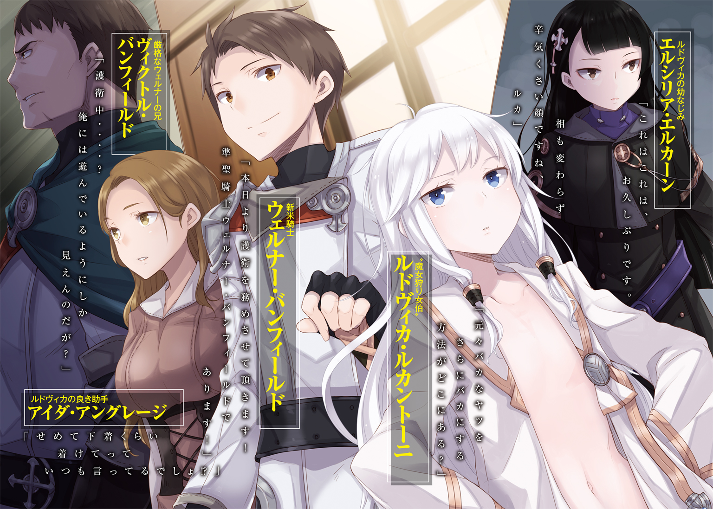

| ウィッチハント・カーテンコール 超歴史的殺人事件 | |
| 紙城境介 | |
この本は縦書きでレイアウトされています。
また、ご覧になる機種により、表示の差が認められることがあります。

 ダッシュエックス文庫DIGITAL
ダッシュエックス文庫DIGITAL
ウィッチハント・カーテンコール
超歴史的殺人事件
紙城境介
百年女王叙事詩第一歌 ルキーリオ語版（※）
新大陸はルキーリオ、王国治めしフェニーチェ王。在位既に四〇年、齢にして七十二。然れど美しさ損なわず、瞳に一片の曇りもなし。
到達歴は四一四、月は第三、日は二〇。所は王の間、皆々集い、迎えたるは新しき騎士。
歩んで進んで玉座の前にて、騎士は畏み頭を垂れる。騎士たる証の銀の徽章、未だ女王の懐に在り。
天の窓より光の祝福、女王の上に真っ直ぐ注ぐ。
然して其れは日差しに過ぎぬ。けれども其れは奇跡の日差し。
叫喚、叫喚、弾ける叫喚。
玉座が燃えて火柱昇り、影と浮かぶは女王の姿。
絶叫、絶叫、女王の絶叫。
めらめら燃えてゆらゆら歩み、どさりと倒れる騎士の前。其れでも消えぬ燃え盛る。玉座すらもが最早薪。
集いし皆々、目口をぽっかり開くばかり。水を、水を。新たな騎士が始めに叫ぶ。
ばしゃりばしゃりと水を掛け、炎も引敷も見る影なくなる。衣は燃え尽き肌は焦げ、然して奇跡か息はある。皆々一息安堵して、けれども皆々驚愕す。
新大陸はルキーリオ、王国治めしフェニーチェ王。
在位既に四〇年、齢にして七十二。
されども其処に伏せるのは。
肌は張りあり白く輝き、齢にすれば十六、七。
何処から見ても、少女であった。
※訳者注
本稿『百年女王叙事詩』は到達歴五〇〇年頃より各地の吟遊詩人によって歌い継がれてきたものを収集・編纂したものであるが、以上の第一歌だけはフェニーチェ女王の在位中から文章の形で存在し、幾つもの写本が出回っていた。執筆者は不明であるが、本稿では旧ルキーリオ語で記述されたその『原本』に極めて忠実に訳している。百年もの在位期間を実現させたこの『若返りの奇跡』の謎を、是非本稿を参考に解いて頂きたい。
（以上、『百年女王叙事詩（編・訳：ダニエル・カッサーノ）』より抜粋）

人助けに理由はない。
困っている人を助ける。それは良いことだからだ。
良いことをするのが正しいのだと、誰もがそう教えてくれた。
ガゴン、と馬車の車輪が側溝に落ちた。
「あーあ、やっちまった......。まあ荷物が落ちなかっただけ良しとせにゃ」
行商人は溜め息をつく。仕入れたばかりの荷物は馬二頭でようやく曳けるほどだ。それを載せたままでは車体を持ち上げるのは難しい。
これは骨が折れるな......、とうんざりしたその時だった。
「手伝います」
そう言って答えも聞かず車体の下に手をかけたのは、少年だった。
茶色い髪は清潔に切り揃えられ、身なりもいい。帯剣しているのを見ると新米の騎士か。
「気持ちは嬉しいが、騎士様、荷物の量を見てくだせぇ。とても持ち上げられる重さじゃ――」
「よっと」
と、そんな軽い声と共に、馬車の両輪が宙に浮いた。
目を丸くする行商人の前で、大量の荷を積んだままの馬車が柔らかに着地する。
少年騎士は手を払い、振り返って笑顔を浮かべた。
「他にも何かありますか？」
ウェルナー・バンフィールドは騎士である。
今年、騎士学校を晴れて首席で卒業し、刀礼を受けたばかりの新米騎士だ。先日ようやく研修を終え、本日めでたく初任務と相成った。と来れば、多少浮かれて――否、張り切りすぎてしまうのも新米にはよくあることだ。しかし、
「お前は変わらんな、ウェルナー」
と、ヴィクトル・バンフィールドは評した。
「心優しい、と言えば聞こえはいいが、お前のそれは呪いめいてすらいる」
「何を言うんですか、兄上。僕は学校で習ったことを実践しているだけですよ」
幅の広いあぜ道を行く馬車の中、ウェルナーは向かいに座る兄を見やる。
先程、通りすがりの行商人を手伝ったせいで時間が押している。馬は少し急ぎ足だった。
「繰り返すが、お前の初仕事は護衛任務だ」ヴィクトルの声は重々しい響きを孕むが、淡白だ。表情も石像のように硬い。「いざという時、優先順位を間違えるなよ」
「間違えませんよ。一に護衛対象、二に民衆」
「三に自分自身」ヴィクトルが言い継ぐ。「自分まで守れて初めて一人前だ」
ヴィクトルは見た目の印象からして堅苦しく、騎士団の中でも実直すぎるくらいに実直な堅物として認知されている。だがそれは使命に忠実であればこそ。上司や先輩、兄というのを抜きにして、ウェルナーはヴィクトルという男を尊敬していた。
「見えてきたな」
しばらく田園風景を眺めながら馬車に揺られていると、前方に小高い丘が見えてきた。
丘の上に、大きな屋敷が建っている。
馬車は丘を登り、その屋敷の前に停まった。降りるなりウェルナーは感嘆の息をつく。
屋敷そのものは貴族としては平均の範囲に収まるだろう。だがその手前――門の向こうに広がる庭園は、特筆して見事なものだった。綺麗に切り揃えられた生垣の道に、幾つも連なった優美なアーチ。迷路庭園かと思ったが、どうやら八重の同心円を描いているようだ。
「すごい......。こんな凝った庭園、初めて見ました」
薔薇に飾られたアーチを潜りながら溜め息をつく。洗練された剣術を見た時のような感動があった。だが前を歩くヴィクトルは特に反応を示さない。
「護衛対象のことをもう一度確認しておく」
代わりに、彼は至極事務的な話題を口にする。ウェルナーは気を引き締めた。
「護衛対象はここファーネラの領主、ルドヴィカ・ルカントーニ伯爵だ。お前も名前くらいは聞いたことがあるはずだな」
「『魔女狩り女伯』......」
ウェルナーの呟きに、ヴィクトルは頷いた。
「一年前の『リーパー事件』で、犯人である第六魔女〈リーパー〉をその類稀なる頭脳をもって暴き出し、処刑場送りにした、現状世界唯一の魔法研究者だ」
『リーパー事件』――六ヶ月もの間、帝国中で『死因のない死体』を量産した最大最悪の殺人事件だ。優秀な異端審問官や騎士が束になっても歯が立たなかったその事件を、快刀乱麻を断つ勢いで解決したのが通称『魔女狩り女伯』ルドヴィカ・ルカントーニである。
物騒な通称だが、領内で見境なしに魔女をひっ捕らえているわけではない。彼女の肩書きは『魔法研究者』で、魔女狩りはその成果なのだ。当初こそ胡散臭がられていたが、その知識、頭脳、そして結果によって世間の評判を覆した、紛れもない大天才である。
「伯爵の遺跡調査に同道し、安全を確保する。それがお前の仕事だ」
「遺跡――旧都プネリトの旧ルキーリオ王城ですね？ 『百年女王』で有名な。今はただの廃墟になってるはずなのに、何を調査するんでしょうか」
「そこまでは俺も知らん。だが、皇帝陛下直々のご依頼だそうだ」
「皇帝陛下の！ へぇえ......すごいなあ、きっと知的で高潔な女性なんだろうな」
ヴィクトルが弟を流し目で見たが、何も言葉にしなかった。
噴水のある広場に出る。噴水の中心には知恵の天使を模した像が立っていた。白く美しい身体を朝日できらきら輝かせ、向かって右側の水面にくっきりと影を落としている。
「あら。これはこれは、ヴィクトル様。お待ち申し上げておりました」
広場には一人の女性がいた。ゆったりめのメイド服を身に纏い、手には大きな鋏を持っている。庭師を兼ねたメイドのようだ。歳は二〇歳前後に見える。ボリュームのある金髪と、少し出っ張ったお腹が目を引きつけた。どうやら妊娠しているらしい。
「ビビアナ殿。遅くなって申し訳ない」
「いえいえ。うちのご主人様もゆっくりした方ですから。ジルベルトさんは少し焦れておられましたが。......あら、そちらの方は？」
ビビアナと呼ばれた女性がウェルナーに目を向ける。ウェルナーはビシッと敬礼した。
「帝国騎士団本部所属、準聖騎士ウェルナー・バンフィールドでありま――」
「あらあらあらまあまあまあ」
にこにこにこずいずいずい。笑顔のまま詰め寄られ、物珍しそうに見分される。
「あなたがヴィクトル様の......あらー、美男子でらっしゃって！」
「恐縮です！」
「私がもう少し若ければ......」
「いえいえ！ ビビアナさんもお歳の割にはお若くていらっしゃる！」
「ウェルナー。彼女は言動が若者らしからぬだけで正真正銘の二〇歳だ」
こいつは失敬、いえいえおほほ、と和やかにファーストコンタクトを済ませた所で、二人はビビアナに案内され、再びアーチを潜っていく。
辿り着いた大きな観音開きを通り抜け、屋敷に入るとエントランスだ。柔らかな絨毯にシャンデリア、壁には絵画や彫刻など、見慣れた豪奢さが広がっていた。
「俺はビェーラー殿に挨拶してくる。ウェルナー、お前はここで待て」
「わかりました、兄上。......ビェーラー氏とは？」
「ジルベルト・ビェーラー。この家の執事だ。ルカントーニ卿は領主の仕事に関心がない。そのため、ビェーラー殿が大部分を代行されている」
仕事に関心がない......。なるほど、いかにも天才らしい。
ビビアナに先導されて、ヴィクトルは二階に姿を消した。
待てと命じられた以上は待つのみだ。ウェルナーは背筋を伸ばし、直立不動で佇んだ。
「......ん？」
ウェルナーは兄が帰ってくるまで微動だにしないつもりだったが、結果から言えば動かないでいられたのはたった五秒だった。
どこからか、呻き声のようなものが聞こえてくる。
右か左か――右のようだ。うーんうーんと、聞けば聞くほど苦しげな呻き声である。
ここで待て、と命じられたが......現場の判断も大切だと、騎士学校で教師が言っていた。
右に伸びる廊下を進んでいく。と、徐々に呻き声が大きくなっていった。
発信源は、突き当たりにある大きめの扉だ。
一応ノックをする。返事はない。呻き声が返ってくるのみだ。
「失礼します」
断りを入れ、扉を開く。ここは......書斎、だろうか。壁際を大きな本棚が占めており、新古問わず様々な書物が詰め込まれている。窓際の執務机には蓋が開きっ放しのインク壺と放り出されたペン、そして乱雑に積まれた本の塔。部屋の中央には応接用か休憩用か、大きなソファーがあった。姿こそ背もたれに隠れているが、呻き声はソファーから聞こえていた。
「大丈夫ですか？」
声をかけながら、背もたれの向こうを覗き込む。
――天使がいた。
いや、天使ではない。人間だ。
一瞬、天使の羽のように見えたのは純白の長髪だった。自分自身のそれに包まれるようにして、小柄な人物がソファーの上にうつ伏せになっているのだ。
なぜこんなにも白いのだ、と思ったら、どうやら白衣を着ているらしい。極めつけに、肌までもが不健康なまでに白かった。一見では真っ白の何かが転がっているようにしか見えない。
真っ白の何かは、ウェルナーの声など聞こえていないかのように呻き声を上げ続けている。いや、あるいは返事もできない状態なのか。
「大丈夫ですか？」
ソファーの正面に回り込みつつもう一度話しかけ、肩に手をかけた。
おや？ と思う。何だか、やたらと華奢だ――ああ、そうか、女の子なのか。
「――......ん、んー......？」
合点したと同時に、真っ白な少女が起き上がった。
白髪の奥から、シャム猫を思わせるサファイア色の瞳が胡乱げにウェルナーを見る。ウェルナーはといえば、彼女の顔など見ていなかった。
「なんだ、オマエは？」
お前こそなんだ、と言い返してしまう所だった。というか、なぜだ。
なぜ、白衣の下に何も着ていない？
襟は膨らみかけの胸の上を流れているだけ。ボタンさえ留めていれば隠れるはずの臍も、白いお腹の真ん中に堂々たる姿を晒している。太腿その他、下半身は言うまでもない。
つまるところ、ノーガードだった。
「だっ！ そっ！ なっ！」
「だ？ そ？ な？ ......すまんが、できれば現代語で話してくれないか」
なっ――なんて、ことだ......。
高潔なる騎士の身で、おそらく婚前だろう女子の肌を覗いてしまうなんて......。
「オイ。人の部屋で勝手に打ちひしがれるな。さっさとわたしの質問に答えろ」
「ぼ、僕は――」
「――ルドヴィカ？ 今の声――あっ！」
隣の部屋から少女がもう一人出てきた。女性としては背が高めで、柔らかな栗色の髪が肩から豊満な胸に流れている。きっと年上だろうが、ビビアナよりは下だろう。
「おお、アイダ。オマエはコイツのこと――」
「そんなことより！」膝をついて打ちひしがれるウェルナーには丸っきり気付かず、栗色の髪の少女は裸白衣の少女に詰め寄った。「ダメじゃない、またそんな格好して！ せめて下着くらい着けてっていつも言ってるでしょ!?」
「断る。あんな鬱陶しいものを穿くのは馬に乗る時だけで充分だ」
「鬱陶しいとかそういうことじゃなくて！ 今日は騎士様が来るんだから、ちゃんとしとかないといけないの！ 騎士様は男の人なんだよ!?」
「騎士？」小首を傾げ、それから納得深げに頷く。「ああ、そうか。今日はヴィクトルが弟を連れてくる日だったな。ということは、コイツがそうか」
「え？」
栗色の髪の少女は足元を見下ろし、ようやくウェルナーを発見した。
それに気付くやウェルナーはすっくと立ち上がり、ビシッと敬礼する。
「帝国騎士団本部所属、準聖騎士ウェルナー・バンフィ」
「きゃあぁああああああああああああああああああああああああああああああああっ!!」
ひと悶着あった。
そのうち騒ぎを聞きつけたヴィクトルとビビアナがやってきて、やっと事態は収束した。
「彼女がこのファーネラの領主、ルドヴィカ・ルカントーニ伯爵だ」
ヴィクトルがソファーに座る白髪の少女を示して言う。ちなみに少女はアイダの手によって肌着を着させられ、白衣の前も閉じさせられていた。
「そしてそちらがアイダ・アングレージ殿。伯爵の助手兼侍女だ」
「お騒がせしました......」
ソファーの後ろに立つアイダが恥ずかしげに俯く。栗色の髪に隠れているが、顔が真っ赤になっているのがわかった。
ウェルナーは不躾と知りつつも、純白の髪の少女――ルドヴィカ・ルカントーニと紹介された少女をしげしげと見る。
......これが魔女狩り女伯......？
「............途轍もない童顔？」
「ウェルナー。彼女はお前と同い年の十五歳だ」
「えっ」
それはそれで幼すぎる。二つは年下だと――
「『二つは年下だと思っていた』という顔をしているぞ、たわけが」
当の少女に眉を顰めて言われ、ドキリと心臓が跳ねる。一言一句言い当てられていた。
ルドヴィカは貫録ある仕草で腕と足を組み、立ったままのウェルナーを睨め上げる。
「ところで、わたしはまだ答えを聞いていないのだが？」
「え？ 答え？」
「『なんだ、オマエは？』とわたしは質問したはずだな。その答えを聞いていない」
ああ確かに、とウェルナーは納得し、本日三度目の敬礼を決めた。
「帝国騎士団本部所属、準聖騎士ウェルナー・バンフィールドであります。本日より護衛を務めさせて頂きます！」
ルドヴィカは鼻を鳴らして立ち上がり、ウェルナーに歩み寄る。そして、「えっ？ なっ、ちょっ――」唐突に身体をべたべたと触り始めた。
ウェルナーはされるがままになり、困惑してヴィクトルに目を向けた。ヴィクトルはじっと押し黙り、ルドヴィカの唐突な行動を静観している。
「なるほどな」と呟いて、ルドヴィカはウェルナーを解放した。
「あの、今のは――」
「やたらと均整の取れた筋肉だ。生傷もほとんどない。実戦経験はあっても喧嘩はしたことのない温室育ちだな。兄に視線で助けを求めた所を見ると、言われたことをするのは得意だが自分で判断するのは不得意のようだ。女のわたしに触れられても鼓動がまったく乱れなかったことから、色恋に興味はなし。すぐ説明を求めた辺り、謙虚なほうではないな。親戚によく言われるんじゃないか？ ウェルナー君は素直で真面目でいい子ね、と」
その通りだった。逐一何もかもその通りだった。
説明を求めようとヴィクトルを見ようとして、慌ててやめる。『言われたことをするのは得意だが自分で判断するのは不得意』。
「さて、そろそろ時間か」
ルドヴィカは不意に背中を見せた。ウェルナーにはもう毛ほども興味がないようだ。
「質問があれば、馬車の中で聞こう。時間は有限だ。そのほうが効率的だろう？」
「さっきのはどういうことです？」
大きな馬車にはウェルナー、ヴィクトル、ルドヴィカ、アイダ、そしてビビアナの五人が乗り込んだ。馬車に揺られ始めてすぐ、ウェルナーは正面のルドヴィカに問いかける。
白髪白衣の少女は唇を皮肉げに歪め、
「性格もわからないヤツに守られたくなどないからな。少しばかり測らせてもらった。結果、よくわかったよ。わたしはオマエとは仲良くなれそうにない」
唐突な棘のある言葉に、ウェルナーは反応できない。代わりにアイダがくすくす笑う。
「ルドヴィカが仲良くなれる人なんて限られてるじゃない。偏屈なんだから」
「必要性を感じないだけだ。領主の仕事をジルベルトに任せる前は把握しきれないくらいの交友関係があった。ドイツもコイツも喋ってるだけでヘドが出るような連中だったがな」
「いつファーネラの領主になったんですか？」
このままではいけないと果敢に話しかけてみたが、あからさまにそっぽを向かれた。
「......僕、何かしてしまったんでしょうか？ やっぱり最初の......」
嫁入り前の女性の肌を見てしまったのだ。嫌われて然るべきだ。
「いえ、それは関係ないと思います」アイダが微笑んで言った。「たぶん、敬語が気に入らないんだと思いますよ」
「敬語？」
「ふふ。タメ口で話しかけてみてくださいな。さあ遠慮なさらず」
妊婦のビビアナに勧められ、ウェルナーは軽く文案を練る。タメ口なんて久しぶりだ。
「どうして敬語がダメなんだ？」
ルドヴィカがそっぽを向いたままシャム猫のような碧眼をウェルナーに向ける。そして、
「......敬語は口調を隠すための言語だ」不承不承と言った感じで喋り出した。「口調もわからないヤツとの会話など、一往復が限界だ」
おお、とウェルナーは得心する。
「ウェルナー。納得するのは構わないが、触発されて真似するのはやめておけ」
まさか。そこまで単純ではない。......ウェルナーは目を逸らし、うっと呻いた。
「さっき、オマエのことを『素直で真面目』と評したが――」サファイアの瞳が呆れたそれになる。「――訂正しよう。オマエは『バカ正直でクソ真面目』だ」
騎士学校の友人から頂戴しているのとまったく同じ評価だった。
「ついでに言っておくが、人のことを家の名前や爵位で呼ぶのもナンセンスだ。......オマエの兄は何度言っても直そうとせんがな」
ルドヴィカは憎々しげに言うが、ヴィクトルのほうはチラリとも見ない。これまでルドヴィカと兄が一言も会話していないことに、ウェルナーは気付いた。
「じゃあ、ルドヴィカ。僕と君が仲良くなれない、っていうのはどうしてなんだ？」
「どうしても何もない。性格的な問題だ。オマエも感じているはずだぞ、わたしとの馬の合わなさを。感じていないとしたら、相当綺麗なお花が頭に咲いているのだろうな」
花？ と首を傾げたら、「そういう所のことだ」と見下げ果てたように言われた。
「......まったくもって疑問だな。どうしてオマエのようなヤツが今期の聖騎士なのか」
「えっと......もしかして、馬鹿にされてる？」
「元々バカなヤツをさらにバカにする方法がどこにある？」
アイダが苦笑いしている。ビビアナはにこにこ。ヴィクトルは仏頂面だ。
「見た所、バカと正直が過ぎる以外は単なる貴族のボンボンだ。聖騎士の器とはとても思えん」
「それは聞き捨てならないな」
少しだけ声を固くした。『聖騎士』とは、騎士学校で最も優秀な成績を収めた者のみに与えられる称号であり力である。その強さは通常の騎士など足元にも及ばない。十二期前の聖騎士である兄に少しでも追いつきたかったウェルナーの、何年にも渡る努力の成果なのだ。それを否定されることは、その努力を――時間を否定されるのに等しい。
表情を固くしたウェルナーを見て、ルドヴィカは初めてにやりと面白そうに笑った。
「いいや、つくづく疑問だよ。果たしてオマエ如き温室育ちにまともに護衛が――」
その時、急に馬車が止まった。
軽くつんのめり、ウェルナーは外を見る。いつの間にか田園風景ではなくなっていた。馬車は平原に横たわる街道の上にある。鹿らしき動物が一目散に逃げていくのが見えた。
「何事だ！」
ヴィクトルが鋭く声を放つと、御者の怯えた声が返ってくる。
「ま、魔獣ですっ......グリフォンです！」
「グリフォンだと？ 幸先の悪い......。ウェルナー――」
ヴィクトルはそこで続けるべき言葉を失った。......弟がいなかったからだ。
いつの間にか、馬車の扉が開け放たれている。
ヴィクトルは急いで馬車を降りた。続いてルドヴィカ達も降りてくる。
ズズン......！ と重々しい振動が伝わってきたのは、その直後だった。
街道の上に、鷲と獅子を混ぜたような獣が倒れ伏している。倒れた状態でも家屋一階分の高さがあった。大の大人を前脚一本で薙ぎ払える怪物だ。それが力なく倒れている。
ウェルナーの姿は、その手前にあった。
彼は魔獣の血が滴る長剣を血振りし、鞘に納める。そして振り返り、
「まともに護衛が――なんだって？」
馬車のほうに――否、ルドヴィカに声を放った。
「――くっ......くっくっく......！」
ルドヴィカは肩を揺らす。――ウェルナーの口元には、得意げな笑みがあった。
ひとしきり笑い終えると、白い少女は少年騎士のほうに歩いていく。
「いや、参った。悪かった。訂正しよう」
ウェルナーの前に立ち止まり――ルドヴィカは、透き通るように白い手を差し出した。
「はじめまして、聖騎士ウェルナー・バンフィールド。わたしはルドヴィカ・ルカントーニだ。今の所どのくらいになるかわからないが、道中と滞在中の安全をオマエに任せよう」
それは、彼女が今日初めて口にする挨拶であり、自己紹介だった。
ウェルナーは笑い、少女の手を握り返す。
「任された。君達の安全は、僕が間違いなく保証する」
こうして、ウェルナー・バンフィールドとルドヴィカ・ルカントーニは出会った。
しかし、これは始まりではない。始まりなど、とっくの昔に終わっているのだから。
千年もの時間を超越する、超歴史的殺人事件―――
―――その終わりが、これから始まる。
第一幕 百年女王の碑文
旧都プネリト。
新大陸の九割を占める大国家・神聖インペリア帝国のほぼ南端に位置するこの都市は、到達歴最初期に開拓者や冒険者によって形成された。その後、当時新大陸南部を支配していたルキーリオ王国の首都となり、国が革命で一旦共和制になるまでの間、国家の中枢であり続けた。
そんな歴史があるからか、プネリトには今も多くの人々が住まい、訪れている。首都ではなくなって千年もの年月が経とうとしていても、活気だけは帝都のそれにも劣らない。
ファーネラから馬車で一〇日――ウェルナー達はプネリトに到着した。
「......南部は暑いな」
「夕方だからまだマシだよ。この辺はこの時季、お昼になると真上から日が差して、日陰に逃げることすらできなくなるんだから」
うへえ、とアイダの言葉に嫌そうな顔をするルドヴィカ。ウェルナーは暑さ如き苦にならないが、ルドヴィカが服を脱ぎ出さないかだけが心配だった（道中何度かやりかけた）。
「ならば夕方のうちに行動すべきだ」とルドヴィカが言い出したため、手配しておいた宿に荷物や馬車を預けるや、すぐさま目的地の旧ルキーリオ王城へ向かった。
ただし、身重なビビアナは宿で待機である。そもそもどうして彼女をこの旅に連れているのか疑問だったのだが、道中ルドヴィカに聞いた所によると、当のビビアナ自身が「まあ！ 私がいなかったら誰がお洗濯をしますの？」と強弁したらしい。
「ビビアナさんの旦那さんには会ったことあるのか？」
「ない。いるのかどうかもわからん。ビビアナは色んな家を転々としているからな。案外、他の屋敷でお手付きにでもなったのかもしれん」
「そりゃ世の中にはそういう不誠実な貴族もいるけどさ、まさかあのビビアナさんが......」
「後学のために教えておいてやろう。女ほど見かけと中身が一致しない生物はいない」
「なるほど......」
「わたしを見て納得するな！」
一〇日でルドヴィカとも大分打ち解けた。話してみるとなかなかどうして悪い子ではない。少し頑固で横柄で偏屈で非常識で、それらを類稀な能力と容姿で押し通しているだけだ。
旧ルキーリオ王城は街の中心にある。現在は使われておらず、帝国騎士団の管理下にあるが、ルドヴィカの調査のために中に入る許可を取っていた。
「大きい......」
聳え立つ城を見上げ、アイダが呟く。幾つもの尖塔を持つオーソドックスなデザインの城だ。今は西から差す夕日で赤く染まっている。城壁と言える城壁はなく、戦略的拠点というよりは象徴としての意味合いが強いのだろう。プネリトはすぐ南に魔獣や猛獣がひしめく『懺悔の樹海』が広がっているので、街自体が頑強な壁に囲われているのだ。
「すごいな......千年前の城なのに、まだまだ丈夫そうだ」
「当時はまだ旧大陸の技術が少し残っていたからな。この程度は驚愕に値せん」
見張りの騎士に門を開けてもらい、冗談のように広い庭を横切った。入口だろう観音開きの大扉に辿り着くと、ウェルナーが一人でそれを開く。見た目ほど重くはなかった。きっと女性でも開けるだろう。だからと言ってルドヴィカがやるわけもないが。
扉の奥は長大な廊下だった。整然と並んだ列柱と冷え冷えとした通路が霞むほど遠くまで伸びている。天井は眩暈を催す高さで、教会のように丸みを帯びていた。
窓は少なく、薄暗い。あらかじめ用意していたカンテラに火を灯し、入口の扉を閉める。
薄闇を遠ざけながら歩き出した。カツン――カツン――と、足音が長く反響していく。
「ウェルナー。『百年女王』ことフェニーチェ王についてどこまで知っている？」
反響した声がウェルナーの耳朶を震わせた。ウェルナーは視線を天井に上向け、
「『百年女王叙事詩』は昔読んだよ。他のどの王よりも国民に愛されたルキーリオの英雄で、『若返りの奇跡』を起こして百年以上国王を務めたって......」
「充分だな。ならば、わたしに求められていることも想像がつくだろう」
ルドヴィカと話していると、心中を言い当てられるのは日常茶飯事だ。今回も例に漏れず、それはこの一〇日の間ウェルナーが考えていたことだった。
「『若返りの奇跡』の謎を......解く？」
「正解だ」
短い声が闇に染み込んでいく。
「でも、謎って言ったって......あれは作り話なんじゃないのか？」
「それが、どうもそうじゃないみたいなの」
答えたのはアイダだった。彼女はウェルナーにも敬語を使わないようになっていた。
「古い文献を紐解くとね、その奇跡の瞬間を見たって話が幾つも出てくるの。しかもそのすべてが叙事詩第一歌の描写と一致していて......」
「『奇跡』は実際に起こった。このわたしが言うんだ、間違いない」
ルドヴィカは魔法研究者を名乗ってはいるが、実質的な専門は文献学らしい。旧ルキーリオ語も読み書き自在で、筆跡を一目で鑑別できるという非常識な能力まで持っている。
「奇跡は実際に起こった？ でも、それって......」
「ああ」にやり、とルドヴィカは唇を曲げる。「どう考えても、魔法だな」
ウェルナーは息を呑む。魔法――ということは、
「我が国の英雄が、魔女だった......って言いたいのか？」
「そう。百年女王ことフェニーチェ王は魔女だ。そうとわかれば即処刑場行きの異端者中の異端者――世界に十一人しかいない魔女の一人だよ」
魔女。
それが現存することが明らかになったのは、およそ百年前――ある一人の冒険者が、ここプネリトのすぐ南にある『懺悔の樹海』に分け入り、奥地でとある洞窟を発見してからだ。
その洞窟の壁には、以前そこに辿り着いた者の『懺悔』がびっしりと刻まれていた。
曰く、自分は魔法惜しさに悪魔と契約してしまった。曰く、魔法は血によって継承される。曰く、自分以外にも魔女はいる。曰く、同じ魔法は同時に二つ以上存在しない――
魔法はかつて人類に空前の栄華を齎し、それゆえに神に没収された禁断の能力だ。それを悪魔と契約してまで保有するなど言語道断――アルシア教団はそうお触れを出し、結果、現在に至るまで魔女は侮蔑と恐怖、そして弾圧の対象となっている。
「もちろん、わたしがそう言い触らした所で誰も信じはせんだろうがな。だからこうしてわざわざ現場に赴いて、手掛かりを探そうというわけだ」
「でも、皇帝陛下直々の依頼なんだろう？ 陛下もどうしてそんな依頼を......」
「違うな。依頼ではない。『極秘の依頼』だ」ふん、とルドヴィカはくだらなそうに鼻を鳴らす。「最近、急速に台頭している元老院議員がいる。英雄・フェニーチェ女王直系の子孫を妻に持つという触れ込みのヤツだ。ソイツの頭を押さえておきたいのだろう」
「それってアングレージ議員のことか？」口にしてからウェルナーは気付いた。「ん？ アングレージって、確か......」
「アウグスティーノ・アングレージ――あたしのお父さん」
アイダが遠慮がちに言った。アイダ・アングレージ――それがアイダのフルネームだ。
「まったく、無神経なものだ。父親を失脚させるための依頼を実の娘がいる所に持ってくるとは......。興味がなければ突っ返していたぞ」
「同感だけど、興味があるからと言って依頼を受けてしまう君もどうなんだよ」
突き当たりに辿り着いた。焦げ茶色の大扉が見上げんばかりに聳えている。この向こうには王の間と『とある遺物』があるはずだ。
ルドヴィカの目配せを受け、ウェルナーは扉を開ける。
そこは、名に違わぬ超然とした空間だった。
調度の類はさすがに残っていないものの、その広大さ、その装飾、そしてその空気に往時の残滓が漂っている。奥に長い長方形の空間で、前後の差し渡しは三〇メートルほど。最奥に背もたれを高々と天に伸ばした玉座があり、その後ろの壁に――
「あれか」
そう呟くルドヴィカの声には、どこか興奮の色があった。
薄暗い空間をカンテラで照らしながら、玉座のほうへと進んでいく。
玉座の真上には大きな天窓があった。きっとあれが『百年女王叙事詩』の第一歌に出てくる『天の窓』だろう。あそこから『奇跡の日差し』が降り注ぎ、女王は燃え上がった。今は赤く焼けた空が見えるだけだ。
ルドヴィカは玉座の後ろに回り込むと、無言でアイダに向けて手を差し出した。アイダにはそれで意図が伝わったようで、懐から眼鏡を取り出し、ルドヴィカに手渡す。木製フレームのそれを掛け、ルドヴィカは薄闇でもわかる爛々とした瞳で『それ』を見た。
玉座の後ろの壁には、文章が刻まれている。
「これが、『百年女王の碑文』......」
フェニーチェ女王が晩年に遺したとされる怪文章だ。知識人の間では『フェニーチェ王の墓の場所を示している』とする定説があるが、実際に発見した者は千年間皆無である。
ウェルナーはカンテラで碑文を照らしてみた。見慣れない文字が五行に渡って連なっている。現代の公用語であるルキーリオ語ではない。旧ルキーリオ語だ。
「......ん？」ふとウェルナーは気付いた。「ここ、抜けがある......ここも、ここもだ。やっぱり千年も経つと劣化するんだな......」
文章は所々歯抜けになっていた。千年も前に刻まれたのだ、そういうこともあるだろう。
「いや......」ルドヴィカが鬱陶しげに髪をかき上げる。「これは、ボナンザグラムだ」
「ボナンザグラム？」
「待て。いま訳してやる」
そう言って、ルドヴィカは滑らかに碑文を読み上げ始めた。
我が運命は遂げられた。我が血と我が友の末永き幸いを願い、ここに我が意を刻む。
失った「 」は真実への道標。仮初の茎にも言の葉は茂る。
降り注ぐ月光、枯れ果てた「 」、天使は道を示すだろう。
魔獣に魔女に魑魅魍魎、誰しも涙し「 」する。始めの獣の勇気や如何に。
愛しき「 」が眠る場所、我が骸もそれに倣おう。真実の封は既に切られた。
すべて聞き終えて、ウェルナーは気付いた――抜けている言葉が絶妙すぎる。
「ボナンザグラム――確か、文章に空いた穴を埋めるパズルだったか」
ヴィクトルがよく通る声で呟いた。ルドヴィカはそれには答えず、
「どうりで千年も解かれないわけだ......。そもそも文章が完成していないのだから」
ルドヴィカは納得深げにおとがいを撫でるが、ウェルナーは疑問に思う。
「よくわからないけど、パズルなんだろう？ だったら解けるはずじゃないか」
「ボナンザグラムは確かにパズルに分類されるが、決して論理的なモノではない。なぜなら、どう足搔いても答えを一つに絞り切れないからだ」
ウェルナーはルドヴィカが訳した碑文を反芻し、解読を試みた。しかし――言われた通り、答えを一つに絞り切れない。当てはまる言葉は幾つでも考えられた。
「しかもこの碑文には一貫した文脈が見て取れない。意味が通る文章ができあがるまで考え得る答えを片っ端から試す、というのも無駄だろう......」
「じゃあどうやって解くんだ？」
「解けない」ルドヴィカはあっさりと断言した。「出題者が生きているなら話は別だが、答え合わせができない以上、解読不可能だ。この碑文は未来永劫、意味不明なままだよ」
ルドヴィカは眼鏡を外し、アイダに差し出した。
ぼうっと碑文を見ていたアイダは「あっ、はい」と眼鏡を受け取り、懐に仕舞う。
「あるいは、フェニーチェ女王になったつもりで考えれば何か思いつくかもしれんな。例えばそこの玉座に腰掛けて――」
「まさか」とウェルナーは笑った。のだが、
「いや、待てよ......アリだな」
そう呟いて、ルドヴィカは本当に玉座に座ってしまった。彼女は女性としてもかなり小柄なほうだ。座っているというよりは玉座に抱かれているように見えた。
「何か思いついたか？」
ルドヴィカなら本当に何か思いつきかねない。そう思って訊ねたが、返事はなかった。
白衣に白髪の真っ白な少女は、玉座に座したまま固まっている。
「......ルドヴィカ？」
再び声をかけた瞬間、バッ！ と弾かれたようにルドヴィカが動いた。
長い背もたれにトカゲの如く張り付き、鼻を近付けてくんくんと匂いを嗅ぐ。突然の奇行に面食らうウェルナーを尻目に、今度は床に四つん這いになって同じことを繰り返した。
ルドヴィカは匂いを嗅いだりこんこん叩いたりしながら床を這い回る。さすがに心配になり、ウェルナーは彼女をカンテラで照らして話しかけた。
「ルドヴィカ？ 君、大丈――」
「火を消せ！」瞬間、鋭いルドヴィカの声。「全員だ！ 今すぐ火を消せ!!」
「？ 火を？ どうして――」
「たわけがッ！ 丸焦げになりたいのか!!」
わけもわからず怖気が走り、ウェルナーは慌ててカンテラの火を消した。他の者達もそれに倣ったのか、王の間はあっという間に闇に包まれる。
暗さに慣れない視界の中で、ルドヴィカの影が起き上がるのが見えた。
「薪石だ」苛立たしげに頭を搔く音がする。「この王の間は薪石でできている」
「なんだと？」
最も強く反応を示したのはヴィクトルだった。薪石――ウェルナーにも聞き覚えがある。
「ストーントレントという魔獣の身体の一部だ」ヴィクトルが説明した。「外見的にはただの石と見分けがつかないが、木よりも遥かに高い可燃性を持つ。火の粉一つで簡単に引火する」
「えっ......それじゃあ」
怯えたようなアイダの声に、「ああ」とヴィクトルの声が応じた。
「危ない所だった。もしカンテラを落としでもしていたら、ここで全員焼け死んでいた」
ぞわっという感覚がウェルナーの背筋を駆ける。巨大な魔獣の腹の中にいるような、気持ち悪さ。周囲を埋める闇が途端におぞましいものに見えてきた。
「......やってくれる」
ルドヴィカのその声には、忌々しさと愉快さが同居していた。
闇に慣れたウェルナーの目には、唇を凄絶に歪めた少女の顔が、はっきりと映っていた。
「百年女王フェニーチェ――オマエが被った化けの皮、必ず剝ぎ取ってやる」
それから三日間、ルドヴィカはアイダを伴い、旧ルキーリオ王城やフェニーチェ女王に関する調査に明け暮れた。ヴィクトルは単なる監督官であり、多忙でもあるため別行動が多かったが、ウェルナーはそのすべてに同伴した。
王城の調査があらかた終わった二日目のことである。
「どうやらこの王の間は別名を『炎獄の間』と言って、敵をおびき寄せて一網打尽にする罠だったらしい」
広大な王の間――否、炎獄の間にルドヴィカの声が響き渡る。彼女は今日も今日とて白衣だが、下にもちゃんと服を着ていた。
「フェニーチェ女王が若返った後に作らせたもののようだ。改装を命じた記録が残っている」
「何かの拍子に燃えてしまったりはしなかったのか？ この部屋、窓が少ないし、松明やカンテラを持ち込まないと暗いだろう」
「改装の後は火気厳禁だったみたい」と、これはアイダ。「謁見は決まってお昼だったそうだから、天窓から差し込む光で充分だったんだろうね」
ウェルナーは玉座の上にある大きな天窓を見上げる。もうすぐ正午だ。天窓からの日差しがわずかに奥に向かって差していた。
薪石のことはすでに管理者に報告してあり、王の間からは火元になるものが軒並み排除されている。万が一にも火事にはならないはずだが、それでも空寒い気持ちは拭えない。
「それにしても、アイダさんはいいの？」それから目を逸らすようにして、ウェルナーは言った。「これは君のお父上を失脚させるための調査なんだろう？」
「そのことなら大丈夫だよ」アイダは微笑んで答える。「一昨日、ルドヴィカはああ言ったけど、あれはただの勢いなの。厳密に言えば、フェニーチェ女王は魔女じゃないもの」
えっ？ とルドヴィカに目を向けると、彼女は面白くなさそうに唇を尖らせた。
「えっと......ウェルナー君、『魔法全書』は知ってるよね？」
「『魔女の懺悔』が発見されるまで皇家が秘匿していたっていう、現存するすべての魔法が網羅された本のことだろう？ 正直詳しい内容までは覚えてないな......」
「不勉強だな、ウェルナー。どんな村にも一冊はあるような有り触れた本だぞ」ルドヴィカが呆れた声で言う。「アイダ、手本を見せてやれ。インデックスだけでいい」
アイダは頷いて、魔法全書のインデックスを諳んじ始めた。
●魔法第零章〈パラドックス〉
神すらも与り知らぬ外法の法。流るる水面が満ちるその時、此方と彼方が覆る。
●魔法第一章〈セイクリッド〉
神より賜りし慈悲の法。剣に宿りしは聖域の血潮。
●魔法第二章〈リライト〉
神の領域に踏み入る改竄の法。読まぬ者に横槍の権利はない。
●魔法第三章〈エターナル〉
神に愛されし永劫の法。時に愛は鎖に似て、終わりと始まりを一つに繫ぐ。
●魔法第四章〈ノーフェイス〉
神をも欺く変幻の法。人は元より顔など持たず、仮面と仮面のにらめっこ。
●魔法第五章〈オーサー〉
神にも伍する創造の法。神は紙を滑る筆、運命は連ねられた文字。
●魔法第六章〈リーパー〉
神すら殺す死神の法。命は触れれば崩れる張り子でしかない。
●魔法第七章〈ルーラー〉
神を僭した支配の法。人為は偽り。故にこそ真。
●魔法第八章〈エレメント〉
神を模した万象の法。森羅万象は五つの元素を循環する。
●魔法第九章〈サモン〉
神をも恐れぬ越境の法。世界という額縁に何を飾るか。
●魔法第十章〈ネメシス〉
神より預かりし断罪の法。唯一にして絶対の罪、それは死の強制。
「この通り、現存する魔法は十一個だ。いや、〈リーパー〉の魔女はこの前処刑されたし、あともう一つは継承が途絶した魔法があるとわたしは確信しているが、とにかく十一個の魔法が魔法全書には記されている。特に重要なのは各章に載っている魔法の遭遇事例だ。古くは到達歴一二年、新しくは一一三五年のものまで網羅されている。幾つか例を挙げると――」
ルドヴィカは広い王の間を歩き回りながら語り続ける。いつになく舌が滑らかだ。
「到達歴二三六年。ここプネリトでの話だ。ある少女が雑談の折、プネリトに国王がやってきた時――つまり遷都の時のことを詳細に語った」
「え？ プネリトが首都になったのは確か到達歴一三一年――百年も前じゃないか」
「ああ」ルドヴィカは頷く。「これは第三章〈エターナル〉に記載された事例だ。これを踏まえて考えると、〈エターナル〉は寿命を延長する魔法であると推測できる。確証はないがな」
寿命の延長――見た目にそぐわない老獪な雰囲気を漂わせる少女を、ウェルナーは想像する。
「さらにもう一つ挙げてみよう。到達歴一〇六八年。とある人攫いが深夜、ある家に忍び込み、赤ん坊を盗もうとした。だが翌朝、人攫いは赤ん坊の傍で死体となっていた。死因となり得る傷も毒殺の形跡もない綺麗な死体に――どの魔法の事例かわかるか、ウェルナー？」
「魔法第六章〈リーパー〉――『触れただけで生物を殺せる魔法』だ」
ウェルナーは即答した。一年前のリーパー事件で使われた魔法だ。魂だけを殺されたかのような死体の状態から、解決前は『大量殺魂事件』と呼ばれていた。
「正解だ。さすがにわかったか。......こうした事例が各章に幾つも載っているわけだが、それらがまたいちいち他の資料と合致していて、執筆者もわからないくせに信憑性はかなり高い。まあ〈パラドックス〉だけは事例が一つもなく、胡散臭いことこの上ないが......」
この辺りはウェルナーも知っている。秩序の維持者である騎士は異端審問に関わることが非常に多い。アイダのように暗記してはいないが、一応一通り学んではいるのだ。
しかし、魔法全書がどうしたと言うのだろう。頭を捻っていると、アイダが小さく首を傾けて言った。
「さっき挙げた十一個の中に『若返る魔法』なんてあったかな？」
「あっ......」
ない。確かにない。名称とそれぞれに付された文章から推測する限り、十一個の魔法の中に人が若返る効果を持つものは存在しない。
「詳細が判明している魔法は少ない」ルドヴィカがポケットに手を突っ込んで言う。「例えば魔法第八章〈エレメント〉。コイツは昔、一度捕まったことがあって、その時の尋問で詳細が判明している。『五行』という異教の思想を下敷きにした魔法で、木から火を、火から土を、土から金属を、金属から水を、水から木をそれぞれ生み出せるらしい。発動するには対象物に触れて呪文を唱え、頭の中で『発動』と念じる。たったそれだけだ。まあ一通り実証が終わった後、間抜けにも逃げられてしまったらしいがな」
その魔女は未だ見つかっていない。〈エレメント〉も現存しているのだ。
「そしてもう一つ。全書の内容から簡単に推測できるのが魔法第四章〈ノーフェイス〉だ」
「〈ノーフェイス〉......変装魔法、だったっけ」
「その通り」ルドヴィカは枝毛だらけの長髪を揺らす。「〈ノーフェイス〉は違う人間に変装――いや、変身する魔法だ。わたしは今の所、『若返りの奇跡』を実現させたのはこの魔法ではないかと考えている」
「えっ？」ウェルナーの頭は咄嗟に理解が追いつかない。「......あっ、そうか。炎に包まれた瞬間に若い姿に変身した......？ あれ、でも、フェニーチェ女王はその後六〇年も在位するのに、そんなに長い時間変身していられるものなのか......？」
「いい所に目を付けたな、ウェルナー。オマエにしては上出来だ」
「ありがとう」とウェルナーは素直にお礼を言った。するとルドヴィカはなぜかばつの悪そうな顔になり、わざとらしく咳払いをして続けた。
「〈ノーフェイス〉の遭遇事例の中には長い時間一緒にいたら唐突に姿が変わった、というものがある。変身時間に制限があるのは明白だ。――ということは、魔女の真の姿は若返った後のほうだったのさ」
「若返った後のほうが......？ ってことは......」
「叙事詩の冒頭に登場したフェニーチェ女王は最初から偽物だった、ってことだね」アイダが言う。「変身した状態でみんなの前に出て、自分で自分に火を点ける。火達磨になった所で変身を解除して、若返ってみせる。そうして女王の地位を乗っ取ったんだろうね」
「叙事詩にも記されているが、若返った直後のフェニーチェ女王は記憶を失っていた。それも別人になっていたからだと考えれば説明がつく。おそらく本物のフェニーチェ女王は先んじて始末されたのだろう」
荒唐無稽にも思えるルドヴィカとアイダの説だが、魔女が魔法を使って女王の地位を乗っ取った、という筋書きは納得しやすいものだった。いかにも魔女がやりそうなことだ。
だが、はて、と気付く。
「フェニーチェ女王って、確か若返る前は一人も子供を作らなかったんじゃ――結局、アイダさんが魔女の子孫ってことになってしまうのは変わらないじゃないか」
ふん、とルドヴィカが唇を歪めて肩を竦めた。
「重要なのは言い逃れの余地が残ることだ。大体、アイダの母親がフェニーチェ女王の直系だという所から眉唾なんだ。それを信じている連中がいる時点で察しろ。どうせ、実は若返る前に産んでいた隠し子の子孫だったのだ！ とでも言い始めるに決まっている」
だからこの調査で得をするのはわたしだけだ、とルドヴィカは締めくくった。
その言葉を聞いて、ウェルナーは疑問に思う。
（ルドヴィカはどうして魔法なんて研究してるんだろう？）
出会って二週間が経とうとしているのに、ウェルナーはまだそれを知らなかった。
冒険者が多く集うプネリトには宿が多い。ウェルナーやルドヴィカ達が泊まっているのは、その中でも特に上等な宿だった。
「お休みなさい、ビビアナさん」
「はい、お休みなさいませ」
ビビアナの部屋の扉が閉まる。宿にいる間はできるだけ、妊娠中のビビアナのことを気にかけるようにしていた。何せ本当は旅などしていていい身体ではないのだから。
ウェルナーは絨毯の敷かれた廊下を歩き、ルドヴィカの部屋に移動する。豪勢なことに、一人に一つずつ部屋が用意されていた。
部屋の中では、アイダが眠りこけたルドヴィカの白衣を脱がそうと悪戦苦闘していた。ルドヴィカは本当によく眠る。しかも唐突に。着替えもせず、ぱったりと糸が切れたように眠るのだ。そのたびにこうしてアイダが白衣を脱がしている。
最初こそ手伝おうかと具申していたが、「ウェルナー君は女の子に対して無神経だよ！」と怒られて以来、黙って見守ることにしている。
アイダは白衣を脱がしたルドヴィカをベッドに運び、優しく上掛けを被せた。
「アイダさんは、ルドヴィカのお姉さんみたいだなあ」
思ったことを率直に口にする。と、アイダは困ったようにはにかんだ。
「そうかも......しれないね。一応、立場はあたしのほうが下なんだけど」
「そういえば聞いてなかったけど......アイダさんは、どうしてルドヴィカの助手に？」
魔法研究者を名乗るルドヴィカの助手となることが、将来に有効だとはお世辞にも言えない。ルドヴィカのことを異端者だと言う者も少なからず存在するのだ。
「うーん......」なぜかアイダは小首を傾げた。「強いて言うなら、家族のため......かな」
「家族の......？」
「うん。家族のため」
アイダは微笑む――儚げに。
「あたし、家族ってお父さんしかいないんだけど......実はあんまり、仲良くなくて。悪いってほどじゃないんだけど、疎遠っていうか......それで、ビビアナさんを頼って。ビビアナさん、あたしの家でも働いてたから」
えへへ、と誤魔化すように笑うアイダ。しかしウェルナーは誤魔化されなかった。
「それって、体のいい別居じゃないのか？」
笑顔が萎むように消えていく。最後に辛うじて残ったのは、色の抜けたような諦念。
「......厳しいね、ウェルナー君は」
「ごめん。誤魔化したりなあなあで済ませたり、そういうのが苦手なんだ」
申し訳ないとは思う。しかし騎士として、女の子をいい加減に扱うことはできない。
「そうだね。体のいい別居だね。弟子入りを申し入れたのだって、あたしじゃなくてお父さんだし......ルドヴィカは人に何かを教えるような性格じゃないから、見て盗めなんて言って、弟子じゃなくて助手にしちゃったけど」
「言いそうだなあ......」
目に浮かぶようだった。職人とは違うのだから、盗みようがないと思うのだが。
アイダはルドヴィカの眠るベッドにゆっくりと腰掛け、枝毛だらけの白髪を一房手で掬った。むにゃ、とルドヴィカが身動ぎする。
「あのね......」独り言めいた声音でアイダが言った。「昔、猫を拾ったことがあるの」
「猫？」
「そう、猫。雨の中寒そうに震えてて、怪我までしてて......よくあることなんだけど、何だか無性に可哀想に思えて。拾って帰っちゃったの。あ、助手になってからの話ね」
「ルドヴィカの所に持って帰ったのか......。『助からんから捨ててこい』とか言いそうだ」
「あはは。言われたよ。一言一句その通り。......でも、どうしてかな、その時はあたしも意固地になっちゃって。この子は絶対にあたしが助けるって言って、一晩中看病したの」
「で、ルドヴィカはこの調子で寝てた？」
くすくすとアイダは笑う。
「違うよ。ルドヴィカも手伝ってくれたの」
「え？ ......ルドヴィカが？」
「そう。信じられないでしょ？」
信じられない。ルドヴィカは小動物の命を物の数に入れないタイプだと思っていた。
「ああいう性格だからなかなか見えてこないけど、普通の女の子らしい所もあるんだよ。捨ててこいって言ったのだって、客観的にそれが正しいからそう言っただけで」
「ルドヴィカに......女の子らしい所......？？？」
「こら。幾らなんでも疑いすぎだってば」
眉間に皺が寄りに寄る。考えるだに信じられない。都市伝説では？
「本当だってば。結局その猫は死んじゃって、二人で庭園の端っこに埋めたんだけど......その時ルドヴィカ、ちょっと泣いてたんだからね？」
「なっ、泣いてた!?」
「驚きすぎだってば！」
うにゅにゅ、とルドヴィカが寝返りを打った。慌てて二人は口を噤む。
「......あたしはね、そういう、普通の女の子みたいなルドヴィカを見るたびに......嬉しくなるの。それこそ、妹ができたみたいで」
だから寂しくないよ、とアイダは言った。
だが、ウェルナーは思う。
そんなにも寂しい言葉が、他にあるだろうか。
寂しくない、と言わなければならない時こそ......一番寂しいのではないのだろうか。
月明かりが窓から差し込み、寝息を立てるルドヴィカと、彼女を優しく撫でるアイダをほのかに照らす。
その光景は、まるで額縁に飾られた絵のようで。
タイトルを付けるとしたら『姉妹』だろうと、ごく自然に思った。
翌日。ルドヴィカらと共に宿を出ると、街が普段はない活気に満ちていた。
木材を担いだ男達が頻りに行き交い、そこかしこからトンカチの音が聞こえてくる。漂う喧騒もどこか楽しげで、何より子供達がいつにも増して笑顔だ。
「......？ 祭りでもやるのかな？」
「相も変わらずの洞察力だな、ウェルナー」
「フッ。だろう？」
「得意げになるな。皮肉だ今のは」
害虫を見るような目でウェルナーを見上げるルドヴィカ。その目にも大分慣れていた。
「明日は千周年記念祭なの」
アイダがそう教えてくれた。しかしウェルナーにはピンと来ない。
「千周年？ 一体何の？」
「わたし達が今まさに調べているものだ」
調べているもの――と言うと、
「まさか、『若返りの奇跡』の......？ えーっと、待てよ......」
「今年が到達歴一四一四年。フェニーチェ女王が奇跡を起こしたのが到達歴四一四年。そして明日は第三の月二〇日だ。そのくらい覚えておけ」
「おおっ！ そうか、すごい偶然だなあ」
「たわけ、偶然なわけないだろう。千周年記念でフェニーチェ王信仰が盛り上がる前に手を打っておきたかったんだろう。残念ながらご期待には添えそうにないが」
ルドヴィカは毎日古文書の山に向かっているが、『若返りの奇跡』が〈ノーフェイス〉の魔法によるものだという証拠は未だ見つかっていなかった。彼女の推測が正しければ、奇跡直前のフェニーチェ女王の身に何か不審なことが起こっているはずなのだが......。
「今夜は前夜祭をやるみたいだね。ほら」
街の広場にステージが設置されつつあった。楽団が音合わせをする姿も見受けられる。周辺の建物には華やかな飾り付けが為されていた。
「いいなあ。僕、好きなんだよ。こういう準備中の雰囲気」
「あっ、わかる！」アイダが嬉しそうに手を合わせる。「なんかいいよね、楽しげで」
「まあ、祭りなぞわたし達には無関係だがな」
ルドヴィカはすげない態度ですたすた行ってしまう。その真っ白な後ろ姿を見ていて、ウェルナーの脳裏に閃くものがあった。
「なあルドヴィカ、息抜きも必要だとは思わないか？」
善は急げ。隣に並びながらそう切り出す。ルドヴィカはウェルナーをチラリとも見ず、
「まったく思わないな。わたしは生まれてこの方息抜きというものをしたことがない」
どんな人間だ、と思ったが、ルドヴィカなら有り得そうだった。戦略を変える。
「でも、行き詰まっているみたいじゃないか。昨日も方針を変えるべきかも、みたいなこと言ってただろう？」
「......だから？」
「参加してみないか？ お祭り」
ふん、とルドヴィカは小馬鹿にするように鼻を鳴らした。
「わからないな。調査の方針を変えることと祭りに参加することにどんな関連がある？」
「だって、このお祭りはフェニーチェ女王ゆかりのものなんだろう？ 何か手掛かりが摑めるかもしれないじゃないか」
「根拠が皆無だな」
「このまま古文書に埋もれていれば手掛かりが見つかるっていう根拠も皆無だろう？」
ぐっ、とルドヴィカは押し黙った。彼女自身、手当たり次第古文書を紐解く作業に徒労感を覚え始めていたのだろう。
「アイダさんはどう思う？ 僕は素人だから、専門の人の意見を聞きたいな」
振り返ったウェルナーの目を見て、アイダはその意図を察してくれたようだった。
「いいんじゃないかな？ 古文書はいつでも読めるけど、お祭りは今日明日限りだし」
「だってさ。ルドヴィカ、どうする？」
ルドヴィカは恨めしげな目でにこにこ笑うウェルナーとアイダを交互に見た。頭の中で反論の言葉を探していたようだが、やがて、はあ、と諦めたように息をつく。
「......わかった。参加しよう、祭りに。そう言えばいいんだろう？」
ウェルナーとアイダは顔を見合わせた。
「言っておくが、遊びでも息抜きでもないからな！ あくまで調査の一環だ！ そこの所をくれぐれも忘れるなよ！」
お堅いルドヴィカの言葉も、今はどこか可愛げがあるように思えた。
いつもは暗い夜の街が、とりどりの光に彩られていた。
大通りに連なる無数の屋台から威勢のいい声が飛び交う。広場では芸人や吟遊詩人に観客が惜しみのない拍手を送っている。薄暗い路地に入ろうと笑い声や音楽が失われることはない。今や街そのものが『祭り』というドレスを身に纏っていた。
「......まったくもって度し難いな。やかましいと言ったらないし、何より人が多すぎて動きづらい。コイツらは一体何を好きこのんでこんな地獄に――」
「串焼きが食べたいならそう言いなよ。親の仇みたいに睨んでないで」
「にっ、睨んでない！」
ウェルナー達三人は街の目抜き通りを歩いている。食欲を刺激する香りがそこら中の屋台から漂っていた。
結局買った串焼きをルドヴィカがはふはふ言いながら食べる。結果、口の周りがタレでべたべたになり、「あーもう」とアイダがぐしぐし拭う。丸っきり親子のやり取りだった。
「もっと不機嫌そうにするかと思ったけど、なんか案外楽しんでるなあ」
「誰が楽しむか！ こんなトンチキ騒ぎ！」
「その割には目が屋台に引き付けられてるけど？」
「こっ、これは......人が多いからストレスで体力を消費するんだ！ 身体が勝手に栄養を求めるんだ！ ゆえに、わたしの意思ではない！」
ぷんすか怒って屋台のほうに行ってしまう。その隙にアイダが寄ってきて囁いた。
「ね。女の子らしい所もあるでしょ？」
「いや......あれを女の子らしいと言っていいのか......？」
食べ物をバクバク食ってばかりいることが女の子らしさだというのなら、ウェルナーが今まで抱いていた女性観は根本的に間違っていたことになる。
今日は宿で出る夕食はなしにしてもらっているので、ウェルナーとアイダも買い食いしながら広場のほうへ歩いていく。
「それにしても、本当にただのどんちゃん騒ぎだな。フェニーチェ王のフの字もない」
クッキーの滓を白衣に零しながらルドヴィカが言った。アイダがそれを取りながら、
「前夜祭だからね。本番は明日の昼だよ」
「昼――ああ、そうか。『天の窓より光の祝福、女王の上に真っ直ぐ注ぐ』......」
ウェルナーは百年女王叙事詩の一節を諳んじる。真っ直ぐ注ぐということは、あの天窓の真上に太陽が来るということだ。その状態になるのは正午をおいて他にない。
「『奇跡』の時間に合わせて王城の中で儀式をするんだって。だからそれ以外は、まあ、ただのお祭り騒ぎだね」
「ふうん......まあ、きっとみんなそっちのほうがいいんだろうな」
伝統はあれど堅苦しい儀式より、意味も意義もないが楽しいどんちゃん騒ぎ。ウェルナーとしては伝統のほうも大事だと思うが、人というのは大体そんなものだ。
「儀式の前に踊りながら街中を練り歩くらしいけどね」
「結局どんちゃん騒ぎじゃないか。......でも、楽しそうだ」
「うん」
と、アイダが頷いた時だった。
「ウェルナー。こんな所で何をしている？」
振り返り、人混みの中にその姿を認めると同時、ウェルナーの背筋が伸びる。
「兄上！ 僕はルドヴィカの護衛中です」
尊敬する兄、ヴィクトルがそこにいた。見覚えのない騎士を伴っている所を見ると、おそらくは見回りの騎士達を指揮しているのだろう。往々にして治安維持側の人員は足りない。こういう祭りの日は特に。ヴィクトルの熟練した統率力は喉から手が出るほど欲しいに違いない。
内心、兄を誇っていたウェルナーだったが、ヴィクトルは険しい目で弟を見据えていた。
「護衛中......？ 俺には遊んでいるようにしか見えんのだが？」
「あ、いえ、これは――」
言い募ろうとするウェルナーを、ヴィクトルは腕を組んで睨めつけた。
「ウェルナー、お前は聖騎士だ。今年騎士となった者達の、言わばシンボルだ。お前には騎士として模範たるべき義務がある。以前にもそう教えたはずだな」
「――......申し訳ありません」
ウェルナーはそれ以上の言い訳をやめ、頭を下げる。
ヴィクトルは厳格な表情でそれを見下ろし、
「わかったなら行動で示せ。次からは監督官の俺がいなくても――」
「そこまでにしろ、ヴィクトル」
断ち切るように口を挟んだのは、ルドヴィカだった。
彼女に視線を移したヴィクトルは居住まいを正し、
「これは申し訳ない、ルカントーニ卿。お見苦しい所をお見せした」
と謝罪した。ルドヴィカの眉がピクリと動く。彼女は敬語で話されるのもファミリーネームで呼ばれるのも嫌っている。無視するか、とウェルナーは思ったが――
「そんなことはどうでもいい」と、意外にも口を開いた。「わたしが気に喰わんのは、オマエが不当な理由でウェルナーを責めたことだ。何を勘違いしているか知らんが、ウェルナーはきちんと任務を全うしている。見ての通り、わたし達は調査中だからな」
見ての通りも何も両手いっぱいに食べ物が溢れているのだが、それでもルドヴィカは言い切った。ウェルナーは何も悪くない、と。
「ルドヴィカ......」とウェルナーは呟く。彼女は見下ろしてくるヴィクトルの目を、瞳に力強い輝きを湛えて真っ向から睨み返していた。
しばらくの、沈黙。
「......顔を上げろ、ウェルナー」ヴィクトルが言った。「悪かった。俺の早とちりだったようだ。引き続き、任務を続けろ」
「は......はい」
ヴィクトルは背を向け、人混みの中に消えていく。ウェルナーはそれを困惑しながら見送った。......兄の声が、今まで聞いたことのないものだったからだ。
「ウェルナー、オマエは本当に兄に弱いな。言い訳を諦めるのが早すぎるぞ」
「え......ああ。そりゃあ兄上の言うことに間違いはないからさ」
「はあ？」ルドヴィカは露骨に眉を顰めた。「間違えただろう、たった今」
「いやいや、今のは見逃してもらったんだよ。その格好で『調査中だ』は無理がある」
ふん、とルドヴィカはそっぽを向き、すたすたと歩き出してしまう。
ウェルナーは苦笑とも微笑ともつかない表情を浮かべて、その背中を追いかけた。
それからも三人は祭りを大いに楽しんだ。
主に飲み食いばかりだったが、踊りの類はルドヴィカが断固として拒否したので仕方がない（案の定運動神経は良くないらしい）。だが例外として、中央広場での美人コンテストがあった。明日の儀式でフェニーチェ女王を演じる少女を決める催しなのだが、どういうわけかアイダが巻き込まれてしまったのだ。
余所者の上に飛び入りのアイダだったがプネリトの男達から妙に人気を集め、決勝まで残るも惜しくも落選。だが彼女としてはそれでよかったようで、壇上から降りるや「よかった......」と深く安堵の息をついていた。
「おう、お帰り！」
宿屋に戻ってくると野太い声に出迎えられた。宿屋の主人のものだ。褐色の肌が頼もしい大柄な壮年男性である。
「プネリトの祭りはどうだい、嬢ちゃん達に騎士様。活気に圧倒されるだろう」
「おかげでこの有様ですよ」
ウェルナーは苦笑いしてルドヴィカを見やった。彼女の瞼は今にも閉じそうで、足取りもふらふらと覚束ない。
「ほらルドヴィカ、宿についたよ。もう少しだけ頑張って」
「んあ～」
アイダに答える声もふにゃふにゃだ。
がっははは！ と主人は豪快に笑う。
「活気がある分、ふてえ連中も多いんだがな。そのぶんだと大丈夫だったみてえだ」
「そういう連中から彼女達を守るのが僕の仕事ですから」
「さすが騎士様だ、頼もしいな！ だが悪いことは言わねえ。今からでも注意しておいたほうがいい。プネリトには色んな人間がいる――中には『異端者』だっているんだからよ」
吐き捨てるような語調で、主人はその単語を口にした。
「異端者ですか？ それは物騒ですね」
「血気盛んな野郎が多いからな。その中に紛れてやがるのさ。こんな辺境だから審問官様も少ねえしな。薄汚い奴らめ......気持ちがわりぃぜ」
異端者とは、言い換えれば殺人者のことだ。
アルシア教の教えによれば、人は生まれながらに善の性質を持っている。そのため、人殺しのような度の過ぎた悪行はしようと思ってもできない。もし殺人があったとしたら、それは悪魔の囁きに惑わされた異端者によるもの以外に有り得ないのだ。
ゆえに、異端者を取り締まる異端審問官は、殺人事件捜査のプロでもあるのである。
「おっと、わりぃな。楽しい時にこんな話しちまって」
「いえ。僕の仕事の話でもありますから。もし異端者を見つけたら僕が捕まえてやりますよ」
「がはは！ ぜひそうしてくれ。異端者なんぞが同じ街にいると思うとメシがまずくならぁな」
この主人とも数日の付き合いになるが、気のいい人だ。お礼を言って、ルドヴィカとアイダのもとへ戻った。
ウェルナーが主人と話している間、ふにゃふにゃ言っていたルドヴィカが口を噤んでいたことに、ウェルナーは気が付かなかった。
部屋に戻るなり、ルドヴィカがベッドに倒れ込んだ。白衣を着込んだまま、靴も脱がないまま、頭にも十字型の髪飾りを着けたままだ。
ウェルナーは彼女の肩を揺らし、
「まだ寝ちゃダメだぞー。歩き回って汗もかいただろうし、お風呂に入らないと」
「このまま寝るー......――」
語尾が消え入り、本当に寝息を立て始めた。こうなったらどう足搔いても起きない。
「僕まで保護者になった気分だ」
「やった。仲間ができた」
アイダがおどけるように言って、ルドヴィカの白衣を脱がせ始める。ウェルナーはなんとなく窓のほうに行き、暗くなり始めた街を見下ろした。
男達が屋台の撤収作業を進め、街中を彩っていた明かりも多くが取り外されていた。街を埋め尽くすような人々はどこかへと消え、作業員の声だけが夜の街に響いている。
「......終わりだね」
隣にアイダが並んだ。風にそよぐ栗色の髪を、手でそっと押さえている。
「終わりじゃないさ。明日もまだあるんだろう？」
ひとまず、今日はお開きだった。しかし、元々今宵は前夜祭。本番は明日だ。
「そっか。......うん、そうだね」
「君達としては、大事なのはむしろ明日じゃないか。何せ千周年の儀式だ。きっと何か手掛かりが摑めるに違いないさ」
「うん......そうだといいね......」
アイダはどこか上の空だった。彼女のはしばみ色の瞳に、消えゆく祭りの光が映る......。
ウェルナーが口を開こうとしたその時、コンコン、とノックがあった。
「皆さん、お帰りなさいませ......あらあら」
ビビアナが入ってきて、眠りこけるルドヴィカを見て微笑む。彼女はお腹の子以外に子供は持たないらしいが、母性を感じさせる笑みだった。
アイダがルドヴィカの白衣をビビアナに手渡す。
「これ、お願いします、ビビアナさん」
「はいはい。まだ替えはあったかしら？」
「大丈夫だと思います。一〇着は持ってきましたから」
頃合いだな、と思い、ウェルナーも窓際から離れた。
「じゃあ、僕も今日はこれで」
戸口に向かう。と、律儀にもアイダがついてきてくれた。
廊下に出て振り返り、敷居越しに向かい合う。
「おやすみ、アイダさん。明日の朝、しっかりルドヴィカをお風呂に入れてあげてくれ」
「もちろんだよ」アイダは可憐に微笑んだ。「お休みなさい。......また明日」
「うん、また明日」
扉を閉め――ようとした時だった。
「――ねえ、ウェルナー君」
囁きのような、抑えられた声が、ウェルナーの手を止める。
「うん？ どうかした？」
「......ううん。ごめんなさい。やっぱりなんでもない」
ウェルナーは少しだけ黙る。今に相応しい言葉を、頭の中から探した。
「アイダさん――何か悩みがあるなら、遠慮なく言ってくれていいよ」
敷居の向こうのアイダは、少しだけ目を見開く。
「穴があったら叫びたいって言うだろう？ 僕に何ができるかわからないけど、穴の代わりくらいだったらなれるからさ」
驚いたようにしていたアイダは、少しして、柔らかに微笑んだ。
儚げに――切なげに。
「うん......ありがとう」
今度こそ、パタン、と扉が閉まる。
ウェルナーは自分の部屋に向かいながら、今日の楽しい記憶を思い返した。
明日も、今日みたいな日になればいい。
心からそう思った。
太陽が目の上くらいの高さになった頃、豪奢に飾り付けられた山車が旧王城を出発した。
山車を引き、周囲に侍るのは騎士役の男達。その後ろに様々な楽器を持つ楽団が続く。山車の上では前夜祭の美人コンテストで優勝した女王役が愛嬌を振りまいていた。
山車はまず街を縦に貫く目抜き通りを徒歩のスピードでまっすぐに進んだ。すると、周囲の家屋から人々がひょっこり顔を出し、次々と山車の後ろに続いていく。
瞬く間に膨らんだ一団は、市壁近くの大通りに突き当たると右折した。そしてやはり家屋から人々が駆け出してきては合流し、大蛇を思わせる人の塊を形作っていく。人々は山車を追いかけながら、歌い、踊り、賑やかに騒いで雰囲気を盛り立てた。
こうして大通りという大通りを練り歩き、街中の人間をパレードに巻き込んでいくのだ。これは、かつて大勢の民を率いたフェニーチェ女王を表現する儀式の一部だった。
ウェルナー、ルドヴィカ、アイダの三人も、宿の前を豪奢な山車と怒濤のような人だかりが通り過ぎると、その最後尾に加わった。だが彼らが最後尾だったのは一瞬だけだ。どこからともなく人々が姿を現し、後から後から続いていく。
「あ、暑い！ 暑い暑い暑いっ！」
「た、確かにこれは......」
頭上から日が照りつける中、大勢の人間が集まって踊りまくっているので、途轍もない熱気だった。薄着のほうがいいと忠告してくれた宿屋の主人に心から感謝を申し述べたい。
「はぐれてしまいそうだ......！ ルドヴィカ、手を！」
「なんだ!? 何か言ったか!?」
「手だよ！ 手を繫ぐんだ！ アイダさんも――あれ？」
ルドヴィカの手を引っ摑みながら振り返ると、アイダの姿が見つからなかった。
「どうした？ アイダがいないのか？」
「この人混みではぐれたみたいだ。でも大丈夫だろう、どうせ目的地は同じなんだから」
パレードは早歩きくらいにその速度を上げながら街をぐるぐると回る。ウェルナーとルドヴィカもその流れに身を任せ、やがて行進の終点が見えてきた。
出発地点である旧ルキーリオ王城だ。僅かな配下だけを連れて城を出た女王は、無数の民を引き連れて凱旋する。
山車は開け放たれた門を通過すると、庭園の中ほどで止まり、女王役の少女を地面に降ろした。今度は少女が先頭となり、民衆を引き連れて城の中へと入っていく。
風通しの悪い城の中はさらに極悪な暑さだった。しかしそう思うのはウェルナーやルドヴィカを含めたごく一部で、ほとんどは騒乱に身も心も預けることで暑さを忘れている。
長い長い廊下を踏破し、女王役の少女がついに王の間の前に辿り着いた。
騎士役の男達が大扉に駆け寄る。フェニーチェ女王が奇跡を起こしたその場所にて、儀式のクライマックスは執り行なわれる。女王役がプネリトの末永き繁栄を祈り、宣言し、そしてその全身に『奇跡の日差し』を浴びるのだ。
楽団の音楽も、歌も、踊りも、何もかもが変わらずに続いていた。そこに儀式らしい厳粛さはなく、この地の人々の気性を端的に表していた。彼らはきっと戦争に巻き込まれたって笑うだろう。笑い、励まし合い、たくましく生き抜いていくことだろう。
――しかし。
そんな彼らでさえもが。
扉が開いた瞬間、一斉に言葉を失った。
「......え？」
「何が......」
後ろのほうにいるウェルナー達には前の様子がよく見えない。ただ、前方の人々が声を失ったことと――何か音が聞こえることだけが、わかった。
――パチッ――パチッパキッ、パチッ――
「「―――っ!!」」
二人は同時に悟る。前方で――王の間で――炎獄の間で何が起こっているのか。
「すみません！ どいてください！」
ウェルナーはルドヴィカを引っ張って人混みを搔き分けた。人で埋め尽くされているのは列柱の内側だけだ。二人は何とか列柱の外に抜け出すと、前方に走った。
そして――予想通りの光景を目の当たりにする。
「下がってください！ 僕は騎士です！ 皆さん、下がってください！」
騎士の身分を証明するエンブレムが彫られたメダルを掲げながら叫んだ。人々が一歩下がり、道ができる。ルドヴィカには安全な所に避難するよう指示するつもりだったが、その前に炎獄の間のほうへ駆けていってしまった。
開け放たれた扉を抜け――直面する。
炎の、壁。
扉から少し進んだ所で、めらめらと燃え上がる炎の壁が端から端まで横切っているのだ。
「薪石に引火したのか......！」
ルドヴィカが呻く。ウェルナーは振り返り、声を張り上げた。
「外へ出てください！ 儀式は中止です！ 皆さん、落ち着いて外に――」
「おい、誰か玉座に座ってないか......？」
「――え」
民衆の誰かの呟きに、ウェルナーの思考が凍りついた。
王の間には誰もいないはずだ。始めに凱旋するのはあくまで女王でなければならないのだ。加えて、王の間より奥に部屋はない。手前の廊下は一本道で、王の間自体も出入り口は二つだけ。一つは玉座正面の大扉で、もう一つは入口側の隅。炎の壁の手前である。
なのに。
よりによってどうしてこの時間に、王の間に人がいる？
ウェルナーは目を凝らし、揺らめく炎の向こうを覗いた。聖騎士としての力が視力を増幅し、確かに玉座に誰かが座っているのを確認して、
喉が干上がった。
「............なん、で............？」
血の気を失ったウェルナーの服の裾を、ルドヴィカが引っ張る。
「おい、どうした!? 中に人がいたのか!?」
「............アイダ、さんだ............」
「――――――――――――――――――――――――――――――――――は？」
ルドヴィカの顔が啞然となった。ウェルナーはもう一度目を凝らし、もう一度確認して――自分の目に間違いがないことを知る。
「あの栗色の髪、服、背格好！ 間違いない！ アイダさんが玉座に座ってるんだ!!」
「なっ......そ、そんなバカな話があるか！ アイツはさっきまで――」
「そんなことより助けるのが先だ!!」
ウェルナーはルドヴィカを振り払い、炎の壁に真正面から突っ込もうとした。
だが寸前、背後から羽交い締めにされる。
「落ち着け、ウェルナー！」
「兄上......!?」
「火勢を見ろ！ いくら聖騎士とは言え、正面から突っ込めばタダでは済まん！」
「そんなの、僕が少し我慢すれば済むことです！」
「帰りはどうする!? お前は大丈夫でも彼女は耐えられんぞ！」
「ぐッ......！ だったら！」
ウェルナーは羽交い締めを外し、腰に吊るした鞘から剣を抜いた。
「剣で風を作って炎を吹き飛ばす！ 兄上、手伝ってください！」
「わかった......！」
ヴィクトルも剣を抜き、ウェルナーと共に構えた。そして――
「はあっ!!」「ぬんっ!!」
同時に剣を振り抜く。
斬り裂かれた空気が突風となり、炎の壁に叩きつけられた。炎は大きく揺らぎ、火勢を弱める――が、すぐに元の勢いを取り戻してしまう。
「くそっ、ダメか......！」
「薪石をどうにかしろ！ 雨ざらしになっても燃え続けるふざけた石だ！」
ルドヴィカが悲鳴のように叫ぶ。ウェルナーの胸に焦りが募った。雨ざらしになっても燃え続ける？ そんなの一体どうすれば......！
「――アイダさん！ 聞こえるか！ アイダさん！」
とにかく気絶しているらしいアイダを起こさなければならない。あの玉座で眠り姫になっている限り、彼女の命はない......！
「起きてくれアイダさん！ お願いだから起きてくれ......!!」
その時。
ウェルナーの強化された視力は、アイダの瞼がぴくりと動いたのを捉えた。
アイダの身体がゆっくりと動き出す。彼女は状況を確認するように左右を見回した後、燃え盛る炎の壁を見つけてびくりと肩を跳ねさせた。ウェルナーは安堵の息をつく。
「今すぐそこを離れるんだ！ 腰を低くして、煙を吸わないように！ 後はこっちで何か身体を守れる物を探せば......！」
ウェルナーが決死の覚悟で炎を越えて、アイダを助けられるかもしれない。
アイダが玉座から立ち上がる。そしてすぐさまそこを離れようとして、
――じゃらり、
という音と共に、動きを止めた。
炎が揺らぎ、ウェルナーは目撃する。
アイダの左足が、鎖で繫がれていた。
「アイダさっ――」
声は搔き消された。
ゴウッ！ と炎の壁の向こうが一挙に炎で満たされる。続いて、ゴウッ！ と同じ音。炎に阻まれて目には見えずも、何が起こったかは手に取るようにわかった。ゴウッ！ ゴウッ！ と音は続き、九度目を最後に沈黙して、後には壁ならぬ『海』が残された。
渦を巻く炎の前で、ウェルナー達は呆然と立ち尽くす。
大きな天窓から、一条の日差しがまっすぐに降り注いでいた。
第二幕 人間の資格
「――主は仰られました。『人が持つ不変の権利、それは生きることである』と」
新大陸の中心に位置する街、帝都ユニケロス。
その中央、ユニ湖沿いに存在する、第三処刑場。
「――主は仰られました。『その権利を侵す者、何人たりとも罪を免れぬ』と」
どこか舞台めいた処刑場の周囲には、夜にも拘わらず多くの観客が詰めかけている。
彼ら全員が、ついさっきまで汗水垂らして働いていた、ごくありふれた民衆。しかし彼らの眼差しに宿るのは、きらきらと輝く期待という名の光だった。
彼らの期待が集うのは、十字架に磔にされた一人の少女。
「元来、人は善なのです。善を行ない、善を愛し、善で在り続ける――それを悪魔の囁きが変えてしまうのです。彼女もまた、憐れむべき被害者の一人......」
その周囲を歩き回りながら、叙情的に口上を読み上げるもう一人の少女がいた。
真っ黒な髪に真っ黒な服。司祭ではない、修道女でもない、しかし紛れもなき聖職者。
異端審問官。
異端者を捕らえ、その罪に罰を与える者。
「しかし、奪った命は命によってしか贖えない。彼女の魂は今日ここで浄化され、神の御許にて新たな生を与えられることでしょう。そしていつの日か悪魔の誘惑に打ち勝ち、天の国へと召し上げられるのです」
「噓つき！」磔にされた少女が叫んだ――まるで、血を吐くように。「噓つきッ！ 自白すれば命だけは助けてくれるって......そう言ったのに......っ!!」
「黙れ異端者！ 悪魔の手先ッ!!」
その痛罵を皮切りに次々と観衆から罵詈雑言が飛び出す。「どのツラ下げて言ってやがる！」「この期に及んで言い訳とか」「早く始めてくれーっ！」だが尚も少女は叫んだ。
「私じゃない！ 私は人殺しなんてしてないっ！ 私は――異端者じゃ、ないっ......!!」
「――さあ、始めましょう」
少女の声など聞こえていないかのように、黒衣の異端審問官は振り返る。
その動きに観衆は静まり返り、その目が一際輝いた。
日々を生きるのが精一杯の大衆にとって、娯楽は手を伸ばし難い贅沢だ。だがひとつ、誰にでも無料で公開され、しかも高頻度で催される娯楽が、この国には存在する。
すなわち、異端者の処刑。
しかも、それは単なる処刑ではない。『断罪の天使』の庇護のもと演出される有り得ないはずの光景――自然を超越した実体を持つ幻想――人々はそれをこう呼ぶ。
処刑劇場。
「人は善に生きるのです！ 人殺しという絶対の悪、それはまさに悪魔の所業！」
「私は殺してない、私は殺してない、私は――」
「悪魔の使徒に聖なる鉄槌を――――『墜殺二級・赤月の黄泉路』!!」
咆哮が轟いた。
観衆達は空を見上げ、指差し、口々に驚きの声を上げる。
夜空に浮かぶ真円の月。そこから――何か――大きな影が――近付いてくる！
皮膜状の翼が大きく羽ばたき、長い首が泳ぐようにうねる。二度、三度と夜闇をオレンジに瞬かせ、己が存在を声高に主張した。紛れもない――伝説にのみ記される聖獣、ドラゴンが、夜空から一直線に滑空してくる！
逃げ惑う観衆。しかし彼らはすぐに気付き、足を止めた。ドラゴンの鋭く獰猛な眼光は、自分達には向けられていない――それが見るのは、磔にされた少女のみ。
「あ......あ......――ぁああぁああああぁ――っ!!」
ドラゴンはすれ違いざま、三本指の前脚で少女を十字架ごと摑み取った。そしてすぐさま巨体を翻し、長い首を満月に伸ばして、空へと舞い戻っていく。
「たすっ......たすけっ――」
哀れな生贄の声は豪風の中に消えた。少女の眼下で地上が見る見る遠ざかっていく。
観衆はもはや豆粒。処刑場は猫の額ほどもない。代わりに空が――月が――大きく大きくなってゆく。少女にはそれが、彼岸への入口にしか見えなかった。
「助けっ......たっ、たすっ、け、てぇええぇぇっ......!!」
ようやく絞り出した涙混じりの懇願は、無慈悲に風の中に消え――なかった。
ドラゴンが急停止する。怪物の前に、小さな人影。
それは黒髪を夜気になびかせ、黒衣を闇に溶けさせる――異端審問官の少女だった。
断罪の天使より賜りし超自然の特権。異端審問官がその任に殉ずる時にのみ許されるそれは、人は空を飛べないという大前提の摂理すら容易く捻じ伏せる。
支えもなしに浮遊する少女は、一振りの長剣を携え、囚われの少女に微笑みかけた。ぐちゃぐちゃだった少女の表情がほのかに緩み――直後、長剣が一閃された。
夜空を震わす、断末魔。
翼を二枚とも断ち切られたドラゴンが、真っ逆さまに墜落する。少女は解放され、しかし境遇は怪物と同じ。空が再び小さくなり、今度は地上が大きくなった。
落ちる。死ぬ。ぐちゃりと潰れて――絶望に呑まれる寸前、少女の心に希望が灯った。
空とは違い、ゆらゆらと波に揺れる満月――処刑場の傍の湖だ。彼女はそこに向かって落ちていた。地面ならば助からないが、水ならばあるいは――
少女は着水に備えた。水面に映った月がどんどん近付く。先んじてドラゴンが落下し、高く派手に水柱が上がった。その飛沫を全身に浴び、少女は目を固く瞑る――
――その時、処刑場の観衆は見た。
湖面に映る月――水月。波紋に揺れていたそれが、少女が着水する瞬間――消滅した。
湖に、穴が開いたのだ。水月と同じ形の丸い穴が。必然、少女はその中に落ち――
穴が閉じる。元通り満月が映る。
観衆が息を呑んでいると、空から異端審問官が降り立った。彼女は黒衣の裾を摘まみ、優雅に深々と一礼する。
頭を下げた彼女の後ろで、湖面に映った水月が、毒々しい赤色に染まっていた。
処刑を終えた異端審問官の少女は中央異端審問所の自室に戻ってきた。上級異端審問官である彼女には自分用の執務室が与えられている。
部屋に戻るなり、うーん、と伸び。連絡が入ったのはその時だった。
「......はい。なんですか？ 私、今ひと仕事終わったばっかりなんですけど」
口調こそ慇懃だが、声音には億劫さが多分に含まれている。
彼女は回線を繫げたまま椅子に座る。
「は？ 事件？ ふうん、プネリトで......旧王城で火事？ へぇー、大変ですねえ」
相槌こそ打つが、彼女の手は鑢で爪を整えていて、まるで興味がなさそうだった。
しかし、その手が不意に止まる。
「......へえ？」曲がる、唇。「いるんですね？ あの女が」
少女らしからぬ、獰猛な笑み。まるで、極上の獲物を見つけた狩人のような......。
「引き受けます。それは私の事件です」
彼女は鑢を仕舞い、立ち上がった。
「すべて任せてください――このエルシリア・エルカーンに」
◆ ◆ ◆
鎮火には丸一日かかった。
と言っても、誰かが何かをしたわけではない。延焼こそ起こらなかったものの火勢はあまりにも強く、消火そのものは薪石が燃え尽きるのに任せる他なかった。
そして、今。
旧ルキーリオ王城の『炎獄の間』は、何もかもが焼き尽くされていた。
残ったのは、黒く焼け焦げた床や壁、天井の大きな天窓、そして――
――そこから降り注ぐ日差しを全身に浴びる、真っ黒な死体だけだった。
「アイダっ！」
扉を抜けた瞬間、真っ先にビビアナが駆け出していく。
左足は鎖に繫がれたまま。玉座の傍で胎児のように身体を丸めていた。髪も衣服も残っておらず、顔には空白の眼窩と、泣き喚くように開かれた口があるばかり......。
ビビアナは黒焦げの死体に縋りつき、傍目も気にせず慟哭の声を上げる。ウェルナーはルドヴィカと共に、薪石が燃え尽きたことでデコボコになった床をゆっくりと歩いた。
――どうして、こんなことになった？
何もかもが唐突で、何もかもが突然で――何もかもが、受け入れられない。
「こんなのって、あるか......？」
いつの間にかウェルナーは立ち止まっていた。ルドヴィカがただの石ゆえに燃えなかった床に躓きながら、先へ先へと進んでいく。
「こんな、唐突に......こんな、突然に――こんな、馬鹿みたいな事故で......!!」
この部屋からは火元になるものが排除されていた。だが、何事も完全はない。そこにたまたまアイダが来て......たまたま、火が点いてしまった。
何の理由もない、ただの偶然が――すべてを奪い去った。
「――それはどうだろうな」
ルドヴィカの声だった。彼女は死体から少し離れた所で、なぜか足元を見ている。
そこに、何か落ちていた。
ウェルナーが近寄る間に、ルドヴィカは白衣の袖を伸ばして直接触れないようにしながらそれを拾い上げた。銀色の光がきらりと輝き、ウェルナーの目を刺す。
「これは事故ではない――――殺人だ」
それは、半分溶け落ちた騎士のエンブレムメダルだった。
「うわっ、何ですかこれ。焦げくさっ」
不躾な声が王の間に響き渡った。
ウェルナーは振り返り、扉を抜けてくる一人の少女を発見する。
墨を固めたような漆黒の髪と、喪服を思わせる黒装束。反面、手や顔は白磁のそれで、まるで髪も服も彼女を際立たせるためにあるかのようだった。形のいい鼻を摘まみ、勝ち気そうに吊り上がった眉を煩わしげに顰めている。
彼女が纏う黒装束には覚えがある――異端審問官、それも上級異端審問官の制服だ。
（こんな僕やルドヴィカと大して歳の変わらない子が、上級異端審問官？）
ウェルナーが驚きながら見やる先、黒衣の少女は王の間を見渡し、ある一点に目を留めた。
「これはこれは、お久しぶりです。相も変わらず辛気臭い顔ですね、ルカ」
ウェルナーはルドヴィカに振り返る。彼女もまた、忌々しげな表情で少女を睨んでいた。
「......そうだな。オマエのほうこそ相変わらず胡散臭い顔で安心したよ、リア」
リアと呼ばれた少女の目が細まる。ルドヴィカの目もそれに倣った。
二人の中間で、視線と視線がバチバチと火花を散らしている気がした。
「ウェルナー、彼女は――......やはり、ダメだったか」
ヴィクトルがやってきて悼むように呟いた。ウェルナーも一瞬視線を戻した後、
「兄上......そちらの彼女は一体？」
「エルシリア・エルカーン殿だ。今朝到着された。本事件を担当する上級異端審問官だ」
エルシリア・エルカーン――その名前を反芻した時、記憶に引っ掛かるものがあった。
「それって、確か史上最年少で上級異端審問官に昇格した――まさか、彼女が？」
驚きの声を上げたウェルナーに少女――エルシリアが気付き、花開くように微笑んだ。
「これは申し遅れました。エルシリア・エルカーンと申します。以後お見知りおきを」
黒衣の裾を摘まみ、片方の踵を軽く上げて一礼する。極めて優雅な所作だった。
一年前のリーパー事件。ルドヴィカは確かにその解決に多大な貢献をしたが、その手で魔女を捕まえたわけではない。実際に魔女を見つけ出し、捕らえ、処刑場送りにした人物がいる。それこそが、当時まだ下級審問官だったエルシリア・エルカーンである。
彼女はその功績を審問会に認められ、わずか十四歳にして処刑権限を持つ上級異端審問官に昇格した。その後も続々と功を上げ、決して世情に詳しいわけではないウェルナーですら聞き及ぶほどの名声を手に入れている。もちろんその中には彼女の可憐な容姿によるものも含まれていて、今や彼女は異端審問会のアイドル的存在だった。
「気を付けろよ、ウェルナー」ルドヴィカが憎々しげに言う。「その女は見てくれこそ綺麗に整えているが、中身は掛け値なしのゴミだ。腐臭が付かないよう注意しろ」
「人のこと言えますか？」エルシリアは笑みさえ浮かべて返した。「妙な研究に没頭してばかりのダメ人間のくせして。その髪、実はフケの塊だって噂ですよ？」
「噂？ コイツは驚いたな。オマエに噂話をするような知り合いがいたとは」
「こっちこそビックリです。それ、フケじゃなくてカビだったんですねえ？」
あれ、とウェルナーは思った。エルシリアは明らかに敬語を使っている。なのに......。
「ルドヴィカ、いいのか？ 向こうは敬語を使ってるのに......」
「ハッ」鼻で笑い飛ばすルドヴィカ。「敬語如きでこのクソ女の本性が隠せるものか」
「クソ女って......妙に仲が悪いけど、どういう関係なんだ？」
ルドヴィカは心の底から嫌そうに顔を顰め、
「学院時代の同期だ。ヤツと同期であったことが、わたしの人生最大の汚点だ」
「こっちの台詞です。あなたと机を並べたことがあるなんて、思い出すだけで反吐が出ます」
いわゆる幼馴染みらしい。この様子を見ると、腐れ縁と呼んだほうがいいだろうか。
「で、何の用だ、リア？」ルドヴィカは小馬鹿にするように肩を竦める。「言っておくが、オマエの出番はないぞ。これは不幸な事故だからな」
（いけしゃあしゃあと......）
ウェルナーは呆れた。ついさっき彼女自身が言ったはずだ、『これは殺人だ』と。
「そうですか」黒衣の少女はにっこりと微笑む。「でも、それを判定するのも私の仕事ですので――さっきポケットに隠したそれ、さっさと渡してくれます？」
見ると、いつの間にかルドヴィカの手が白衣のポケットに突っ込まれていた。あのメダルを持っていたほうの手だ。
チッ、と舌を打ち、ルドヴィカは唐突にそれを投げる。
咄嗟のことに反応できず、エルシリアは投げ渡されたそれを落としてしまった。ガッ、と重い音が鳴り、円盤型のエンブレムメダルが床に小さく跳ねる。
仕方なく拾うエルシリアを見て、ルドヴィカは嬉しそうに笑った。器が小さい。
「ふうん......」エルシリアは銀のメダルを矯めつ眇めつ観察する。「騎士に与えられるエンブレムメダルですね。半分溶けてますけど。ははあ......なるほどなるほど」
黒髪の少女は意味ありげに笑み、ルドヴィカを見た。ルドヴィカの表情は苦々しい。
「おかしいですねえ？ 私の知るあなたなら、これを見れば一発でわかるはずなんですけれど......。この事件が事故ではなく殺人――それも『見立て殺人』だって」
「見立て殺人......？」
ウェルナーは眉根を寄せる。耳慣れない単語だった。
「私達の業界で使う専門用語です」エルシリアが微笑んで言う。「何らかの歌や伝承、伝説などになぞらえて装飾された殺人のことを言います。今回の場合は時と場所、そして現場に残されたこのメダルから考えれば、何に見立てたかは明白です――」
ウェルナーの脳裏に、百年女王叙事詩の一節が過ぎった。
――― 騎士たる証の銀の徽章、未だ女王の懐に在り ―――
「千年前ここで奇跡が起こった時、刀礼を受けるはずだった騎士の徽章――エンブレムメダルはまだ女王の懐にありました。『若返りの奇跡』に見立てるなら、それも再現しなければならないわけです。王の間という『場所』、千周年という『時間』――ここまでなら偶然で片付けられなくもないですけど、『これ』は......明らかに人為ですよね」
「奇跡を......真似る......？ どうしてそんなこと――」
「知りませんよ、そんなの。犯人に訊いてください」
――犯人。
どこかに、いるというのか。アイダをあんな姿にした張本人が――
「さて、そんなわけで、部外者は出ていってもらえますか？」エルシリアがルドヴィカの後ろを指差す。「その黒焦げの死体を、調べなければなりませんので」
ルドヴィカの目が鋭く尖った。青い眼光に漲るのは、刺々しい敵意。
「なんですか？ 殺人事件を捜査するのに、死体を調べないでどうするんですか」
「......キサマ」
「心配しなくても大丈夫ですよ。解剖はしませんから。......どうせただの炭の塊ですし」
たまらず一歩踏み出したルドヴィカに、エルシリアは逆に詰め寄った。
身長はエルシリアのほうが十五センチほど高い。上から見下ろす形になる。
「私は、上級、異端、審問官です」
言い含めるように一語一語を区切り――言葉を上から叩きつける。
「もう一度は言いません。さっさと消えてください、自称魔法研究者さん。後ほど事情聴取をさせていただきますので」
ルドヴィカは歯を食い縛ってエルシリアを睨め上げ――一度振り返り、背後の死体を見た。そして再びエルシリアを睨みつけ......俯いて、その横を通り過ぎる。
去っていくルドヴィカの背中を一顧だにせず、エルシリアは手を打ち鳴らした。
「さあ、捜査を始めましょう！ 部外者を外へ！」
ルドヴィカと入れ替わりに騎士や下級審問官が何人も入ってきた。そのうち二人が未だくずおれたままのビビアナに肩を貸し、外へと連れ出していく。
「俺は捜査に協力する」ヴィクトルが言った。「ウェルナー、お前は引き続きルカントーニ卿を護衛しろ。わかったな」
「......はい」ウェルナーは少しの沈黙の後、答える。「わかりました、兄上」
ウェルナーは王の間を出る前に、一度だけ後ろを振り返った。
黒髪黒衣のエルシリアが、真っ黒な死体の前にしゃがみ込んでいる。
......ウェルナーは奔走する騎士や審問官達に背を向け、王の間を去った。
その日の残りは、すべて事情聴取だった。
ルドヴィカやビビアナら被害者の関係者は騎士の詰め所に半ば軟禁。騎士であるウェルナーも事件の目撃者として、その経緯を何度も説明した。
アイダの姿が見えなくなったのはパレードに混ざってすぐだった。それから山車が王城に辿り着いたのは、体感で一時間ほど後だったと記憶している。正確な時間はパレードに合流した位置から計算できるだろう。
玉座に座っていたのはアイダだった。また炎の壁の向こう側にはアイダ以外誰もいなかった。この二つは自信を持って確言できる。何せ聖騎士の視力を全力で活用したのだ。
他にも旧ルキーリオ王城に関する調査結果も話した。王の間は全域が薪石で構築されており、それが発覚してから火元になる物は排除されていた。また、罠として機能する薪石だが、点火装置の類は見つからなかった。自然発火、遠隔点火は有り得ない。何者かが王城に侵入し、手ずから石に火を点けたのだ。
その話を聞くと、エルシリアは「ふうん」と面白そうに笑い、黒髪をくるくると弄った。
「？ 何か？」
「いえいえ。......ただ、面白いことになってきたな、と思いまして」
そう言って彼女が浮かべた笑みは、お世辞にも清廉とは言えなかった。
夜が更け、ウェルナーは騎士の詰め所で眠っていた。狭い部屋だ。ここ数日、高級宿での暮らしが板についていたからか、ひどく眠りが浅かった。
そんなただでさえ浅い眠りを阻害する、刺激。
「――......きろ。起きろ、ウェルナー！」
「......ん......？ なん――って、ルドヴィカ!?」
「声が大きい！」
手で口を塞がれる。いつもの白衣を羽織ったルドヴィカが腹の上に跨っていた。
「何やってんだよ、君は......！ 女の子がこんな夜更けに男の部屋に――」
「そんな潔癖な母親みたいなことを言っている場合か。出かけるぞ、支度しろ」
「は？ 出かける......？」
窓の外を確認した。窓にインク塗れの紙が張られているのでなければ、外は真っ暗だ。
「出かけるって......トイレ？」
「違う！ ......旧ルキーリオ王城だ。今なら誰もいないだろう。現場を調べに行く」
は？ とウェルナーはもう一度繰り返した。意味がわからなかったのだ。
「調べに行くって......どうして？」
「......助手を殺されたんだ」感情を押し殺した声でルドヴィカは言った。「リアなどに任せておけるか。わたしが自分で調べて自分で犯人を見つけ出す」
「なっ、――何を言ってるんだ......っ！」
ウェルナーは上体を起こし、跨ったままのルドヴィカの両肩を摑む。乱暴な摑み方だったが、ルドヴィカの表情はピクリとも動かなかった。
「犯人を自分で見つける......!? 馬鹿なことを言うな！ それは僕達騎士と異端審問官の仕事だ！ せっかく本職が来てるんだ、そっちに任せておけば――」
「ウェルナー」
断ち切るような、声。決して大きくはなかったのに、ウェルナーは思わず口を噤んだ。
「ウェルナー――オマエにとって、真実とは与えられるものなのか？」
スッ――と、胸の奥に刃を通された気がした。
手足の先から、身体が冷えていく。氷を入れられたように、背筋が凍える。
「わたしにとってはそうではない。誰かから与えられる真実をブタのように受け入れるなど、わたしはゴメンだ。自分の手で、自分の目で確認しなければ気が済まない」
ルドヴィカがウェルナーの上からどく。肩を摑んでいた手からは、力が抜けていた。
「オマエがどう考えていようとわたしは行くぞ。護衛任務を全うするつもりがあるならついてこい。......わたしとしては、オマエがいたほうが便利で助かるがな」
それだけ言って、彼女は白衣を翻す。
ウェルナーははだけた上掛けをぼんやりと見下ろしていた。
異端審問官に――エルシリアに任せておけば、犯人は自ずと明らかになる。異端審問官は殺人事件捜査のプロなのだ。アイダを殺した犯人は順当に処刑されるだろう。ウェルナーはきっと、ルドヴィカもきっと、それを観客として見届ける。
ルドヴィカの姿が、扉の向こうに消えていく。
――― ......助手を殺されたんだ ―――
ルドヴィカ・ルカントーニ。
たった一人の助手を失い、なのに一度も涙を流さない少女。
――― 厳しいね、ウェルナー君は ―――
アイダ・アングレージ。
可憐に、しかし儚げに笑い、寂しくないよ、と言った少女。
――― うん......ありがとう ―――
扉が――閉まる。
「――待ってくれ。......僕も行く」
王城の門には案の定見張りが立っていた。まさか気絶させるわけにもいくまい。
「仕方がない。城壁を越えようか」
「城壁を越える？ どうやって――ひょあっ!?」
「しっかり摑まっててくれ」
ルドヴィカを抱え、五メートルはある城壁を垂直に駆け上った。石のブロックを積み重ねたものなので、足掛かりが多くて登りやすい。もちろん常人には不可能だが、聖騎士の能力をもってすればこのくらいは簡単だ――あの炎の壁とは違って。
庭園の芝生に音もなく降り立つ。ルドヴィカが猛然と抗議してきたが、口の前に指を立てると静かにしてくれた。いつもこのくらい素直ならいいのに。
扉の前に見張りはいない。だが門の見張りに見つかる可能性はある。できるだけ足音を殺し、闇に紛れて移動した。扉に着くと慎重に隙間を開け、二人一緒に滑り込む。
見張りがいれば明かりがあるはずだが、見受けられなかった。それでも一応警戒しつつ、二人は月明かりを頼りに長大な廊下を進む。
「ウェルナー。オマエ、騎士だろう。同じ騎士から何か聞き出せていないのか？」
もう大丈夫と判断したのか、半分を越えた辺りでルドヴィカが言った。真っ白なシルエットが闇の中に浮かび上がっている。
「一応聞いた。事件の日、誰が王城に入ったか、とか」
「何!? なぜそれを早く言わない！」
「いや、別に君に教える義務はないだろう......。それにあんまり参考にならないよ。祭りの日に王城を警備していた人に確認したらしいんだけど、これがどうも嚙み合わないんだ」
「嚙み合わない？ とは、どういうことだ？」
「それが......アイダさんだけらしいんだよ」ウェルナーは困惑を声に乗せた。「まず朝、山車が出発した直後に王城の中を確認した。その時は誰もいなかった。そして山車が王城に戻ってくるまでの間、王城に入っていったのはアイダさんだけらしい。でも、それっておかしいだろう？ アイダさんを気絶させて、鎖に繫いで、玉座に座らせて、火を放った奴がいるはずじゃないか。そいつも中に入っているはずなのに......」
「さっきのオマエみたいに、城壁を越えたのではないか？」
「それもないらしい。みんながみんな山車と一緒に街を練り歩くわけじゃなくて、王城の近くで待ち構えて最後の儀式だけ参加する人も多いらしいんだけど、その人達に聞き込みをしたら、城壁を越えてた人間なんて見なかったって」
聖騎士でもなければ、五メートルにも及ぶ城壁を速やかに登ることはできない。よじ登る姿が誰かに見つかっているはずだった。
「な、おかしいだろう？ 絶対何か見落としがあるんだ。まだ参考にできる情報じゃ――」
「いや」ルドヴィカの青い瞳が、闇の中を彷徨っていた。「案外、真実なのかもしれん」
「え？ ......真実？」
「王城に入ったのは、本当にアイダだけなのかもしれん」
ちょうどその時、王の間に続く大扉に辿り着いた。ウェルナーが扉を開き、中に入る。
あの大きな天窓から月光が降り注ぎ、王の間は薄明かりに満たされていた。闇に目が慣れていたこともあって、カンテラを使う羽目にはならなそうだ。
ルドヴィカは白衣のポケットに手を突っ込み、無造作に歩いていった。
「庭園に入れる門は一つだけ......王城に入れる扉も一つ......」
ルドヴィカは壁に歩み寄り、拳で軽く叩く。
「壁に薪石はなし――外からの放火は不可能だな」
「無理だね。そもそも最初に燃えてたのは床だし」
「となれば――どこかに隠れていた？」ルドヴィカは自問するように呟く。「ウェルナー。祭りの日の朝、王城の中を確認したというヤツらは本当にしっかり探したんだろうな」
「本人達はそう言ってる。千周年の大切な儀式だから、その辺のチェックに怠りはないって。確認しなきゃならない部屋も、ここと手前の廊下と――」ウェルナーは入口側の隅にある扉を見る。「――あの扉の向こうだけ。しかもあっちは老朽化が進んでて封鎖されてるって言うし、隠れられる場所があるとは思えない」
「なるほど......」ルドヴィカの口元に笑みが浮かんだ。「密室だな」
「ミッシツ？ なんだそれ？」
「内外の出入りが不可能な空間のことだ」ルドヴィカは十字型の髪飾りをいじる。「審問官どもはそれらしい現場に遭遇した時、まず密室であるかどうかを確認する。なぜかわかるか？」
「......？ いや......」
「もし完全完璧な密室の中で他殺体が発見されたら、それは確実に魔女の仕業だからだ」
あ、とウェルナーは理解する。
密室を維持したまま密室から出ることはできない。つまり、密室の中で他殺体が発見されたにも拘わらず、密室内から犯人が見つからなかった場合、物理的に実現不可能な状況が発生したことになる。不可能殺人だ。
だが、不可能を可能にする力がこの世界には存在する。それが魔法――
「もちろん遠隔殺人などの例外はあるが、その手の仕掛けは現場を丁寧に検証すれば使われたかどうかくらいはすぐわかる。本物の魔女を捕らえれば出世間違いなしだからな。権力が大好きなアイツらは、こぞって密室か否かを確認するのさ」
事実、リーパーの魔女を捕らえたエルシリアは若くして昇進している。
「じゃあ犯人は魔女だって言うのか？ 魔女がアイダさんを......？」
「少なくともリアはそう考えている。オマエも確認されただろう？ 遠隔殺人の可能性を」
そういえば、と思う。彼女は点火装置の話に反応を示していた。
「魔女ならばわたしの領分だ――リアなどに先は越させん」
ルドヴィカは白衣を翻し、再び歩き出す――と、
「ふぎゃっ！」
床の段差に躓き、顔からコケた。
（だ、台無しだ......）
せっかく格好良く決めたのに。
ウェルナーが駆け寄ると、ルドヴィカは勢い良く起き上がり、苛立たしげに段差を叩く。
「くそっ！ さっきから思ってたが、何なんだこの段差は！ 歩きにくいったらないぞ！」
「床の表面に積まれてた薪石が燃え尽きたから、その部分が一段低くなったんだ」
「そんなことはわかっている！ わたしが言いたいのは、どうして一部だけ――」
そこまで言って、ルドヴィカは不意に黙った。
「......そうだ。どうしてだ......？」焦げた石の床を見つめ、呟く。「誘い込んだ敵を焼き殺す罠なら、床全面を丸ごと薪石にしてしまえばよかったはずだ......なのに......」
ルドヴィカは立ち上がり、王の間を――厳密にはその床をぐるりと見渡した。
薪石だった部分とそうでなかった部分が交互に連なり、カーブした『山』を幾つも作り出している。全体としては波紋のような模様を浮かび上がらせていた。
ルドヴィカは入口のほうに少し戻り、入口から数えて一つ目の『山』の前にしゃがみ込む。最初にウェルナーを阻んだ炎の壁を越えた所に当たる位置だ。
「......これを見ろ、ウェルナー」
ウェルナーはルドヴィカの背中越しに、彼女が指差した所を見た。
『山』の根本――長方形のブロックの最下端に、アリの巣のような小さな穴が開いていた。第一層目と二層目のブロックの間が細い細い円筒状に抉れているのだ。
「これがどうかしたのか？ ただの隙間だろう」
「オマエは思わないのか？ ――まるで導火線が埋め込まれていたみたいだ、と」
「導火線？」再びその穴を見る。「いや......まあ、見えなくもない、かな？ って言っても、この程度の隙間、どこにだってあるだろ？」
「ならば問おう――はじめ、炎の壁は間違いなく一枚だったな。だったらなぜその後、時間差で、自動的に、次々と炎が噴き上がったのだと思う？」
え、とウェルナーは言葉に詰まる。それは思考から抜けていたことだった。
一〇秒ほど考えに考えて――ウェルナーは結論を出した。
「導火、線？」
「そうだな。わたしもそれ以外には思いつかなかった」
ルドヴィカは立ち上がり、最も入口寄りの『谷』を指差した。
「まず、あそこの薪石に火を点ける。すると床の下の導火線に引火し――」
一つ目の『山』を渡って、いま二人が立っている二番目の『谷』へ。
「二枚目の炎の壁が噴き上がる。二枚目までの間隔が三枚目以降に比べて明らかに長かったが――見ろ、一つ目の『山』だけ異様に差し渡しが長い」
その通りだった。第一の『谷』から第二の『谷』まではかなりの距離がある。
「そして三枚目......四枚目――」
指差して数えながら、ルドヴィカは王の間の中央へと歩いていく。
「――一〇枚目。一枚壁がある状態で音は九度聞こえたのだから、これでピッタリだな」
一〇枚目、とは言いつつも、最後の『谷』――王の間のほぼ中央である――は、壁状ではなく円状だった。まるで干上がった池だ。
一〇枚目の奥にも当然『谷』はある。が、それらは九枚目や八枚目と地続きだった。壁に接しているのは一枚目と二枚目だけで、他は輪状になっているのだ。さっきは波紋のよう、と表現したが、今度は年輪のようだと思った。
ルドヴィカは二枚目、と表現したが、第二の『谷』もとても壁とは言えない。年輪の外側すべて――つまり王の間のほぼ全域がその範囲だからだ。こうして見ると第一の『谷』は王の間に踏み入る者を阻むためだけに存在する、まさしく壁であることがわかる。
「どうして、こんな配置になってるんだ......？」過ぎった疑問を、言葉に変える。「これじゃあまるで――今回の事件を演出するために、作られたみたいじゃないか」
ぞっ――と、怖気が走った。この王の間に薪石が仕込まれたのは千年近くも前――そんなことは有り得ないとわかっていても、うすら寒いものがある......。
ルドヴィカは円状の『谷』の中央に立ち、再びぐるりと王の間を一望した。
「どうかした？」
「いや......」ルドヴィカが首を傾げ、ぼさぼさの白髪が揺れる。「気のせいか......何か引っ掛かるんだが......――まあいい」
彼女は首を振り、踵を返した。
「ここはこんな所だろう。次に行くぞ」
「次？ まだあるのか？」
「当然だ。リアに荒らされる前に行かなければ......」
王の間を出る直前に、ルドヴィカはちらりと肩越しに振り向いた。
その視線の行き着く先は、追うまでもなくわかる。
「......行くぞ」
二人は王の間を出て、扉を閉めた。
王城を抜け出た二人が次に向かったのは、つい昨日まで泊まっていた宿だった。
「......どうやら見張りはいないようだな」
「何で宿なんだ？ ......あ、わかった。広い部屋と柔らかいベッドが早くも恋しく――」
「オマエの間抜けぶりは留まる所を知らんな。違う。目的地はアイダの部屋だ」
「アイダさんの部屋？」と首を傾げるうちに、ルドヴィカはさっさと行ってしまう。
一応足音を殺しながら中に入り、階段を上り、アイダの部屋の前まで来た。
「目下、一番わからないのは、なぜアイダは王城に行ったのか、という点だ」ドアノブを捻りながらルドヴィカが言う。「話を聞く限り、どうやらアイダは自分の意思で王城に入ったらしい。こっそりわたし達から離れて、だ。何か理由があったに違いない」
「それを知るための手掛かりが部屋にあるって？」
「可能性はある」
部屋の中は綺麗なものだった。生活感らしきものは残っていない。......それを残念に思いつつも、安心している自分がいた。
どうも騎士や審問官達はまだこの部屋の本格的な調査はしていないらしい。今日は現場検証や聞き込みで手一杯だったのだろう。
ルドヴィカは部屋に踏み入りながら左右を見回し、一点に目を留めた。
簡素な書き物机だ。ウェルナーの部屋にもルドヴィカの部屋にも同じ物がある。
「何かを仕舞っておくとしたら......」
ルドヴィカは書き物机に歩み寄り、その引き出しを開けた。
「......ビンゴだ」
ウェルナーは引き出しの中を覗き込む。
そこには、一枚の折り畳まれた紙があった。
ルドヴィカがそれを手に取り、丁寧に開く。
「手紙のようだな......」
視線を手紙に固定したまま、ルドヴィカは突然、背後に手を差し出す。――が、直後にハッと気付いて、差し出した手を握り込んだ。それからその手を白衣のポケットに突っ込み、眼鏡を取り出して掛ける。
百年女王の碑文を読んだ時のことが、ウェルナーの脳裏に思い起こされた。
「......なるほど......」
「何が書いてあるんだ？」
「まさに求めていた通りのことだ。――アイダを王城に呼び出す内容だ」
ウェルナーの息が詰まる。つまり、この手紙は犯人が――
ルドヴィカはただでさえ悪い目つきをさらに悪くし、手紙を至近距離で睨みつける。
「くそ、暗いな......。もう少し明るい場所なら筆跡も――」
その時、後ろからにゅっと白い手が伸びてきて、ひょいっと手紙が攫われた。
ルドヴィカは突如虚空と化した眼前を見て目を白黒させる。ウェルナーも同じだった。
「こんな夜更けに人の部屋に忍び込むなんて......コソ泥に転職でもしたんですか？」
二人は同時に振り返る。
背後に、闇に紛れるような黒衣を纏ったエルシリア・エルカーンがいた。
「でも、重要証拠を発見して頂きありがとうございます。おかげで仕事が一つ減りました」
「リア......！ オマエ、なぜ――」
「なぜ？ はん、あなた如きの行動を私が読めないわけないじゃないですか」闇に浮かび上がる顔があからさまに嘲笑する。「詰め所に閉じ込めれば必ず抜け出してくると思っていました。押し込めば押し込むほど反発するバネみたいな人間ですからね、あなたは」
泳がされていたのだ、と悟り、ウェルナーは戦慄した。
ルドヴィカが自分で捜査に乗り出すと読み切り、その上で泳がせて、証拠の発見に利用したのだ。その頭脳の切れ味に恐ろしさすら抱く。恐るべき、とはまさにこのことだ。
ぐっ......、と歯嚙みし、ルドヴィカはエルシリアを睨めつける。エルシリアはむしろ嬉しそうにその視線を受け止めた。
「では、そろそろ詰め所に戻ってください。夜の散歩にはもう充分でしょう？」
「オマエ......覚えておけよ......！」
「ご心配なく。事件に関することを忘れるほど、ずさんな脳味噌ではありませんので」
エルシリアがパチンと指を弾くと、騎士が二人、部屋に入ってきた。
「彼女を詰め所へ送ってあげてください。夜道は危険ですからね」
「いや、護衛なら僕が――」
「残念ですが、あなたはこっちです」
ルドヴィカを連れていく騎士を追いかけようとした瞬間、手首を摑まれ、引き寄せられた。踏鞴を踏んだウェルナーにルドヴィカが振り返る。
そんな彼女にエルシリアが笑いかけ、ウェルナーに必要以上に身を寄せた。
「彼は私と二人っきりで話があるので、先に帰っちゃってください」
「......ふん」
不機嫌そうに鼻を鳴らすと、ルドヴィカは枝毛だらけの白髪を揺らし、去っていった。
ルドヴィカが詰め所に帰らされた後、ウェルナーはエルシリアに連れられて夜の街を歩いていた。今日は月が出ているのでそれなりに明るい。しかし、先を行く少女の真っ黒なシルエットは、少し目を離しただけで闇に溶けてしまいそうな曖昧さがあった。白い十字型の髪飾りだけが、夜闇の中で人魂のように揺れている。
（あれって......ルドヴィカも似たようなのを着けてたような......）
黒に統一された格好の中で、その白い髪飾りは少しだけ浮いていた。少々気になったが、それよりも、とウェルナーは黒い背中に話しかける。
「......そろそろ『話』というのを聞かせてもらえないかな？」
エルシリアは顔だけ振り向いて、
「知り合って一日と経たないのに敬語じゃないですね。ルカと喋りすぎたんじゃないですか？」くすくすと笑う。「あるいは、私が嫌いとか」
「いや、そんなことは――」
「いいですけどね。私も嫌いですから、あなたのこと」
うわあ、とウェルナーは思った。ルドヴィカと同じようなことを言っている。
「話なんて何もありませんよ。あなたを連れ出したのは、単なるルカへの嫌がらせです」
「嫌がらせ......？ 僕を連れ出すことが？」
「そうです。どうやら自覚がないようですね？」エルシリアが身体を振り向かせ、上目遣いで見上げてくる。「ルカはあなたのことを気に入っているんです。だからこうして二人きりでいるだけで、効果的な攻撃になる」
「気に入っている？ ルドヴィカが？ 僕を？」
ウェルナーは首を捻る。確かに打ち解けたとは思うが......。
「それはないんじゃないかなあ......。さっきも怒られたばかりだし」
「ふうん......だったら訊きますけど」ダークブラウンの瞳に挑戦的な輝きが宿る。「気に入られてもいない相手のために、どうして力を貸すんですか？ 私の認識が正しければ、あなたは至極常識的な人間です。ルカの非常識な行動についていけるはずがないんです。なのにああして付き合ったのは、どうしてなんですか？ ――あ、『仕事だから』はなしですよ」
ルドヴィカと話している時にも時々感じる、見透かされている感覚。ウェルナーは透明になった自分の心を覗き込み、考えた。なぜ、ルドヴィカに協力するのか......。
「......ルドヴィカが、傷付いているからだ」浮かんできた答えを、素直に口にする。「彼女は偏屈だけど、それだけじゃない。一番親しかったアイダさんが突然あんなことになって、ショックを受けないはずがないんだ。それを......どうにかしようとしてる。......だったら、放っておけないだろう？ 傷付いた女の子を助けたいと思うのは、当たり前のことだ」
吐露の間、エルシリアはじっとウェルナーの瞳を覗き込んでいた。その奥を見通そうとするように。ルドヴィカとそっくりのその視線を、ウェルナーは正面から受け止める。
「当たり前......ですか」
ぽつりと、呟きがあった。エルシリアの身体がすっと離れていく。
「どうりで、という感じですね。やはりあなたは『彼女』にとても似ている......」
黒髪を鮮やかに翻し、エルシリアは歩き出した。
「......ショックを受けた？ あの女がそんな殊勝な性格なわけないじゃないですか」背を向けたまま、彼女は吐き捨てるように言う。「あの女がこだわっているのは、この事件の犯人である魔女――それ以外にはありません。何せ『魔女狩り女伯』なんですから」
なぜ、ルドヴィカは魔法研究者などになったのか。
彼女は、その理由を知っているのかもしれない。
「それではお休みなさい。あなた達の身柄は明日には解放します。旧王城の調査依頼も取り下げられたと聞きましたし、まあ、明後日にでも帰ることになるんじゃないですか？」
ひらひらといい加減に手を振り、エルシリアは闇の中に消えていく――
――前に、ウェルナーはその背中に追いついた。
「待ちなよ」
「......なんですか？ もう用はないんですけど」
「夜道は危険なんだろう？」
「............」じろり、と半眼。「私、言いましたよね？ あなたのことが嫌いだって」
「まあ聞いたけど、それとこれとは話が別だろ？」
「じゃあもっと厳密に言い直します」
エルシリアはウェルナーに向き直り、瞳に冷え冷えとした光を宿らせて言い放った。
「私は、あなたの『そういう所』が特に大っ嫌いです」
それっきり、ウェルナーのことは一顧だにせず、彼女は闇の中に姿を消した。
エルシリアが言った通り、その翌日にはルドヴィカらは解放され、そのさらに翌日にはプネリトを発つことになった。
「依頼主が依頼を取り下げたんだ。仕方がない。......それに、わたしとしても遺跡調査どころではなくなってしまったしな」
そう言うルドヴィカの瞳には、未だに闘志めいた光が宿っていた。
出発前、宿の前に馬車を出した辺りでエルシリアがやってきた。あれから忙しそうに動き回っていたヴィクトルも随伴している。
「まったくもって残念至極です。せっかく久しぶりに会えたのに、こんなに早く帰ってしまわれるなんて」
「こっちとしても残念至極だよ。せっかく久しぶりに会えたのに、オマエの無様な泣き顔を拝めないなんてな。......あー、なんだっけ？ なんだったっけ？ なんか思い出してきたなあ。確かあれは二年生の頃――」
「ちょっ......！ 昔のことを言うのはナシでしょう!?」
ルドヴィカとエルシリアがまるでそういう挨拶であるかのように火花を散らすのを尻目に、ウェルナーはヴィクトルに駆け寄る。すると兄は挨拶もせず、
「俺はここに残ることになった」
と告げた。
「え......？ 残るって......帰らないのですか？」
「審問官殿に補佐を任された。本部にもすでに話が通っている。今しばらくプネリトに留まり、捜査をすることになる」ヴィクトルは何でもないことのように言う。「だからウェルナー、お前には先に指示を与えておく。ルカントーニ卿を引き続き護衛しろ。ファーネラに帰り着いた後もだ。執事のビェーラー殿にはお前から事情を説明しろ」
事件が終わったとは限らない。アイダの次はルドヴィカが――ということも充分に考えられるのだ。それはわかる。わかる、のだが......。
「――なんて顔をしている」
ヴィクトルはウェルナーの心細げな顔を見て、厳しい表情を浮かべた。
「甘えるな、ウェルナー。元より俺は監督官。これはお前一人の任務だ。俺がいようといまいと、お前には騎士として任務を全うする義務がある」
そして、ウェルナーの肩に手を乗せ、問いかける。
「――やれるな？」
ウェルナーは自然と、歯を食い縛った。
「......準聖騎士ウェルナー・バンフィールド、引き続き護衛任務に当たります！」
叫び、敬礼した。ヴィクトルも深く頷き、敬礼を返した。
ウェルナーはルドヴィカとビビアナをエスコートした後、自分も馬車に乗り込む。
ルドヴィカは窓からエルシリアを睨みつけ、ビビアナは疲れた様子で膝に視線を落としていた。......今でこそ普通に話せる程度に回復したが、彼女は一時期、声も出ないくらい憔悴していた。アイダとの付き合いが一番長いのは実はビビアナなのだ。今回の件で最も精神的に傷付いたのは間違いなく彼女だろう。
馬が蹄を鳴らし、馬車が揺れ始める。
市壁を抜け、街道に出るのに、さほど時間はかからなかった。
三人に会話はない。
馬車自体は来る時と同じ。なのに、空気も違えば広さも違う。
旧都プネリトの影は、一時間もしないうちに、彼方へと消えていった――
◆ ◆ ◆
――― 正義の目となれ剣となれ。ウェルナーよ、騎士たるを全うせよ！ ―――
懐かしい恩師の声。ウェルナーはそれに、はい、と答えた。
――― 聖騎士となれ、ウェルナー。それがお前の価値であり、我が家の誇りだ ―――
厳格なる父の声。ウェルナーはそれに、はい、と答えた。
――― 貴方の将来は決まっているわ、ウェルナー。バンフィールド家の繁栄の為に ―――
敬愛する母の声。ウェルナーはそれに、はい、と答えた。
――― お前は変わらんな、ウェルナー。心優しい、と言えば聞こえはいいが ―――
尊崇する兄の声――それを最後に、ウェルナーは朝日の眩しさを瞼の裏に捉えた。
◆ ◆ ◆
「......そうですか。そんなことが......」
シックな調度で整えられた、ルカントーニ家の執事室。
ウェルナーの報告を聞き終え、ジルベルト・ビェーラーはそっと目を伏せた。
目尻や口元に皺の見える壮年の紳士である。聞けば御年五十一歳。余生のことを考え始めてもいい歳だが、ルドヴィカがしない領主としての仕事を一手に担う敏腕執事だ。
「幾つになっても、どれだけ経験を積んでも、慣れませんな、若者の訃報を聞くのは......。思わず運命を呪いたくなる」
「運命の天使は気まぐれで......時に残酷です」
「まったく......」
あの事件から、早くも十三日が経っていた。
昨夜、無事ファーネラに帰り着いたウェルナーだったが、あの空気での一〇日間はあまりに長すぎた。おかげでろくに話すことができず、ジルベルトへの報告を翌日に繰り越してしまったのだった。
「しかし、私などの心痛はお嬢様のそれには及ぶべくもありますまい。アイダはお嬢様にとって貴重な友人であると同時に、唯一無二の家族......彼女のためだけに特別製の鍵を作らせたくらいです」
「......あの、失礼ですが......ルドヴィカの両親は......？」
「お二人とも、三年前に。お嬢様が学院を卒業された直後です」
「じゃあ......」声のトーンが自然と落ちる。「本当に......一人なんですね」
「はい」ジルベルトは一度目を伏せ、ウェルナーを見た。「ですから、ウェルナー殿――お嬢様を支えて差し上げてください。ずいぶんと気に入られているご様子ですからな」
ウェルナーは思わず苦笑する。
「それ、他の人にも言われたんですけど......そんな風に見えますか？」
「幼少のみぎりよりお仕えしている私にはわかりますとも。お嬢様と一ヶ月も行動を共にしていながら、何事もなく会話を交わせる方は極めて稀です」
ルドヴィカの両親はどうして家督を譲る気になったのだろう、と気になってしまう話だった。
「一見、そうは思えないかもしれませんが、お嬢様は人一倍繊細で臆病な方なのです。こんな時は誰か信頼の置ける方に支えて頂かなくては......」
繊細で......臆病。
少し前ならそんな馬鹿なと笑ったかもしれないが、今ならなんとなくわかる気がした。
執事室を辞し、ルドヴィカの部屋に向かう。
ルドヴィカの部屋に入るのは初めて会った日以来だった。彼女の呻き声に羽虫の如く導かれたのが早くも懐かしい。
「入るよ」と一声かけ、中に入る。相も変わらぬ大きな本棚に囲われた書斎。ルドヴィカ不在の間は掃除されていなかったのか、少し埃っぽかった。
ルドヴィカの姿は見受けられない。――と思ったが、ソファーの背もたれから白い素足が覗いていた。既視感が襲う。
「またそんな所で寝てるのか。ベッドはちゃんとあるんだろう？ そっちに――」
ソファーの前に回り込み、ウェルナーは絶句した。
今度は、ルドヴィカは仰向けで眠っていた。
裸白衣で。
「ばッ......！ っ!!」
「んっ......ん～......？」
ルドヴィカがもぞもぞと起き出し、とろんとした目でウェルナーを見る。
「......どうした、ウェルナー。朝っぱらから膝などついて。日課の土下座か？」
「そんな誇りの欠片もない日課はない......！ それより！ 服！ 服を着てくれ！」
「オマエはどこを見ているんだ。着ているだろう、ちゃんと」
「裸白衣は着衣のうちに入らないっ！」
「うるさいヤツだな......。着ればいいんだろう、着れば」
ルドヴィカはわしわし頭を搔きながらクローゼットのほうに歩いていった。ほっと息をつき――瞬間、脳裏に先程の情景が色鮮やかに蘇る。朝日を浴びて輝く白い肌、白衣になだらかな山を作――「ふんっ！」床に額を叩きつけた。ルドヴィカがビクッと振り返る。
（ん......？ あれ？）
ウェルナーは首を捻る。今し方打ち消した情景に違和感があった気が......。
白衣の襟が薄い胸の上を流れ、浮いた肋骨と可愛らしい臍があり、さらに下に――あ。
パンツを履いている。
厳密には裸白衣ではなく、パンツ白衣だったのだ。
――― せめて下着くらい着けてっていつも言ってるでしょ!? ―――
「さあ、どうだ。これで文句はないだろう――......オイ、なんだその優しげな眼差しは」
「ルドヴィカは本当に素直でいい子だなあ......」
「いきなりどうした!? 心底気持ち悪いぞ！」
ルドヴィカは目をキラキラさせるウェルナーから距離を取り、執務机へ移動する。
「朝から不穏なものを見せおって――ん？」
「どうした？」
「いや、引き出しが開いて――んん？」
机をごそごそとやり、ルドヴィカは鍵らしき物を取り出した。それを矯めつ眇めつ、
「ん？ んー......――おお！ 失くしていた書棚の鍵ではないか！」
「あ、やっぱり失くし物とかするのか」
「やっぱりとはなんだやっぱりとは！」
物を失くしやすいタイプだろうなあと思っていたのだ。
ルドヴィカは隣の部屋に移動していく。ウェルナーもなんとなくついていった。
決して広くない空間に大きな棚が所狭しと並んでいる。ここは古文書類を保管しておく書庫らしい。高価な物もあるからか、棚にはそれぞれ戸と錠が付いている。
「鍵が多いなあ、この屋敷......密室が作りやすそうだ」
「オイ、不吉なことを言うな」
目的の棚を見つけ、鍵穴に鍵を刺――そうとしたが、背丈が足りず苦労している。「僕がやろうか？」と提案したら「いらん！」と言われたので横腹を抱えて持ち上げた。
「ひあっ......！」
くすぐったそうな声がルドヴィカから漏れるが、これで高さの問題は解決だ。
少し赤くなった顔でウェルナーの顔をじろりと見てから、ルドヴィカは棚を開けた。
棚の中には特有の甘い香りを漂わせる古びた書物の数々――それと、
「？ なんだそれ」
「花......？」
ルドヴィカが本の上に置かれていたそれをそっと手に取る。
花だった。紫色の花弁が三枚連なり、その真ん中から黄色いおしべが控え目に突き出ている。がくの辺りからは細長い葉が二枚、花を支えるように伸びていた。
「どうして棚の中に花？」
「わたしも知らん。造花のようだが......まあずいぶん長い間見ていなかったからな......」
二人で首を傾げていると、書斎のほうから声がした。
「お嬢様、起きていらっしゃいますか？」
ジルベルトの声だった。ルドヴィカを下ろし、二人でジルベルトを出迎えに行く。
「何の用だ？」
扉を開けもせず、ルドヴィカは訊いた。ビェーラーさんは敬語でもいいんだな、とウェルナーは思う。付き合いが長いからだろうか。
「お客様がお見えになっています。お嬢様にお目通り願いたいとのこと」
「客？ 一体どこのドイツだ？」
ジルベルトは扉越しに答える。
「アウグスティーノ・アングレージ議員です」
アウグスティーノ・アングレージ――三十六歳の若き元老院議員である。初期の大きな看板だった英雄・フェニーチェ女王の血を引く妻は喪っているが、民衆の支持は未だ厚い。怪物のような老人がひしめく元老院にあって、若い世代の期待を一身に集めるホープだ。
しかし、いま何よりも重要なのは、彼がアイダの実の父親であることだった。
「突然押し掛けて申し訳ない」
応接間に通されたアングレージ議員は開口一番謝罪した。
彼に対するウェルナーの第一印象は『若々しい』だった。元老院の基準で言えば三十六歳は若手に含まれるが、世間一般の基準で言えば決して若いとは言えない。だが彼には二〇代でも通用しそうな若々しさがあった。まるで肉体の時間が止まっているかのようだ。
「何を言う。謝りたいのはわたしのほうだ。一人娘を預かっておきながら......」
ルドヴィカがそう答えたのに、ウェルナーは驚く。謙虚や遠慮ではなくただの本音なのだろうが――どうやらアングレージ議員は、彼女にとって『話せるほう』の人種らしい。
「いや、元よりアイダの弟子入りは無理を言ってお願いしたことだ。これまで我が娘にご指導頂けたこと、心より御礼申し上げる」
頭を下げるアングレージ議員。礼儀正しく、好感の持てる人物だった。なるほど支持されるのも頷ける。......しかし、同時にウェルナーは思った。
一人娘を喪ったばかりにしては......感情が薄い。
ヴィクトルのそれともまた違う淡白さ――感情を制御している、という感じでもない。ただただ、薄いのだ。感情が――感動が。
――― 家族ってお父さんしかいないんだけど......実はあんまり、仲良くなくて ―――
仲が悪い、というのともまた違うとウェルナーは思う。強いて言うなら、これは――
（――抜け落ちている）
これだ、と思った。
好きなわけでも嫌いなわけでもなく――感情そのものが抜け落ちているのだ。
「さて――アウグスティーノ」ルドヴィカは不遜な態度に戻って腕を組む。「挨拶はこの程度でいいだろう。多忙なはずのオマエがこんな田舎まで足を運んだ理由は何だ？」
アングレージは顔を上げ、感情の窺えない瞳でルドヴィカを見る。
「アイダの遺品を引き取らせて頂きたい」
「遺品？」ルドヴィカは腕を組んだまま首を傾げる。「まあ構わんが――別にそのくらい、従者に言って取りに来させればいいものを」
「娘の遺品を赤の他人に任せるほど、父親というものに対して無知ではないつもりだ」
ルドヴィカは呆気に取られたような表情を作り、それから面白そうに唇を曲げた。
「正直なヤツだ。わたしはオマエのことが好きではないが、オマエのその理解力だけは認めている。物分かりのいいヤツは嫌いではない」
「恐れ入る」
ついてこい、とルドヴィカが立ち上がり、アングレージもそれに倣った。部屋を出ていく二人の後ろに、ウェルナーとジルベルトが続く。
廊下を歩きながらふと横を見ると、窓の外に庭園を一望できた。八重の同心円を描く生垣。何度見ても鮮烈な庭園だ。単純さと雑多さが絶妙に均衡しているというか......こめかみに引っ掛かるような違和感がその光景を際立たせていた。
――― 昔、猫を拾ったことがあるの ―――
――― 結局その猫は死んじゃって、二人で庭園の端っこに埋めたんだけど ―――
そういえば、と思い出し、何とはなしにその場所を探してみた。
聖騎士の視力でもって右から左に庭園を見渡し――見つける。屋敷から見て左の端、一番外側の生垣のさらに外に、小さな石が立っていた。きっとあれが、猫の墓なのだろう。
あそこに、ルドヴィカとアイダが穴を掘ったのだ。そしてその中に、力ない猫の死体を横たえて――土を被せた後、あの石を置き――涙ぐむルドヴィカを、アイダが慰めた......。
「ここだ」
そう言ってルドヴィカが立ち止まる。そこは二階の一室だった。
「アイダの私物はすべてこの中にある。好きにするが――」
「お嬢様」
ジルベルトが控え目に言葉を遮った。「なんだ？」とルドヴィカが振り返ると、
「この部屋の鍵はアイダが持っていたはずですが、遺品の中に鍵は......？」
あ、とルドヴィカは口を開けた。
「しまった......鍵はアイダが肌身離さず持っていたんだった......と、なると......」
ウェルナーの頭の中に黒焦げの死体が蘇る。
ルドヴィカはノブを握り、ガチャガチャと何度か回した。だが扉が開く気配はない。
「......すまん、アウグスティーノ。部屋の鍵がない。この部屋の鍵は特別製でな、合い鍵の類もない。鍵師に頼めば開けられんこともなかろうが......」
「いや......そういうことであれば構わない」
アングレージは淡々とそう言った。
「ただし、代わりと言っては何だが、この部屋はできればこのままにしておいてもらえないだろうか。鍵は開けず、このまま」
若き元老院議員の目は、部屋の扉に向いていた。その奥を見透かそうとするかのように――その中を覗こうとするかのように――そこに、誰かがいるかのように。
そんな彼を、ルドヴィカが見上げている。
「......わかった。部屋など有り余っている。一部屋くらいアイダにくれてやろう」
「かたじけない」
馬車に乗り込むアングレージの姿を、ルドヴィカが窓から見下ろしている。名工の手になる人形めいた美貌が、ガラスに薄く浮かび上がっていた。
「......鍵」
「え？」
ぽつりと零れた声を聞き取れず、後ろに立っていたウェルナーは訊き返す。
「アイダに鍵を贈った時のことを......思い出した」
独り言のような言葉に、ウェルナーはじっと耳を傾けた。
「アイツが弟子入りして、ひと月が経った頃のことだ――わたしは最初、ひと月も保たないと思っていた。まともに指導してやるつもりなどなかったし、一週間か二週間くらいで嫌になって出ていくだろうと、そう思っていたんだ。......だが、アイダはひと月経ってもここにいた。それに対する素直な称賛のつもりで、専用の鍵を贈ったんだ」
ガラスに映るサファイアの瞳は、どこか遠い場所を覗き込んでいるようだった。
「そしたら、アイツは妙に喜んだ......『一生大切にする。肌身離さずずっと持ってる』とな。あの時は一生ここにいるつもりかと呆れ返ったものだが......」
今ならわかる気がする、と彼女は言う。......ウェルナーにも、わかる気がした。
アイダはきっと、家族が欲しかったのだ。だから、鍵を貰って喜んだ。鍵を持つということは、その家の住人である証だから......。
ルドヴィカは窓から庭園を見下ろし、何か考えている様子だった。
やがて、アングレージを見送りに行っていたジルベルトが戻ってくる。
「ジルベルト」ルドヴィカが不意に言った。「ビビアナはまだ部屋にいるな？」
「ええ。いるはずですぞ」
「出ていかせろ」断定的にルドヴィカは言う。「他の所に――そうだな、アングレージの家がいい。そっちに行けるよう手配しておけ」
「それは......暇を出すということですかな？」
さすがのジルベルトも戸惑っているようだった。ウェルナーにも意味がわからない。
「何もクビにするわけじゃないさ。アングレージのほうが大変だろうから、そっちを手伝いに行ってやれ、というだけの話だ。庭園の手入れは領内から適当に庭師を見繕え」
「承知しました」
ウェルナーは感動した。唐突な命令にも不平一つ漏らさない。まさに使用人の鑑だ。
「それと、馬車を一台手配しろ。わたしはまたしばらく出かける。留守の間、屋敷はオマエに任せる。いいようにやっておけ」
「重ねて承知致しました。このジルベルトめにお任せを」
一礼し、迅速でありながらも優美な足取りでジルベルトは去っていく。その姿が見えなくなると、ルドヴィカも動き出した。
「ウェルナー、行くぞ。どうせオマエもついてくるのだろう？」
「そりゃ、僕は君の護衛だからね。でも一体どこに行くつもりだ？ 昨日の今日で......」
ルドヴィカは背中を向けて告げる。
「帝都ユニケロスだ」
ファーネラから馬車で約二日――帝都ユニケロスは美しい街だ。
中心には底まで覗けそうな透明度の湖があり、白っぽい石材で組み上げられた街並みは全体的に瀟洒な雰囲気だ。でありつつも、首都らしい活気を兼ね備えている。
ウェルナーとルドヴィカは、湖に架かる煉瓦の橋を歩いていた。帝都に着いてから一泊したので、時刻はすでに朝。湖面に朝日がきらきらと輝いている。
橋の先には砦めいた質実剛健な建物――帝国騎士団本部がある。目的地はそこだった。
「ウェルナー。新米とは言えオマエも騎士の端くれなのだから、同期の一人や二人いるだろう。ソイツらを適当に捕まえて話を聞いてこい。わたしは外で待っている」
と、いうのがルドヴィカの注文だったが、ウェルナーは呆れた調子で言い返す。
「なに言ってるんだ......僕が何のためにいると思ってる？ 君を一人にはできない」
「ほう......ウェルナー。オマエが所属する帝国騎士団は、本部の目の前でか弱い美少女が脅威に晒されていても無視する薄情な組織なのか？」
「自分のことを恥ずかしげもなくか弱い美少女と呼ぶような人間を、どれだけの人が助けたいと思うかによるね」ウェルナーは慣れた調子で切り返した。「僕は君の傍にいるのが仕事なんだよ」
「ならばどうする？ 騎士団本部は部外者が入れるような場所なのか？」
「騎士に話を聞きたいだけなんだろう？ わざわざ本部まで来たってことは、たぶん騎士団内部の話か」ウェルナーは知り合いを何人か思い起こし、「そういうのに詳しい友達がいる。そいつを外に呼び出そう。僕が呼んでると聞けば飛んでくるはずだ」
島へと架かる橋を渡り切り、堅牢な門に到達すると、案の定衛兵に止められた。身分証明のエンブレムメダルと名前、騎士番号を示し、目的の友人を呼んでもらう。
待つこと約五分――見覚えのある姿が予想通り飛ぶようにやってきた。
「おおっ！ ウェルナー！ ウェルナーじゃないか！ 心っ配したんだぞお！ 任務先でなんか事件に巻き込まれたって聞いてさあ！ このっ！ このお！」
「ははは......ジーク、痛い。それと暑い。厳密に言うと暑苦しい」
ウェルナーに暑苦しくヘッドロックをかけたのは、およそ騎士らしからぬ体型の男だった。首も肩も胸も腰も区別が付かない真ん丸なシルエットで、全身を鉄ではなく脂肪の鎧で覆っている。その割にやってくる時の動きは機敏だった。
「な、なんだ......このトマトのような男は......」
「おほっ、トマト！ いいねえ、ボクもトマトみたいに瑞々しくなりたいもんだ！ 水も滴るいい男って言うしね！ ――って、おや？」
トマト男はウェルナーを解放し、その隣のルドヴィカを見た。後ずさるルドヴィカ。
「ウェルナー......」男は表情を厳しくし、「その気になれば恋人の一人や二人、嫁さんの一人や二人簡単に作れるのにそうしなかったのはこういうわけだったのか......。悲しいよ、ボクは。まさか唯一無二の親友が幼女性愛者だったなんて」
「違う！」「誰が幼女だ！」
二人は同時に叫んだ。出会って以来初めて息が合った瞬間だった。
男は表情を明るくしてからから笑い、
「なんてね！ 冗談冗談！ キミがルドヴィカ・ルカントーニだろ？ いやあ、驚いたなあ！ 『魔女狩り女伯』がこんなに可愛らしい女の子だったなんて！」
ルドヴィカはさらに一歩引いた。素性を知られていたのが警戒心を刺激したらしい。
「えっと......ルドヴィカ、こいつは僕の同期で――」
「ジークフリート・ガブリエリ。階級は少護騎士だ！ 気軽にジークと呼んでくれ！」
「じ、ジークフリート......？」
ルドヴィカが目を白黒させる。外見の割に名前が格好良過ぎると思ったのだろう。偏見もいい所だが、ウェルナーも最初はそう思った。
爽やかな笑顔を浮かべるジークから逃れるようにして、ルドヴィカが肩を寄せてくる。
「な、なんなんだコイツは......？ やけに馴れ馴れしいし、心なしか近くにいると暑い」
「馴れ馴れしいのは敬語嫌いな君の望む所だろ？ 暑いのはそういうものなんだ。我慢してくれ」ウェルナーは囁くように答える。「ジークは僕の知り合いの中では一番の情報通だ。とにかく交友関係が広くて、情報屋顔負けの情報網を持ってる。騎士学校もその一芸で卒業したようなものだ。知り合いになっておいて損はないと思うよ」
「損はあるだろう！ 暑いぞ！」
「だからそれは我慢してくれ。夏場以外は大したことないから」
「はっはっは！ そうそう！ 冬場はむしろ重宝するよ！」
快活に笑うジーク。不摂生な体型を除けば気持ちのいい奴なのだ。
「それで、ウェルナー。ボクを呼び出したってことは何か調べ物だろ？ 中に入ってこなかったってことは、用があるのはそっちのルドヴィカちゃんかな？」
ちゃん付けを受け、ルドヴィカは完全にウェルナーの後ろに隠れた。
「自分で言えよルドヴィカ。まだ僕は君が何を知りたがってるのか知らないんだから」
「うう......し、仕方がない......」
ルドヴィカはぴょこっとウェルナーの背中から顔を出し、訊ねた。
「最近、騎士のエンブレムメダルが紛失したというようなことはなかったか？」
なるほど、と納得する。現場に落ちていた半分溶けたエンブレムメダル。ルドヴィカとエルシリアの推理によれば、あれは事件を『若返りの奇跡』に見立てるために犯人が用意し、犯人が置いた物だ。その出所を探れば、必然的に犯人に辿り着くことになる。
ジークは贅肉に埋もれた首をさすり、
「エンブレムメダルの紛失......？ うーん、そんな話は知らないなあ。......あ、でも確か......そうそうそう！ 思い出した思い出した！」丸々とした拳でぽよんと掌を打つ。「紛失はないけど、盗難ならあったはずだよ。それでもいいのかな？」
「それだ！」ルドヴィカはウェルナーの後ろから身を乗り出す。「詳しく話してくれ！」
「今年の――つまりボクらの刀礼式の時にね、新人に渡すはずのエンブレムが一個、無くなってたんだってさ」ジークは語り出した。「でも、そんな大事な時にそんな大事な物が勝手に無くなるはずないだろ？ だから紛失じゃなくて盗難として扱われてる。これって結構沽券に関わる話だから揉み消されたみたいだけど、騎士団の中では噂になってたよ」
噂とは言うが、ジークの言う『噂』は一般的な噂とは一線を画する。国家機密に当てはまるような情報すら『噂』と呼ぶのだ、この男は。
ルドヴィカは数秒黙り込んで何事か考えていたが、すぐに顔を上げ、
「礼を言おう、ジークとやら。非常に助かった。謝礼は――」
「ああ、いいよいいよそんなの。他ならぬウェルナーの、そしてウェルナーが見込んだ女の子の頼みなんだ。何なら可愛らしい女の子にお礼を言ってもらったってだけで充分さ」
ふとルドヴィカは小首を傾げ、ジークを見上げた。
「オマエはウェルナーのことをずいぶん見込んでいるようだが、何か理由があるのか？」
ジークはよくぞ訊いてくれたとばかりににんまりと笑い、言う。
「ボクは予感しているのさ。ウェルナーはいつかすべてを変える男だって」
そしてルドヴィカに笑いかけ――さらに言った。
「今、ボクはキミにも同じ予感を抱いているよ。キミ達はきっと、この世界のルールを、常識を、歴史を、すべて引っ繰り返す――そういう予感をね」
白を基調とした街並みに、昼下がりの雑踏が満ちている。
露店の客引き、他愛のない世間話、子供達の声、足音、足音、足音――人の営みが渾然一体となったそれは、壁を一枚隔てているかのように、どこか空々しく、耳の奥に響いた。
「奇妙なヤツだったな。見かけも、名前も、言うことも」
歩きながら、ルドヴィカが呟く。きっとさっき別れたジークのことだろう。
「ああいうことを言う奴なんだ、昔から......。これが結構当たるから怖い」
「多量の情報に裏打ちされた推理は、時に予言の域に達する」空を見上げ、独り言のように彼女は言う。「もしかすると、アイツには本当に未来が視えているのかもしれんな......」
「未来が視えてるって......それじゃあまるで、魔法じゃないか」
「いいや、魔法じゃあない。論理と推理――本来人が持つべき、正しい力だ......」
十字型の髪飾りが、陽光を受けて輝いていた。
なぜ、という思いが、一際強く胸に去来する。
そして気付いた時には、溢れ出していた。
「ルドヴィカ――君はなぜ、魔女を捕まえることに固執するんだ？」
サファイアめいた鮮やかな蒼が、ウェルナーに向く。
「エルシリアさんに聞いたんだ。君が事件にこだわるのは、犯人が魔女だからだって」
ルドヴィカは、ふっと呆れたような笑いを漏らす。
「リアの言うことを信じるのか？」
「僕には、間違ってはいないように思えた」
正しくはないが、間違ってもいない。エルシリア・エルカーンから見たルドヴィカ・ルカントーニの一側面という意味で、答えの一つではある......。
「君は、どうして魔法を研究しているんだ？」
ずっと抱いていた疑問だった。なんとなく機会を逸し続けた問いだった。
そしてこの問いは、ルドヴィカという人間を知るのに、きっと避けては通れない。
ルドヴィカはウェルナーから視線を外し、ぼんやりと街を見た。そこを歩く人を、そこに住む人を、そこに生きる人々を見た。――そして、
「証明のためだ」
と言った。
「真実という正義の証明。その手段としての『魔女狩り』の撲滅。つまりわたしの研究の目的は、『魔女狩りを狩るための魔女狩り』だ」
「魔女――狩り？」ウェルナーは繰り返す。「なんだ......それ。確かに君は『魔女狩り女伯』と呼ばれているけど、それは言葉の綾ってやつで――」
「魔女狩りは行なわれている――異端審問と名を変えて」
確信的な彼女の言葉は――ウェルナーの、理解の外にあった。
「魔法全書によって、魔女が十一人しかいないと知れ渡ってしまったから――回答権がたった十一回に限定されてしまったから、誤魔化すために異端審問と名乗っているに過ぎない。異端審問の実態は魔女狩りだ――魔女が一人もいなくなれば、異端審問は終わる。終わるんだよ――あの馬鹿げた、異常極まる現象が......」
終わる――異端審問が？
「それって......ダメじゃないか」
ウェルナーは言った――思ったことをクソ真面目に、バカ正直に。
「異端審問がなくなったら、人殺しの異端者が野放しになってしまう。なのに、異端審問が終わる......？ 何を言ってるんだよ。そんなの、世界を悪魔に捧げるのに等し――」
「ウェルナー」苛立たしげに、ルドヴィカが遮った。「それは、学校でそう習ったのか？」
「そうだ」ウェルナーは堂々と答える。「だって、その通りだろう？ 人は生まれながらに善なんだ。人殺しなんてできるのは異端者だけで――」
「人を殺せるのは異端者だけ？ 誰がそんな答えを導いた？」
「だって実際、殺人者はみんな異端者で――」
「オマエは――――本ッ当にバカだな!!」
大声が脳髄を強かに打った。面食らったウェルナーにルドヴィカが詰め寄り、胸倉を乱暴に引っ摑む。
「よく考えろ、たわけ！ 異端者である証拠はなんだ？ 人を殺したことだな!? 殺人者である根拠はなんだ？ 異端審問官の言葉だな!? もし、だ！ もし、その二つともが真っ赤な噓だったら、どうする!!」
「――――」
どうする？ どうする――って......。
「そら見ろ、答えられない！ オマエは自分の頭では何も考えてないんだよ！ 誰かに言われたことをブタのように鵜呑みにしているだけだ！ なあウェルナー、オマエは今まで、何か一つでも自分で考え、自分で決断したことがあるか？ 自分の性格も、自分の立場も、自分の未来さえも！ 何もかも周りに与えられたのではないか!?」
「そんなことは、............」
騎士たる者、民の苦悩を見逃すなと師が言った。だからそうした。
騎士学校に入り、聖騎士を目指せと父が言った。だからそうした。
貴族の令嬢と結婚し、家に繁栄を齎せと母が言った。だからそうするつもりだった。
今まで一つでも。
自分で考え。
自分で望み。
自分で決断したことが――あっただろうか？
「いいか、一つだけ教えてやる！ 真実は与えられるものではない。自分で摑み取るものだ！ 自分で考え、自分で悩み、自分で受け入れるものだ！ 考えるから人間なんだ。悩むから人間なんだ！ 何も考えない人間など、二本足で歩くだけの家畜に過ぎない!!」
胸倉を放され、ウェルナーは一歩後ろによろめく。
（――生きるって、なんだろう？）
愕然とする。今まで自分は、そんなことすら考えたことがなかった。兄や両親の言いつけをよく守り、教師の言葉をよく覚え、成績表に記された数字を大きくする。それがすべてだった。そうすればいいのだと思っていた。そうすればいいと教えられていた。
しかし、見ろ――今、自分がいる場所を。
世界という名の大海原。陸は見えず、目印もなく、羅針盤も手元になく、どこまでもどこまでも、ひたすらに真っ青な光景が広がるばかり。
どこへ行けばいい？
どこへ行くのがいい？
案内人は、どこにもいない。
コーン、という軽やかな音で、ウェルナーの意識は現実に復帰した。
しきりに瞼を瞬きながら足元を見ると、エンブレムが彫られた銀色のメダルが石畳に落ちている。よろけた拍子に落としてしまったらしい。
半ば自動的に身体が動き、それを拾おうと――
――した瞬間、横から伸びた手がメダルを奪い去った。
「えっ......」
焦りが一瞬脳髄に走るが、メダルを奪ったのはルドヴィカだった。
ルドヴィカは驚愕の表情でメダルをしげしげと眺めている。と思えば軽く放り投げ、かと思えばコツコツと拳で叩く。ウェルナーにはまるで意味のわからない行為だった。
そうした行為をひとしきり繰り返すと、
ふっ――と。
唐突に、ルドヴィカの全身から力が抜けた。
「ちょっ――!?」
くずおれそうになった身体を咄嗟に支える。と、ウェルナーの胸に押し当てられたルドヴィカの唇が、か細いか細い呟きを漏らした。
「少しの間......支えておけ」
それっきり、力という力が完全に消失する。呼吸の気配すら消えた。あるのは全力で走った時のように早鐘を打つ鼓動だけだった。
混乱が渦巻くウェルナーの頭に、根拠のない理解が生まれる。
ルドヴィカは、自らの思考に潜ったのだ。不要な労力を一時的にすべてカットし、思考に文字通りの全力を注いでいる。
彼女は――考えているのだ。
自分で。
自分の頭で。
「....................................」
ルドヴィカの身体に力が戻ってきたのは、わずか一〇秒後のことだった。
彼女は瞼を上げ、自らの足で立ち、自分の居場所を確認するように周囲を見回す。
そして、
「......逃げるぞ」
背を向けた。
「ここはまずい。一刻も早く帝都を離れなければ......！ 急げ!!」
「は？ え......？ どういう――おい!?」
突然走り出したルドヴィカに、ウェルナーは咄嗟に反応できない。
「罠だった......！」走りながら、ルドヴィカは吐き出すように叫ぶ。「罠だった！ 仕組まれていたんだ！ このままではわたしは魔女にされてしま――」
ルドヴィカの前に何者かが立ち塞がったのが見えた。
騎士としての部分が鋭敏に反応し、ウェルナーは足を踏み出す。
「――止まれ、ウェルナー」
そこに降りかかってくる重く響く声。ウェルナーは突如前に立ち塞がった人物を見上げ、
「あ――兄上......!?」
ヴィクトル・バンフィールドであることに気付いて、目を剝いた。
出端を挫かれ、ウェルナーは立ち止まらざるを得ない。そうしているうちに、ルドヴィカを見知らぬ者達が取り囲んでいく。
「通してください、兄上！ このままではルドヴィカが――」
「あれでいいんだ」
「は......？」
淡白な兄の説明は言葉足らずで、ウェルナーには理解できなかった。
困惑が思考を支配しているうちに、事態は次の段階に推移する。
ルドヴィカの前に、黒衣を纏った黒髪の少女が――エルシリアが現れたのだ。
「リア、オマエ......！」
「悪く思わないでください。これも仕事ですので」
にこり、と、ぞっとする笑顔を浮かべ、彼女は一枚の紙をルドヴィカに突きつけた。
「ルドヴィカ・ルカントーニ」
その紙に記された文章が目に入り――ウェルナーは絶句する。
「あなたを、アイダ・アングレージ殺害の容疑により審問します」
第三幕 少女達の殺人動機
団内でも飛び抜けた実力者であるヴィクトルには、本部内に専用の個室が与えられている。普段は彼の部下達が頻繁に出入りするが、今だけは誰もが近寄ろうとはしなかった。
扉越しに漏れる声は二人分。
「どうしてですか！ どうしてルドヴィカが審問を！」
実の兄に食ってかかるのはウェルナー・バンフィールド。普段は『優しくていい人』を絵に描いたような彼だが、今は珍しくも声を荒げていた。
だが、詰め寄られているヴィクトルは眉一つ動かさない。
「どうしてもこうしてもない。担当審問官殿のご判断だ」
「なぜ『どうしてもこうしてもない』んですか!? 何か理由が、もしくは誤解があるはずです！ ルドヴィカがアイダさんを殺したなんて、そんなことあるはずがない！」
「お前がどういう意見を持とうと勝手だ」
「僕はずっとルドヴィカと一緒にいたんだ！ アイダさんを殺す暇なんて――」
「何度も言わせるな、ウェルナー」冷徹な眼光がウェルナーを射抜く。「お前がどういう意見を持とうと勝手だ。ここで何を叫ぶのも勝手だ。だがそれで何をどうできる？ 俺はお前の願いを何でも叶える便利な道具ではない」
ウェルナーは押し黙った。......こんな時すら兄を頼っていた情けなさを、否応なく自覚する。
「ウェルナー。お前の任務は終わった。彼女のことは忘れろ」
「......できません」
「その返答は聞かなかったことにしよう。次は正しい返答を期待する」
啞然として、ウェルナーは兄を見た。精悍な顔つきは平生の無表情を保っている。
「それは......圧力、というやつですか......？」
「迅速に答えろ、準聖騎士ウェルナー・バンフィールド。上官の命令に従うか、背くか」
唇を強く嚙み、血が流れた。握り込んだ拳が、震える。視界が滲み、歪んだ。
どうして。どうして――
「......従い、ます」
――どうして逆らわないんだ、僕は。
心は拒絶しているのに。頭は拒否しているのに。
どうして――身体は動かない？
「では、早く出ていけ。仕事に差し障る」
「......申し訳ありません」
踵を返し、ドアへと向かう。自分の足を見つめたまま。
ノブを握った時、背中に声がかかった。
「......正義を持つのは悪いことではない」
それは上官ではなく、兄の声だった。
「だが、よく覚えておけ――人を動かせん正義に価値はない。価値ある正義を持て、ウェルナー。俺が兄としてお前に教えてやれるのは、それだけだ」
「......肝に銘じておきます」
振り返らずに言って、ウェルナーはヴィクトルの部屋を去った。
「やあ、災難だったね」
「ジーク......」
廊下に出た所で、丸々とした友人が話しかけてきた。
「奇妙な縁もあったもんさ。審問会が動き出すのがもう少し早かったら、ボクは彼女とは会えていなかった。運命の天使に感謝かな」
「僕は......これから、どうすればいいんだろう」
「甘えるな」
驚いて、俯けていた顔を上げた。だがそこにあったのは、友の柔和な笑顔だった。
「――って、お兄さんに言われなかったかい？」
思わず乾いた笑いが漏れる。まったく、どいつもこいつも......。
「僕って......そんなにわかりやすいのかな？」
「わかりやすいよ。わかりやすすぎて怖くなるくらいだ。キミほど表裏のない人間を、ボクは他に知らない――ボクはキミのそんな所が好きだし、同時に嫌いでもある」
「でも、人間関係はそのくらいがちょうどいい――だろ？」
ジークの口癖だ。
「その通りさ。さらに言うなら、ちょっと嫌いなくらいがベストだね。互いが互いに大好きで、嫌いな所なんて何もない、なんて――ははっ、考えただけで吐き気がしちゃうな」
爽やかに辛辣なことを言って、ジークは巨体を揺らす。
「どうすればいいかなんて、決まってるさ。好きにすればいいんだよ。キミの人生はキミのものだ。キミが自由に決めればいい。......ただ、ボクには一つだけ言えることがある」
「......なんだ？」
「ボクは知っている、ということさ。キミが助けた人が、キミに助けられた人が、キミに捧げている心からの感謝を」ジークはにまりと笑い、「学生時代、キミの後先考えない無差別人助けの尻拭いを何度もさせられたからね」
「そいつは悪かったな......」
ウェルナーは力なく笑って、肩を竦めた。一応、自覚はあるのだ。
「ま、せいぜい悩むといいさ。事務仕事に精を出すなり、異端審問会に反旗を翻すなり」
ジークはウェルナーに背を向け、のしのしと歩き去っていく。
「正しさには苦悩と葛藤が必要なんだ。キミが苦悩と葛藤の末に導き出した答えなら、それがどんなものであれ正しいさ」
ボクはそう信じてる、と親友は言った。
◆ ◆ ◆
寒いというよりは冷たい。冷たいというよりは痛い。無風で無音でぽたりぽたり――薄汚れた床に染み。視界、欠く精彩。焦点ぼんやり、ふわふわぐーらぐらっ......―――目......重......暗......暗......黒......黒......黒......■......■......■■■■■■■■■■■■■■■■■■■■■
ばしゃっ！ と冷たさが脳天を突き抜け、ルドヴィカの意識は形を取り戻した。
「もう四日ですよ。そろそろ楽になったらどうです？」
水の滴る頭を力を振り絞って持ち上げ、前にいるエルシリアを見る。
「あまり不眠責めを甘く見ないほうがいいですよ。今はまだ余裕があるようですが、もう一日もすればありもしないものが見えるようになります。さらに二日経てば二度と正常な状態には戻れません。さらに経てば永遠の眠りがすぐそこ。......その前に理性が消し飛びますけどね」
痛さが溢れ返る頭の中に、声がやけに大きく響く。だが意味はなんとなくわかった。彼女はこう言っているのだ――『自分が犯人だと認めろ』。
これが異端審問官のやり方だ。真実などどうでもいい。手頃な人間を拷問にかけて、言質さえ取ってしまえばこっちのもの――今も下級審問官が、呻き声さえ余さず書き取っている。
だから、屈さない。屈するわけにはいかない。
ぼやけた視界をエルシリアの顔らしき場所に向け、呟いた。
「......少し、見ない間に......くだらん人間になったな、リア......」
書記官がペンを滑らせる音が響く。
「昔の、オマエは......もっと、夢見がちなヤツだったがな......。そんなに、手柄が欲しいか......？ あの時のオマエは、一体どこに行ったんだか......」
「世間を知っただけです」書記官を制し、淡々とエルシリアは言う。「夢を見たり理想を語ったり――そういうおままごとが許されるのは、政治家と、革命家と、子供と、馬鹿だけです。馬鹿って意味わかりますか？ あなたのことですよ、ルカ」
くっ......くっくっくっくっくっ――冷たい牢にひそやかな笑い声が流れた。
「......何がおかしいんです？」
「いや......世間、か――くっくっくっ......！ ......どうやら、言い訳を探すのだけは、うまくなったようだな......」
「は......？ なんですって？」
「オマエは、自分の個人的な挫折を正当化しているだけだ」それだけははっきりと、ルドヴィカは言う。「おかしいことに、世間などという実体の曖昧な概念におもねってな......。あまつさえ、その言い訳をわたしにまで押しつけている......くくっ、くくくく......！」
「――ッあんたに......っ！」
けたたましく椅子が倒れ、エルシリアがルドヴィカに詰め寄った。
「あんたに何がわかるんですか！ 才能も家柄も、何もかも持ってるあんたなんかに！」
ルドヴィカは胡乱な眼で、歪んだ彼女の顔を見上げる。
「わからないさ。天才で貴族のわたしには、凡才で平民のオマエのことなんか」
「......ッ!!」
「だが、一つだけわかっていることがある――わたしとオマエが、同類であることだ」
今度は、エルシリアは何も言わなかった。ルドヴィカは、続ける。
「だから、わたし達は『アイツ』に救われたし――だから、わたし達は『アイツ』を救えなかった。......そうだろう？」
それはルドヴィカにとって、極めて明白な真実だった。
きっと、エルシリアにとっても。
あの日々は――三人で過ごしたあの日々は――もう二度と戻ってこない。
二人とも、それはわかっている。
それでも――二人は未だに、同じ髪飾りを着けている。
「......公開裁判は明日です」ルドヴィカに背を向け、エルシリアは牢を去っていく。「そこで、あなたを私の決めた真実で殺します。......あの時のように」
ガシャン、と牢の閉まる音が......頭の、なかで、ひ、び、き――
――ああ。
鐘の音が、聞こえてくる......。
◆ ◆ ◆
空はどす黒く曇り、今にも涙を落としそうだった。
気候的にも雰囲気的にも湿った空気の中、白い花束が乗せられた棺が、黒服の男達に運ばれてゆく。幾つもの墓石の間を抜け、辿り着いた場所には長方形の穴があった。男達は恭しい手際でその中に棺を横たえ、シャベルで土を掛け始める。
土が掬われ、棺の上に落とされる音だけが、墓所に響き続けた。ウェルナーはそれを遠巻きに眺めている。隣にはジルベルトがいて、執事服とはまた異なる黒服に身を包んだ彼もまた、同じように埋まってゆく棺を眺めている。共に涙はなく、ただ空虚さだけを湛えていた。
棺の近くには、喪主であるアングレージ議員の姿が見える。その後ろにはアングレージ家の応援に行っているビビアナの姿。その二人も、ウェルナー達と似た雰囲気を漂わせていた。
きっと、誰もが納得していない。
損壊があまりに激しいため、遺体は納体袋に入れられている。死に顔を見ることすら、誰にもできなかったのだ。だから、死者を悼み、弔うべき葬儀の場が、こんなにも空虚。
何より、彼女が、いなかった。誰よりもこの場にいるべき、彼女が。
棺がすっかり土の下に消えてしまうと、アングレージが挨拶をし、それで葬儀は終了となった。参列者は墓石に祈りを捧げると、めいめいに散会していく。
しばらくして、アングレージとビビアナすらもが目礼を残して去ってしまうと、残ったのは、ウェルナーとジルベルトを含めて三人だった。
「帰らないんですか？ 仕事を抜けてきたんでしょう？」
明け透けな調子で言うのは、相も変わらぬ黒衣姿のエルシリア。
アイダとは面識のない彼女も、アイダの事件を担当した審問官として参列していた。
「......君のほうこそ。ルドヴィカを見張ってなくていいのか？」
「そんなのは部下の仕事です。それに、これは異端審問官としてのケジメですから」
言うなりエルシリアは、汚れることも厭わず地面に膝をつき、手を組んだ。
ウェルナーは驚いて、息を呑む。
瞼を閉じ、祈りを捧ぐ彼女の姿は、まるで敬虔な修道女だった......。
「......どうして......」
エルシリアは立ち上がって膝を払い、ウェルナーに振り返る。
「そんなに意外でしたか？ 私が冥福を祈るのが」
「君は、他人の命なんか、どうでもいいんだと思ってた......」
「馬鹿みたいに正直な人ですね」くすくす、と笑い声。「どこの誰だろうと、死人には尊重される権利があります。唯一の例外は、異端者だけ。......彼女には謝っておかないといけませんから。黒焦げとか炭の塊とか、言ってしまいましたし」
ウェルナーは絶句した。悪いと思っているのならどうしてあんなことを口にした？ まさか、それもルドヴィカへの嫌がらせのためだとでも言うのか？
「ご想像の通りですよ」エルシリアは見透かしたように微笑んだ。「そうでもしないと、ルカに対抗することはできません。......ルカと戦うことはできません」
「対抗とか戦うとか、よくわからないけど――だったら正々堂々とやればいいじゃないか！ どうしてあんな卑怯なやり方を――」
「正々堂々？」少女は鼻で笑う。「そんなのは、才能ある強者だけができるお遊びです。......わかりませんよ、あなたみたいな人には。手段を選ぶ余裕もない人間の気持ちなんて......」
彼女は流麗な黒髪を揺らし、ウェルナーの横を通り抜けていく。
「もう口を出さないでください。......これは、私とルカの問題です」
別れの挨拶もなく、エルシリアの黒い後ろ姿は墓所の外に消えていった。
ウェルナーは黒ずんだ空を見上げる。曇天は、怖いほどに今の気分を表していた。
「............僕には、わからない」
あんなにも真摯に、死者の冥福を祈れるのに――どうして何の容赦もなく、ルドヴィカを陥れることができるのか。彼女の何がそうさせているのか。彼女は一体、何なのか――
「――そうでしょうな」
ジルベルトの声。視線を空から、隣に動かす。
「あなたには、わかりますまい。あなたはお嬢様と同じ、誠実すぎるお方のようですからな」
「誠実――すぎる？」
「ええ」ジルベルトは頷く。「ウェルナー殿には、おわかりになられないでしょう？ 他人を虐げて喜ぶ人間の神経が、それを見過ごす人間の心性が」
「そんなの......当然じゃないですか」ウェルナーは眉を顰める。「苦しみを見て胸を痛める。暴虐を見てそれを咎める。それが人の道じゃないですか。......違うんですか......？」
「違いません。違いませんとも。......ですが......正しいと思うことをまっすぐに為せる人間は、貴重なのです。自分と周囲とが食い違った時、大抵は自分を曲げてしまう。しかし、あなたやお嬢様は、周囲のほうを曲げてしまわれる。......それは、『英雄の資質』とでも呼ぶべき、とても貴重な才能――『持てる者』たる決定的な証なのです」
......そんなに、大それたことなのだろうか......？ やろうと思えば誰にでもできることでは、ないのだろうか......？ それともこの考えがすでに、『持てる者』の傲慢なのか......？
一つ言えるのは――現実に、エルシリアを理解できないでいるということ。
「――......ビェーラーさん。教えてくれませんか」
この数日、幾ら考えても答えは出なかった。
ならば......教えを乞うしかない。
「僕は、何を知らないんですか。僕は、何を考えるべきなんですか。僕は――」唾を飲み、自分を今一度、確認する。「――僕は、彼女達のことが、知りたい」
ジルベルトはしばらく、ウェルナーの瞳を見つめ返していた。
やがて――不意に視線を切り、黒ずんだ空を見上げる。
「――降ってきましたな。宿に戻りましょう」
「ビェーラーさ――」
「そこでゆっくりとお話しします」
視線を戻し、ジルベルトは言った。
「お嬢様とエルシリア様の、因縁の発端を――『魔女狩り女伯』と『最年少上級異端審問官』を生んだ、とある昔話を」
◆ ◆ ◆
ルドヴィカ・ルカントーニは天才である。
歳にしては性格が大人び、努力を嘲笑うかのように軽々と絶大な成績を残す。その上に併せ持った、天使の羽のような白髪と妖精めいた美貌――決して社交的ではない性格と相まって、自尊心の塊のような貴族の子息達に疎まれるのは当然の帰結と言えた。
エルシリア・エルカーンは凡才である。
貴族ばかりの学院にあって、彼女だけは平民の出だった。勤勉さと優秀さを故郷の領主に見込まれた彼女は、謙虚で真面目で、引っ込み思案で、けれど期待してくれた人々に報いようとひたむきだった。だが残酷にも、貴族社会は家柄がすべてだった。
誰もが蔑み、誰もが遠ざかるその二人に、歩み寄ったのは一人だけ。
マリア・マッツカート。
ルドヴィカ・ルカントーニとエルシリア・エルカーンの、生涯ただ一人の親友である。
――― ルドヴィカちゃんはそんな仏頂面より笑顔のほうが可愛いよ ―――
マリアという少女を一言で表すとすれば、『天真爛漫』が相応しいだろう。
常に元気で明るく、一所にいられず動き回り、太陽のような笑顔を振りまく――それがマリア・マッツカートの基本的な人となりだった。
彼女に分け隔てという概念はない。困っていそうな人を見れば一も二もなく飛んでいく。初めて会う人とも二、三言葉を交わしただけで仲良くなってしまう。そこに男女の区別や貴賤の差別はない。だからルドヴィカやエルシリアも、最初はそんな分け隔てなき人間関係の一部に過ぎなかったし、その自覚が三人ともにあった。
それが『マリ』『ルカ』『リア』と愛称で呼び合うようなものになったのは、一体いつからだったか。決定的な契機はきっとなかった。ただなんとなく付き合いを重ねていく中で、ただなんとなくわかってきた――ああ、この三人はピッタリだな、と。
――― ほらほら、行くよ二人ともっ！ ―――
――― そんなに急ぐな。教室は逃げんぞ ―――
――― いっ、急がないと遅刻しちゃうってばぁ......！ ―――
彼女達三人組は、その個性、能力、そして団結力を活かして、学院で幾つもの活躍をした。
それは例えば日常の些細な謎を解決することであったり、困っている同級生を助けることであったり、彼女達自身にとってはなんてことのない、小さな出来事の集積だ。だがそれによって彼女達の評判は徐々に学内に知れ渡るようになり、ルドヴィカやエルシリアから距離を取っていた他の生徒や教師達も、少しではあるものの理解を示すようになっていった。
いつしかその活躍は、彼女達に一つの名を奉じることとなる。
失せ物あらば探し回り、狼藉あらばこれを懲らしめ、陰謀あらば暴いて阻止し、世のため人のために知恵を絞る――その名も、『少女探偵団』。
だからあの事件は、少女探偵団最後の事件だった。
教室で女子生徒の死体が発見された。
死因は鈍器による頭部への一撃。推定犯行時刻は夜。教室には死体が発見されるその時まで確かに施錠がされてあり、にも拘わらず鍵は完全なる監視下にあった。
密室、である。
駆けつけた異端審問官は大いに喜んだ。上級異端審問官は皆『密室判定マニュアル』を頭に叩き込んでいる。それによる検証の結果、密室の完全性が証明されたのだ。
魔女による犯行――そう考えても良いということである。
こうなれば後は簡単だ。適当なシナリオを作成し、適当な人間を関係者から選定して、適当に魔女役を押し付ける。その人物が魔女であろうとなかろうと関係ない。魔法が使われたことさえ確実なら問題ない。だって、魔女など、魔法など、誰にも理解できはしないのだから。尤もらしいシナリオを用意してやれば勝手に納得してくれる――
そうして。
魔女役に選ばれたのが、マリアだった。
ただ、犯行当時、犯人扱いするのに都合のいい場所にいた――たったそれだけの理由で選ばれて、たったそれだけの理由で、彼女の命は終わることが決定した。
――― わたし達が、証明してやればいい。マリは魔女などではないと ―――
ルドヴィカは即座に決めた。迷う理由など何もなかった。
――― そ、そんなの......わたしたちに、できるの......？ ―――
エルシリアは迷った。マリを助けたいとは思う。だが自分達にそんな力があるのか......。
――― できる。わたしとオマエが力を合わせれば。今までだってそうだった ―――
――― 今までは、だって...... ―――
――― リア、真実はなんだ？ マリは魔女じゃない。それが真実だろう？ ―――
――― ......うん ―――
――― ならばそれが正義だ。正義は勝つ――わたし達に負けはない ―――
そうして二人は、髪から『それ』を外して誓い合った。マリアから友情の証として贈られた、三人お揃いの髪飾り。玩具にも等しいそれに、真実という正義の必勝を。
当時、彼女達はわずか一〇歳。その誓いは、大人が聞けば哀れにすら思っただろう。
しかし、ルドヴィカの言葉は噓ではなかった。
類稀なルドヴィカの知能。強固なエルシリアの意思。その二つが合わされることによって、彼女達は本当に、マリアが魔女ではない証拠を見つけ出してしまったのだ。
これでマリアは救われる。魔女でないことがわかったのだから、処刑の理由がない。
――そう、思っていた。
ルドヴィカの言葉は噓ではなかった。『二人が力を合わせればマリアは魔女などではないと証明できる』――それは確かに噓ではなかった。
だが、結果的に。
真実は正義であり、正義は勝つのであり、だからわたし達に負けはない――その言葉が。
噓だった。
真っ赤な、噓だった。
――― 悪魔の使徒に聖なる鉄槌を――――『撲殺二級・弔いの鐘』!! ―――
ゴォン、ゴォン―――鐘が鳴る。
天高くに吊り下がった鐘が大きく揺れ始め、荘厳な音を響かせる......。
――― よせっ！ やめろ！ ―――
――― どうして......？ どうして......!? ―――
鐘の真下には、十字架に磔にされたマリアがいる。
大人四人でやっと囲えるほどの巨大な鐘が、大きく揺れ、大きく音を響かせながら、ゆっくりゆっくりと、焦らすようにマリアへと降りているのだ......。
もし、あれが地上に到達したら――鐘の側面がマリアを殴りつけるか、......うまくマリアを内側に飲み込み、繰り返し音を生み出す鐘の『舌』が、その小さな頭を――
――― マリは魔女じゃない！ なぜだ、なぜそれがわからない！ ―――
――― わたっ、私たちはちゃんと、ちゃんと！ 証拠を、証拠をっ......！ ―――
どれだけ声を嗄らしても、誰も聞こうとしない。観客たる大人達は二人の少女には見向きもせず、期待の眼差しで揺れる鐘を見ていた。
二人にも、もはやわかっていた。真実など誰も求めていない。ただ悪人を取り囲み、罵声を浴びせ、その人生が壊される様を見たいだけ――娯楽なのだ、彼らが求めるのは。正義とは、そのための免罪符に過ぎない。都合のいい道具でしかないのだ......。
だが、ただ一人、いた。彼女達の叫びを聞き取り、彼女達の前に立った者が。
――― ふっ、ふふ！ たっしかにねえ！ 完璧だったよ？ 君らの証明は！ ―――
それは、マリアを魔女にした、異端審問官だった。
――― 彼女は魔女じゃない。それは私も認めざるを得ない所だ。だ・け・ど！ ―――
審問官は楽しげに笑いながら、誇らしげに両腕を広げる。
その場所を――マリアの命を奪う場所を、見せつけるように。
――― ここは異端者を殺す所であって、魔女を殺す所じゃないんだよねえ！ 魔女じゃないんだ？ へー。魔法じゃないの？ で!? もう関係ないしぃ！ あの子、私が殺しましたって言っちゃってるしいっ！ よく聞き取れなかったけどたぶんそう言ったに決まってるしぃいいいいっ!! あはっ、あはは――あァあああァあああああァっっはははははははははッははははははははははははははははははははははははははッッッ!! ―――
ゴォン、ゴォン―――鐘が鳴る。
ゴォン、ゴォン―――降りてくる。
ゴォン、ゴォン―――近付いて。
ゴォン、ゴォン―――
――― ルカ、リア ―――
――― わたしがいなくなっても、ずっと仲良しでいてね ―――
―――飲み込んだ。
あたかも、巨大な怪物の口に、一飲みにされたかのよう。
響き渡っていた荘厳な音も、その時ばかりは消えた。
ただ――――ぐしゃ、と。
水気のある音だけが、最後の瞬間に聞こえた......。
――それ以来だ、ルドヴィカが魔法を研究し始めたのは。
――それ以来だ、エルシリアが異端審問官を志し始めたのは。
それは彼女達なりに、あの時の失敗を乗り越えようとした結果。
ルドヴィカはあくまでも真実を信じ、魔女を狩ることで異端審問を終わらせようとした。
エルシリアは真実に絶望し、真実を決める側にならなければならないと考えた。
同じ経験をし、同じ思いをし、それでも二人が選んだのは真逆の道。
ゆえにこそ、嫌い合い、憎み合い、否定し合い――殺し合う。
――わたしが正しい。
――私が正しい。
おまえは、間違っている!!
◆ ◆ ◆
どっちつかずの曇り空の下、裁判場には多くの傍聴人が詰めかけていた。
まるで舞台でも観劇するかのよう。傍聴人達は此度の事件について雑談の花を咲かせ、眉を顰めたり笑顔を浮かべたりと忙しい。
一つ共通するのは、彼らのうちのただ一人とて、深刻な緊張感を持っている者はいないということだ――傍聴席の最前列に陣取った、ウェルナー・バンフィールドを除いては。
ウェルナーは異端審問裁判を傍聴するのは初めてだった。ゆえに、戦慄する。
これから一人の人間の生き死にが決まるというのに、どうしてこんなに軽薄なのか。
裁判場にエルシリアが現れると、傍聴席がわっと沸いた。彼女がその美しい黒髪を払い、にこりと笑って一礼すると、歓声はより一層湧き上がる。その若さ、可憐さ、そして有能さ。どうせ見るなら若くて綺麗な女の子がいい、というのはどんな場所でも同じなのだ。
たとえそれが、司法の在り方としてどれだけ不健全でも。
続いてルドヴィカが数人の騎士に連れられて入廷すると、傍聴人達は息を呑んだ。その髪、その容姿の美しさはこんな場所でも色褪せない。だが、明らかに衰弱している。目の下にどす黒い隈がくっきり浮かび、息も絶え絶えのように見えた。
「ルドヴィカ......！」
正義の執行たる異端審問で、拷問など行なわれるわけがない――と、そう思わされていた。
――一目瞭然じゃないか、こんなの。
こんなあからさまな噓を、どうして誰も指摘しない？ ......わかっている。面白いからだ、理不尽な暴虐を見るのが。いい気味だからだ、悪人が苦しめられるのが！
今まで僕は、どれだけのことに目をそむけてきたんだろう。大人達の言う綺麗な言葉を鵜呑みにして、世界が美しくできていることを疑いもしなかった。
だが、蓋を開ければこれだ。
知ろうと思えば知ることもできた。なのに今まで、知ろうともしなかった......。
「――傍聴人の皆々様。本日は御足労いただき誠にありがとうございます」
ルドヴィカが被告席に立たされ、司祭が裁判長席に着くと、エルシリアが傍聴人に告げた。
「これより暴かれますのは、旧都にて起こった悪辣なる殺人事件、その全貌です。皆様の安寧を守る我々の正義、その執行を、ぜひその目にてお見届けいただければと存じます」
優雅に一礼したエルシリアに惜しみない拍手が贈られる。
彼女が自分の席に引くと、裁判長が木鎚を叩き、観衆を鎮めた。
「――これより、ルドヴィカ・ルカントーニの異端審問裁判を開廷する」
まずエルシリアによって、事件の概略が語られた。
「事件の発見は正午直前、その日プネリトで行なわれていた祭礼のパレードが、旧ルキーリオ王城の王の間に到着した時です。行く手を阻むようにして炎が燃え盛っていました」
「なぜに火の手が上がったのか？」
「王の間は全域が『薪石』という可燃性の石によって構成されており、それが発火、あるいは引火したのです。偶然居合わせた騎士が炎の向こうを確認すると、被害者が玉座で気絶しているのが見えました。外傷はなく、左足が鎖に繫がれていたそうです」
あの時の絶望が、ウェルナーの胸の奥に蘇る......。
「聖騎士が二人がかりで救出を試みましたが、火勢が強すぎて手出しができませんでした。その後、王の間全体が炎に包まれ、以後丸一日、薪石が燃え尽きるまで消えることはありませんでした。遺体が見つかったのは翌日正午、完全に鎮火してからです」
「遺体の状況は？」
「全身が炭化しており、目撃証言がなければ個人特定ができなかったほどです」エルシリアの目がちらりとウェルナーを見る。「救出に挑んだ騎士には心から敬意を表します」
握り込んだ拳に痛みが走った。
「上級審問官エルシリア・エルカーン」裁判長を務める司祭は手元の紙に目をやる。「提出資料によれば、この事件は魔女の仕業であるとされているが、これは如何様な理由からか？」
傍聴席がざわめいた。犯人は魔女――そう明確に断言することは滅多にないからだ。
エルシリアは毅然とした態度で答える。
「魔法を用いなければとても実行不可能だからです」
「詳しく聞こう」
「まず、事件のあった朝、旧王城内には誰もいなかったことが確認されています。そしてそれから炎が発見されるまで、旧王城に入ったのはたった一人です。これは守衛を務めていた騎士と周囲の通行人から得た証言をすり合わせた結果浮かび上がった事実です」
「たった一人――それが？」
「被害者アイダ・アングレージです」
エルシリアは原稿を読み上げるように淡々と言った。
「ですが、ここで矛盾が発生します。旧王城内に点火装置の類はなく、火元となる物もすべて排除されていたそうです。つまり、自然発火も遠隔放火も有り得ないということです。犯人は一つしかない入口から堂々と旧王城に入り、被害者を気絶させ、火を放ったとしか考えられないのです――しかし、それが可能だった人物は存在しない」
傍聴席のざわめきが盛り上がる。裁判長は木鎚でそれを鎮め、問いかけた。
「その不可能な犯行を、魔法にて可能ならしめたと言うのだな？」
「その通りです」
「では問おう――犯行に使用された魔法とは、何か？」
エルシリアは焦らすように間を溜めて、答える。
その口元には、淡い笑みすら浮かんでいた。
「魔法第八章――〈エレメント〉です」
魔法第八章〈エレメント〉。いつかルドヴィカが語っていたのを思い出す。
十一の魔法の中でも、その詳細がはっきりしている数少ない魔法の一つ。異教の思想『五行』に則り、木、火、土、金、水の五つの元素を自在に操る――
「〈エレメント〉は魔法の中でも特に汎用性に優れたものです。その力の中に、『木から火を生む』というものがあります――犯人たる魔女はそれを用いて火を放ったのです」
「待て！」たまらずウェルナーは声を上げた。「さっき言ったばかりだろう！ 『王の間からは火元になる物が排除されていた』と！ 木は『火元になる物』じゃないのか!?」
そうだ、確かにそうだ、と周りの傍聴人達が口々に言う。裁判長も深く頷き、「説明せよ」と厳かにエルシリアに説明を求めた。
「ご尤もな意見です。しかし、なければ持ち込めばいいだけのこと」
「持ち込むだって？ だから被害者以外には誰も――」
「被害者自身が持ち込んだのだとしたら？」
ウェルナーは口を噤んだ。......被害者自身が持ち込んだ？
戸惑う傍聴人を尻目に、エルシリアは懐から包まれた布を取り出す。それを丁寧に開くと、中の物を裁判長に見せた。
「これは......」
「レンズの破片です」
......レンズの破片？
「――あっ！ ぁあぁあああっ......!!」
理解する。この可能性に気付いたのだ、ルドヴィカは。だから逃げようとした......！
エルシリアはレンズの破片を傍聴席にも見せ、説明を続ける。
「これは、現場の最初に炎が上がった場所から発見された物です。熱によってすでに機能は失っていますが、眼鏡のレンズだと思われます」
「眼鏡が火元だと言うのか？」
「そうです。眼鏡が――厳密には、そのフレームが火元だったのです」
ウェルナーは思い出す――無言で差し出された手にそれを渡すアイダの姿を......。
「被害者は木製フレームの眼鏡を携帯していました。彼女が常に帯同している人物の視力が悪化していたからです。その人物は、文字を読む時だけ眼鏡を掛けます。自分で物を持ちたがらないものぐさな性格なため、助手である彼女に持たせていたのです」エルシリアは流れるように言葉を紡ぐ。「そして魔法〈エレメント〉の発動には条件があります。対象に触れて呪文を呟き、発動を念じること。その条件を満たせるのは被害者を除けばたった一人だけ――」
エルシリアは突きつける。
その細くしなやかな指を――被告席のルドヴィカに。
「――すなわち、ルドヴィカ・ルカントーニ以外には有り得ません」
裁判場が静まり返る。
誰もが、エルシリアの鮮やかな手並みに圧倒されていた。
そんな中。
ただ一人、声を上げる者がいる。
「......待ってくれ」
ウェルナーには何が正しいかなどわからない。
だが、明らかな間違いを目の前にして見過ごすほど腑抜けてはいない。
もう、真実を鵜呑みにはしない......！
「火は〈エレメント〉によるものだったとしよう。だけど、それにしたって王城の中には入れない！ アイダさんを気絶させる方法がないじゃないか！」
ハッと他の観衆が気付いた顔になった。
言われてみればその通り。エルシリアはまだ説明し切ってはいないのだ。
「簡単です」エルシリアは動じない。余裕の態度で口を開いた。「まず前提として、目撃証言にある通り被害者には外傷がありません。殴る、首を絞めるなどして気絶させたわけではないということです。であれば、考えられる手段は一つ――薬です」
薬......？ と、どこからともなく繰り返す声が聞こえる。
「人を気絶させる薬など幾らでもあります。それを針の類に塗っておいて、玉座の、身体が接触する部分に設置しておく。そして指示を出すのです――手紙でね」
エルシリアが再び懐から物を取り出す。それは一枚の紙切れだった。
「被害者の部屋にあった手紙です。夜にルドヴィカ・ルカントーニが忍び込み、盗もうとしていた所を確保しました」
「なっ！ それはっ――」
「読み上げます。『行進に混ざったらこっそり抜け出して、旧王城の王の間に向かい、枷を足に嵌めて、玉座に座れ。期限は正午。命令に従わなければあれを公表する』」
どよめきが広がっていく。誰が聞いても、その文面の解釈は一致するだろう。ルドヴィカも朦朧とした目でその文章を見つめていた。
「明らかな脅迫文です。『あれ』というのが具体的に何なのかまではわかりませんが、他の誰にも知られていない弱味を握れる人物がいるとしたら、それは被害者の指導者であるルドヴィカ・ルカントーニをおいて他にいないことは論を俟ちません。伴いまして、彼女が泊まっていた部屋のインク壺から使用の痕跡も発見されています」
でっちあげだ、と叫びたかった。
だが、すぐに考えてしまう。――叫んだ所で、その後はどうする？ エルシリアの言葉を否定する根拠が何かあるのか？
ない......ないのだ。ウェルナーには何もない......。
「そうした経緯があったことを加味すれば、殺害に焼殺という面倒な手段が選ばれた理由や、現場に残されたエンブレムメダルについてもすっきりと説明が可能です」
「メダルとは......『若返りの奇跡』の見立てのために残された物だったな？」
「はい。しかし、見立ては焼殺という殺害方法を不自然に見せないためのカムフラージュに過ぎません。犯人にはどうしても焼殺という手段を選ばなければならない理由があったのです」黒衣の少女の言葉は止まらない。「すなわち、証拠隠滅――気絶させるのに使った針や、魔法の媒介となった眼鏡を纏めて処理するため、焼殺という手段が選択されたのです。......事実、このレンズの破片を見つけ出すのには、騎士の皆さんの大変な尽力が不可欠でした。この場をお借りして、感謝を申し上げます」
エルシリアが隅に控えている騎士に頭を下げると、騎士も敬礼を返した。そのやり取りに傍聴人は拍手を贈る。......ウェルナーには、単なるパフォーマンスにしか見えなかった。
「以上で事件の説明は終了とさせていただきますが、もう一つ――ルドヴィカ・ルカントーニという人物を推し測るに当たって見過ごせない事実があります」
顔を上げながら、エルシリアは言い放った。これ以上何が出てくると言うのだ？ 傍聴人の視線が一層エルシリアに集中する。
彼女は一呼吸置き、口を開いた。裁判長ではなく――ひしめく傍聴人に向かって。
「過去――――彼女は、告発された異端者を庇い立てしています」
しんっ......と、水を打ったように静まり返った。
「五年前のことです。弁護の理由は――『友人だから』、と記録には残っています」
――異端者を、庇っていた？
――馬鹿な、そんなことをする奴がいるものか。
こそこそと。ひそひそと。
傍聴人達の間に、囁きが流れていく。
――でも......仲間だったら？
――そうだ、今『友人』だって......！
やがてそれは合わさり、溶け合い、雪だるまのように膨らんでいき......一個の巨大な音の波となって、人々の間を荒れ狂った。
――友人......仲間。
――仲間、仲間、仲間......！
――異端者の仲間！
――つまり異端者、異端者だ異端者ッ、異端者異端者異端者ッ!!
爆発する。どれだけ木鎚が打ち鳴らされてても治まることはない。エルシリアが投げ込んだ巨大な一石は、まだかろうじて凪いでいた水面に破滅的な波紋を生んだ。波紋を上から押さえつけて消すことはできない。ただただ、自然に消えるのを待つ他ない――
そんな中にあって、ウェルナー一人だけが呆然と佇んでいた。
（どうしてだ......どうしてなんだ......？ エルシリアさん、君はどうしてそこまで――）
「彼女は異端者を助けるためその頭脳を駆使し！ しかし結局、その人物は異端者と認定され、処刑されました！ この厳然たる事実を考慮していただきたく存じますっ!!」
傍聴人に負けないよう大声で続けられた言葉に、どよめきは騒乱へとその格を上げた。もはやここが厳粛な司法の場だとはとても思えない。「人殺しィ！」飛ぶ罵倒。「異端者が！」行き交う雑言。「×××っ！」渦巻く中傷。「何とか言えや!!」弾ける悪意。
たった一人の少女を囲んで、誰も彼もが鬼へと変わった。
ルドヴィカは、もうなってしまったのだ......『異端者』に。
真実がどうだろうと関係ない。彼らがそう言うのだから......もうこれは、そういうこと。人間、一度大丈夫だと思ったら際限がない。こいつには何を言ってもいいのだと思われてしまったら、そう思われ続けてしまう。ずっと......ずっとずっとずっと。
そして、意図的にそう思わせたのが、エルシリアなのだ。
マリアのことは、彼女自身にとってもつらい過去のはずなのに。どうしてそれを蒸し返してまで、ルドヴィカを追い詰める？ かつて親友と呼んだ、ルドヴィカを。
わからない。ウェルナーにはわからない。
何が彼女をそこまでさせる？ 何が彼女を駆り立てる？ 何が彼女を――
「――やかましいッ!!」
突如、破裂するように響き渡った大音声に、裁判場は急速に静まり返った。
傍聴人達は口を噤みながらも戸惑い、やがて徐々に、その声の主に気付いていく。
ルドヴィカ・ルカントーニ。
彼女がついに、声を放ったのだ。
「誰か、言ったな......『何とか言え』と。......いいだろう。聞かせてやろう。審問官殿の推理に対する、これがわたしの答えだ――」
そして彼女は、彼女に、まっすぐな視線を向ける。
「――で、その作り話はいつ出版されるんだ？」
思わず、笑いそうになった。
彼女は、こんな時でも、こんな状況でも――ルドヴィカ・ルカントーニだ。
少女と少女は不敵な笑みを湛え、互いに視線をぶつけ合う。まったく同じ目。まったく同じ光。そこに嫌悪はない。憎悪もない。あるのは高潔ささえ感じる、純粋な闘志だけ。
ルドヴィカ・ルカントーニには正義がある。真実こそが正義だという正義が。
エルシリア・エルカーンには正義がある。真実など取るに足らないという正義が。
まったく逆の正義。ゆえに彼女達は、己が正義を守るために、自分を自分たらしめるために、戦わなければならない。
ならば。
ならば、ウェルナー・バンフィールドには――
判決は即座に出た。
ルドヴィカ・ルカントーニは異端者である。アイダ・アングレージを死に至らしめたことから、これは明白である。さらに、明らかな計画性と殺意が見られることから、此度のアイダ・アングレージ殺害を第一級殺人と認める。
帝国騎士団は彼女の身柄を迅速に聖地アルカトスへ移送。上級異端審問官エルシリア・エルカーン采配の下――『希望島』にて、一級焼殺刑に処す。
◆ ◆ ◆
この冷たさに、もはや慣れ親しんだとさえ言える。手錠を掛けられたまま独房に入り、足を鎖に繫がれたルドヴィカは、床に座り込むなりほのかに笑った。
「ずいぶんと楽しそうですね」
鉄格子の向こうにエルシリアがいる。ルドヴィカは気力で襲い来る睡魔を捻じ伏せ、
「やっと、眠れるのだからな......当然だ。ああ......そう思ったら逆に目が冴えてきた」
もう拷問の必要はない。不眠を強いられる理由はもうないのだ。尤も――今ここで眠ったら、二度と目覚めることは叶わないだろうが。
「下手な噓はやめたらどうですか？」エルシリアは切って捨てる。「あなたがそういう顔をするのは、決まって推理が前進した時です。......何か摑んだようですね」
「はん......。こんな状態のわたしが......一体、何を摑んだって、言うんだか......」
ふん、とエルシリアは鼻を鳴らした。
「まあいいです。どうせ手遅れですから。何に気付こうと、あなたはもう異端者に決まってしまった。決めたんです、この私が」
彼女の口角が吊り上がっていく。自らの言葉に陶酔するように。
「それとも、ここから逆転できますか？ どうにか逃げ出して？ 追手を撒いて？ 真実を見つけ出して？ ......っふふ、ふっふふふふ！ 自分でもビックリしちゃいました。無理じゃないですか、そんなの！ 御伽噺のヒロインよろしく、ピンチに駆けつけてきてくれる王子様でもいるってんなら別ですけどっ！」
ふふふ、あはは――エルシリアは笑う。今にも踊り出しそうなほど、愉快げに。
「王子様......？ ......いるものか、そんなもの」釣られたようにルドヴィカも笑う。「だから、オマエの勝ちだ、リア......。それでも......わたしは、タダでは死なん。このまま、少しでも考え続けて......真実を手に入れて......それを胸に抱いたまま、死んでやる。......わたしはきっと、それで満足してしまうだろうな......」
「満足なんてさせてやりません」
前髪の奥に垣間見る――これ以上なく嗜虐的な、彼女の表情。
「推理も思考もブッ飛ぶほどの、極上の苦痛の中で殺してやります。あなたは何も考えられない思えない、満足なんてできはしないっ！ 苦しい苦しい、痛い痛い――そうして悶えながら死ぬんですッ！ それが私が決めた、あんたの最期の真実ですッ!!」
ふっ、と、溜め息を漏らすようにして、ルドヴィカは力なく笑った。
「楽しみにしているよ......リア」
◆ ◆ ◆
ヴィクトルは明日の朝一番に開始する移送の準備を進めていた。
第一級殺人を犯した異端者の移送には厳重に厳重を重ねた警備態勢が敷かれる。他の異端者による襲撃があるかもしれないからだ――と、いうことになっているが、実際にそのようなことが起こったことは一度もない。だからそれは一種の示威行為でしかなかった。
ヴィクトルはこの世界に『異端者』という存在が、実は存在しないことを知っている。この国の社会に多少なりとも身をやつせば自然と悟ることだ。それでも、彼は異端審問という制度に口を挟まない。一切の私情を切り捨て、求められたことを粛々とこなすだけ。
騎士は主に振るわれる一振りの剣。
そうした観点から言えば、ヴィクトルほど騎士らしい騎士は他にいなかった。
「大聖騎士ヴィクトル・バンフィールド殿にご報告！ 全門、特に異状ありません！」
「ご苦労。以後一時間ごとに報告せよ」
ここ中央異端審問所の上層階には、移送の時を待つルドヴィカの独房がある。これもまた形骸でしかないが、明日の朝まではここの警備も固めておかなくてはならない。
報告に来た騎士はヴィクトルに敬礼する。その動きはどこかぎこちなかった。
「......確かに俺は上官だが、逆に言えばそれだけだ。そこまで畏まる必要はない」
「いっ、いえ！ そういうわけには参りません！ バンフィールド閣下は帝国騎士団の事実上のナンバーワンだと聞かされておりますので！」
「......総長殿か」
ヴィクトルの実力は帝国騎士団でも随一だと噂されている。事実、総長に推薦されたこともあったが、そんな器ではないと断った。その時ヴィクトルを推薦したのが、ヴィクトルの騎士学校時代の先輩でもある現在の騎士総長だ。彼が新人達にまでヴィクトルのことを大袈裟に語るので、『閣下』などという分不相応なあだ名まで頂戴してしまっている。
「配置に戻れ」と告げると「はい！」と騎士は再び敬礼し、部屋を出ていった。
総長に見込んでもらっているのは素直に光栄に思う。しかし、あの時推薦を断ったのが単なる謙虚だと思われているのはいただけない。
そんな器ではない――あれは、ただの本音なのだ。
だが、ウェルナーは......あの真面目で正直な弟は――
物思いに耽りかけたヴィクトルの意識が、急速に現実に戻ってきた。
先程出ていったばかりの騎士が、もう戻ってきたのだ。
「何事だ？」
「ほ、報告致します！」
騎士の声はうわずっていた。――何か不測の事態が起きたのだと、ヴィクトルは察する。
「南東門より襲撃者あり！ 伝令の従士によれば――て、帝国騎士団本部所属、準聖騎士ウェルナー・バンフィールドであるとのことです！」
◆ ◆ ◆
長剣を横薙ぎに振り抜くと、騎士が一〇人単位で宙を舞った。
直後、背後に感じる気配。振り向かず身を屈め、相手を見もせぬまま裏拳を叩きつける。鎧を砕く感触があり、吹き飛んだ騎士が他の騎士を三人ほど巻き込んだ。
「どいてくれ！ 君達を手に掛けるつもりはない！」
ウェルナーの叫びは、しかし聞き届けられない。気勢を上げながら襲いかかってくる騎士達を、ウェルナーの剣が生む衝撃が弾き飛ばす。ある者は地面を転がり、ある者は審問所を囲う防壁に叩きつけられた。
鍛えられた騎士達だ、この程度で死にはすまい。だが一騎当千たる聖騎士に通常の騎士が束になってかかった所で敵いはしない。彼らだってそれはわかっているはずだ。なのに――
（時間稼ぎか......!!）
今ウェルナーは南東門を越えた所にいる。審問所までは目測で約五〇メートル。一瞬あれば消える距離だが、行く手を騎士達の戦列が阻む。
やはり甘くはない。ウェルナーは思い知る。聖騎士ではなくとも、彼らとて騎士なのだ。それもウェルナーよりも遥かに経験を積んだ――
「これ以上付き合っている暇はない！ 押し通らせてもらう!!」
ウェルナーは長剣を両手で握り、肩の位置まで持ち上げた。切っ先は前に。明らかな突撃の姿勢。騎士達が身構える。
小細工はいらない。
正面――突破だ。
激甚なる第一歩。――ウェルナーの足が半ばまで地面にめり込む。
激烈なる第二歩。――衝撃を置き去りにし、ウェルナーの身体が打ち出される！
「ォおォおぉおおおおおおおおおおおおおおおおおおおおおおおおおおおおおッッ!!」
衝撃――爆発！ 戦列を組んでいた騎士達が散り散りに乱れる......!!
舞い上げられた騎士達が雨と降る中、ウェルナーは中央異端審問所の威容を見上げた。
調べはついている。場所は九階。脱出不可能、侵入不可能、所長室の次に堅固な空中独房。だが聖騎士の身体能力をもってすれば......！
「ルドヴィカ――今行く！」
ウェルナーは駆ける。地面に刻む足跡はまるで猛獣の爪痕。音もなく駆ける姿はまるで一陣の風。射掛けられる矢を縦横無尽に曲がって避け、だが鋭い眼光はひたと据えられて動かない。
意思という概念に形を与えたかのようなその圧力、その姿、その存在感。それを目の当たりした騎士達は見えない壁に押されたかの如く一歩後ずさった。慌てて武器を構え直した時にはもう遅い。ウェルナーの姿が眼前にあり、そして消える。
気付き、見上げ、口を開けた。ウェルナーは騎士達の頭上を跳び越え、審問所の外壁に取り付いたのだ。そして窓や壁の僅かな窪みを足掛かりにして垂直に駆け上っていく。
その姿は、地上の騎士達にはどう見えただろう。天へと歯向かう反逆の戦士か――それとも、歯向かってはならないものに歯向かった世間知らずか。
どうとでも思え。
世間知らず、子供の我が儘、大いに結構。それでも正しいと僕は言う。
普通、常識、世間体――言い訳ばかり探すのが大人なら、子供でいいと僕は言う！
ウェルナーは己が剣を振り被る。九階はすでにすぐそこ。ルドヴィカはすでにすぐそこ。彼女を助ける。彼女を信じる。彼女の信じる正義を信じる。真実という正義を―――!!
「――そうはさせん」
巨大な衝撃の塊がウェルナーを襲った。
天地がぐちゃぐちゃになり、意識が途絶し、耳に流れ込んだ轟音で目を覚ます。寝そべった自分。全身を覆う激痛。舞い上がっていく土煙。何が起こったかを瞬時に悟った。
何者かに撃墜され、地面に叩きつけられたのだ。
「―――ッ!!」
直後、ぞわりと肌が粟立つ。直上、土煙の向こうに脅威の気配が膨らんだ――!!
転がるようにその場を離脱――と同時、間近で衝撃が炸裂する！
今度は本当にごろごろと地面を転がり、ウェルナーは慌てて顔を上げた。
立ち昇る薄茶色の砂塵。それを搔き破り、一人の男が進み出てくる。
ウェルナーより一〇センチ以上高い巨軀。鍛え上げられた肉体も、精悍さを極めた顔つきも、ウェルナーが幼少の頃より憧れ、追いかけてきたもの。
「ルドヴィカ・ルカントーニの面会許可は下りていない。即刻立ち去れ、ウェルナー」
「兄上......!!」
ヴィクトルは幅広で肉厚な大剣を右手に携えている。先程喰らったのはあれの腹だろう。
だが、次もそうするとは限らない。......いや、追撃には明らかに殺意があった。
「......どいてください、兄上。どうしてもルドヴィカに用があるんです」
「断る。ここを守るのが俺の任務だ」
ヴィクトルは巨大な剣を軽々と片手で持ち上げ、剣先をウェルナーに突きつける。
「どうしても、などと言う前に剣で語れ。それが騎士たる者の在り方だ」
ウェルナーは息を呑み、静かに剣を構えた。
兄と立ち合ったことはない。その戦いぶりを見たこともない。だがビリビリと肌に伝わる覇気が、その実力を教えてくれていた。――勝てない。それは諦めではなく、ただの事実だ。
（――それでも、僕は......!!）
柔らかな風が吹き渡り、地面を撫でて塵を舞い上げた。
その風が凪ぎ、塵が空気に消えた時――
轟音が、爆発した。
その正体は刃と刃のぶつかる音。鍔迫り合いは一瞬だった。ウェルナーの剣が真ん中で断ち折れ、ウェルナー自身は踏ん張り切れずに吹き飛ばされる。
防壁に叩きつけられ、息が止まった。だが空気を求める暇はない。眼前に恐るべき圧力を纏ったヴィクトルが迫り、首を狙って大剣を真横に薙いだ。
ビキビキビキッ!! と防壁に亀裂が走る。その長さ、実に一〇メートル超。咄嗟に屈んでいなければ今頃上半身が消し飛んでいただろう。
武器を失ったウェルナーは、近場に気絶した騎士を見つけ、その手に握られた剣を奪った。そしてろくに構えもせぬまま、力任せにヴィクトルの足を狙う。
「そんな剣筋で俺の身体を捉えられると思うな」
ヴィクトルの屈強な足が片方、すっと上がり、かと思えば振り下ろされた。
ガキンッ！ と断末魔を上げ、刀身が踏み砕かれる。
「ばッ......！」
バカな、と呻くことすらできない。莫大な殺意を感じ、全力で横に跳んだ。
ゴオッ――!! と衝撃が渦を巻き、かろうじて逃れたウェルナーを乱暴に煽る。地面に蜘蛛の巣状の亀裂が走った。ヴィクトルが大剣を振り下ろした、その結果だった。
意図せずして間合いを取らされたウェルナーは砕かれた剣を捨て、近くに落ちていた剣を新しく拾う。先程大暴れしたおかげで武器に困ることはない。しかし......。
「どうした。教導官はお前をもっと高く評価していたが――」
「くっ！」
ウェルナーは拾ったばかりの剣を投擲した。矢のような速度で飛んだそれは、しかしあっさりと弾かれる。その間にウェルナーは新しい剣を拾い、ヴィクトルの懐に飛び込んだ。
狙いは腹。鎧に守られているが、聖騎士の力をもってすれば貫くのは容易い......！
刃が光の如く閃く。――が、
「よもや、騎士の命たる剣を投げようとはな」がっちりと――刃が、ヴィクトルの手に摑み取られていた。「誇りを捨てたのか、ウェルナー？」
「死力を尽くして戦うことが、騎士の誇りです！」
ウェルナーは焦らなかった。この程度は想定の範囲内！
「たとえどんな手段を使おうと――どんな戦い方をしようと!!」
「むっ......!?」
叫びながら、ウェルナーは摑み取られた剣を手放した。
そして自由になった手を、ヴィクトルの首元に伸ばす――!!
「正義のために全力を尽くすことが！ 騎士のっ――誇りだああああああッ!!」
ヴィクトルの身体を、地面に、投げた。
巨軀が土の上にもんどり打つ。ヴィクトルが体勢を立て直す前に、彼の剣を全力で蹴り飛ばした。遠くに滑っていく大剣を横目に、仰向けになったヴィクトルに馬乗りになる。
「騎士としての実力ではあなたには到底敵わない――だったら！ 騎士としての戦い方をしなければいいだけのことだッ!!」
拳を握る。振り上げる。ヴィクトルの顔に狙いを付けて――振り下ろす！
技術、経験、いずれも関係ない。ひたすらに――ひたすらにひたすらにひたすらに――殴る殴る殴る、殴る殴る殴る殴るッ、殴る殴る殴る殴る殴る殴る殴る殴る殴る殴る殴る殴るッ!!
拳を振り下ろすたびに地面が震撼した。土煙が撒き上がり、視界が塞がれた。それでもやめない。殴るのをやめない。拳が決定的な何かを貫くまで！
やがて――拳は貫いた。
決定的に。
ウェルナーの、腹を。
「――ッご、ふぁッ......!?」
空気の塊を口から吐き出しながら、ウェルナーは天高く打ち上げられた。ぐるぐると回る視界の中、地面を一〇メートル近くも下に見る。バランス感覚は崩壊。手足を動かす方法すら忘却した。それでも、まずい、と思う。このまま落ちたら――
「あまり舐めるなよ、ウェルナー」
やけに近くで、声がする。
「捨て身になった程度で、このヴィクトル・バンフィールドを下せると思うな」
壁を駆け上り、さらに跳び上がったヴィクトルが。
打ち上げられたウェルナーを、瞬く間に追い抜いて。
拳を、握り締めている。
もはや――これ以上を記す必要はない。
中央異端審問所の敷地の一角に、砂柱が高く高く立ち昇り――敷地を囲う防壁の一部が、無数の瓦礫となって崩落した。
痛み、という領域を越えた。
苦しみ、という領域を過ぎた。
手足一本、指先一本、動かせない。意識かあるか否かすら定かではない。
それでもウェルナーは、立たなければ、と思った。
立って、ルドヴィカのもとへ、行かなければ――そう思って。
事実、立ち上がっていた。
感覚はない。膝は震えている。目はまともに見えていない。――それでも。
「......なぜそこまでする？」
かろうじて、声だけは聞こえてくる。敬愛する兄の声が。
「お前にとって彼女はなんだ？ 友人か、恋人か、家族か？ 違うはずだ。仕事で会っただけの、ただの護衛対象。それがウェルナー・バンフィールドにとってのルドヴィカ・ルカントーニであるはずだ。......なぜだ？ なぜお前は彼女のために、そこまですることができる？」
ウェルナーは......答える。満身創痍のまま、絶体絶命のまま。
「僕は......ずっと、探していた。『僕はどうすればいいのか』――その答えを」
声はか細く、小さい。それでも兄が耳を傾けているのが、ウェルナーにはわかった。
「だけど、そんなものはどこにもなかった......。当たり前だ。何が正しいとか、何が間違ってるとか......そんなの、誰にもわかりはしないんだ。人はただ、自分が正しいと思えることをやっていくしかない――そんな簡単なことに、僕はやっと気付くことができた」
答えがなければ応えを出せず、解答がなければ回答を出せない――これほどの甘えが他にあるだろうか？ ウェルナーは、ずっと甘えていたのだ。答えを与えてくれる環境に。
「ルドヴィカも、エルシリアも、自分の正義を貫いている。それゆえに戦っている。だったら、僕は......？ ウェルナー・バンフィールドの正義ってなんだ？ そう考えた時――答えは、一つしか思い浮かばなかった。たとえ与えられたものでも、たとえ自分で摑み取ったのでなくとも――『これ』が僕なんだ。『これ』が僕の決めたウェルナーなんだ」
感覚が戻ってくる。膝の震えが止まる。目に光が宿っていく――拳を固く握り締める。
「――困っている人の助けになる。それがウェルナー・バンフィールドの正義だ」
ヴィクトルはじっと黙って、ウェルナーの独白を聞いていた。
その手には大剣が再び握られている。空から降り注ぐ月の光が、刃に鈍く反射していた。
「......そうか」
小さく呟き、ゆっくりと歩いて近付いてくる。
「俺は言ったはずだな、ウェルナー。『人を動かせん正義に価値などない』と」
目の前でヴィクトルが立ち止まっても、ウェルナーは一歩たりとも動けなかった。
「ウェルナー――お前の正義には、価値があると思うか？」
「わかりません」
「そうか――わからんか」
高々と、天を衝くようにして、人間大ほどもある大剣が、まっすぐ屹立した。
ヴィクトルの顔に変化はない。表情はなく、眼光だけがギラリと輝く。宿るのは義務感。騎士たる者が負うべき使命のみ。
ただ、この時ばかりは――その眼光に、何か別の感情も浮かんでいるように見えた。
「ならば、教えてやる――この俺が、この手で」
剣が、一直線に振り下ろされた。
◆ ◆ ◆
わたしの手は壁を叩く。ぺたんぺたんと音がするだけ。
わたしの喉は声を嗄らす。跳ね返されて反響するだけ。
昔から、こいつがあった。気付いた時には、すでにあった。わたしを世界から隔絶する、壁。いつだって――あの時だって――この壁はわたしの手を阻み、声を跳ね返していた。
わたしがどんなに暴れても、何をどれだけ叫んでも、誰もが無視して聞いてくれない。明らかに正しくとも、厳然として正しくとも、誰もそれを理解しようとしない。
壁がある――閉じ込められている――そうとしか、考えられなかった。
それでも、わたしは正しい。疑問の余地なく正しい。だからいつか、この正しさが壁を貫いて、世界に真実を齎すだろう。真実は正義であり――正義は勝つのだから。
......そんな悪あがきを、一体どれだけ続けただろう。
わたしはもう、思い知ってしまった。わたしの正しさは、壁の外には届かないと。
かつて、壁の外から差し伸べられた暖かな手。あの手は鐘の音の中に消えた。だから、最初から無理だったのだ。自分で外にも出られないわたし達が、アイツを救おうなんて。
霞んだ視界をぼんやり眺める。黒ずんだ石の壁。手足を戒める鉄の枷。リアだってきっと知っていた。だから用意された牢獄が、こんなにもわたしに相応しい。
世界を再び闇に追いやり、思考の海を泳ぎ始める。論理と推理と思考と思索。真実と真実を組み合わせ、最も齟齬のないカタチを探す。
思考の海に壁は沈み、推理の波に世界は溶けた。......ああ、安心が心を満たす。
独りよがりだとわかっていても......これなら誰にも、理解されなくていい―――
「―――ィ―――ッ――!!」
――......なん、だ？
溶けたはずの世界から......かすかに、音が......聞こえてくる。
地響き......軋み......そして、声。
わたしは思考の海から顔を出し、重い瞼をゆっくり開ける。
正面に切り立つのは冷たい壁。窓がないせいで、ほとんど黒色の塊だ。仮に手錠がなかったとしても、足枷がなかったとしても、拳は痛み、声は跳ね返されるだけだろう。
だが、見ることはできた。聞くことはできた。感じることはできた。
舞い落ちる埃を。悲鳴のような軋みを。地響きめいた振動を。
まさか―有り得ない。
もしかして――――有り得ない。
ひょっとすると――有り得ない！
有り得ない――はず、なのに。
............どうして、なんだ............？
どうしてなんだ―――――――――――――――――――ウェルナー。
「それは、僕がウェルナー・バンフィールドだからだ」
ウェルナーが――実戦経験はあっても喧嘩はしたことがなく、謙虚ではなく色恋に興味のない、言われたことをやるのは得意だが自分で判断するのは苦手な――ウェルナーが。
崩れた壁の上に、立っていた。
「僕には真実なんて見えやしない。でも、真実が見えている人を信じることはできる。それが僕だ。ウェルナー・バンフィールドだ」
ウェルナーが歩み寄ってきて、剣を一閃させた。手首から圧迫感が消える。手錠がけたたましい音を鳴らしているうちに、足枷も両断された。
「僕は君を助けるよ。自分で考えてそう決めた。――君は、どうする？」
そう言ってウェルナーは――手を、差し伸べてくる。
ああ......くそ。悔しいな......本当に悔しい。
まだ、アイツみたいなバカがいたなんて............このわたしが、推理を外すなんて。
何より――それがこんなにも嬉しいことが、本当の本当に悔しい。
だから、負け惜しみを言う。
「......オマエはバカだな、ウェルナー」
「言われなくても知ってるさ」
バカ正直め。
「オマエはアホだな、ウェルナー」
「それでも助けると決めたんだ」
クソ真面目め。
「どうなっても知らんぞ、たわけが」
「どうなるかなんて、誰も知らないよ」
変に小賢しくなりおって――と、口の中で呟いて。
わたしは、差し伸べられた手を取った。
ぐいっと力強く引っ張られる。足元がふらついて、ウェルナーの胸の中に収まった。どくどくと聞こえる鼓動......全身を包む体温......鼻腔をくすぐる、汗の匂いがほのかに混じった体臭――......とても久しぶりに、生きている感覚がした。
牢の外の廊下から、慌ただしい足音が近付いてくる。
扉が乱暴に開かれ、リアが姿を現した。リアは穴の開いた壁を見て目を見開き、そしてわたしとウェルナーを見て――おかしそうに、唇を歪める。
「なんだ――いるじゃないですか、王子様」
「羨ましいか？」
「全っ然」
昔から、オマエの噓はわかりやすいな、リア。
リアはわたし達を捕えようと動き出す取り巻きの騎士達を腕で制し、
「二日です」
と、二本立てた指を突きつけてきた。
「希望島での死刑執行が決定している以上、あなたの身柄はすでに聖地アルカトスのものです。処刑は三日後。その前日までにあなたが姿を現さなければ、聖地防衛を務める騎士の中の騎士、帝国最強の聖騎士団『アルカトス・スクード』が動き出します。たった七人で帝国が持つ全戦力を上回る怪物集団です。たとえ聖騎士でも、そこの男みたいな新米では相手にならない」
アルカトス・スクードの名にウェルナーの脈拍が上がる。だが決意の表情は微動だにしない。
「おいおい......そんなことを教えている場合か？ わたしを殺すんだろう？」
「殺しますよ？ あなたが自信満々で推理した後にね！ それが完璧な勝利というものです！」
「そうか......だが、わかっているのだろうな」わたしは口を歪める。「ここまで大々的にわたしを晒し上げたんだ。それが間違ってました、なんてことになったら――破滅だぞ、オマエ」
「いえいえ、ご心配には及びません――そんなことには、なりませんから」
わたしは笑う。リアも笑う。
思えばオマエにも悪いことをした。きっとつまらなかったろうな、諦観したわたしの相手は。
だが、もう心配しなくていい――わたしは今、屈辱に咽ぶオマエを何よりも求めている！
「三日後。私があなたを――」
「わたしがオマエを――」
――殺してやる。
◆ ◆ ◆
糸が切れたように眠ったルドヴィカを抱え、ウェルナーは中央異端審問所を飛び出した。
遥か眼下に、荒れ果てた地面と崩れ落ちた壁、そしてヴィクトルの姿が見える。
（兄上......）
あの時、ヴィクトルが振り下ろした大剣はウェルナーのすぐ横に突き刺さった。
ウェルナーが当惑する中、兄は背を向けて、言ったのだ。
――― お前の正義はお前自身を動かした ―――
――― つまり、お前の行動の結果がお前の正義の価値だ ―――
――― 今しばらく、値踏みさせてもらう。お前が持った、その正義の価値を ―――
（......せいぜい高値を付けてもらうさ）
健やかな寝顔をちらりと見やり、ウェルナーは夜の闇へと姿を暗ました。
第四幕 魔女の懺悔
明るみ始めた東の空に、ウェルナーは目を細めた。
場所は帝都の外れ。遥か昔に魔獣の襲撃を受け、無人となった家屋の中だ。
あの後、狙い澄ましたかのようにジルベルトが現れて、この場所をウェルナーに教えてくれた。ルドヴィカは自分がいつ異端者扱いされてもおかしくないことを見越していて、万が一の時のためにこういった隠れ家を幾つか用意していたらしい。
ウェルナーは片時も休まず周囲を警戒し続けたが、追手は来なかった。......エルシリアが制してくれているのだろうか。彼女は二人を見逃してくれはしたが、このまま大人しくしているタイプではないだろう。必ず何か仕掛けてくる――確信めいた直感があった。
「ん......」
そんなことを考えていた折、ベッドに寝かせていたルドヴィカがゆっくり起き上がった。
「おはよう、ルドヴィカ」
呼び掛けて、椅子に掛けていた白衣を放る。いつまでも囚人服では目立って仕方なかろうということで、ジルベルトに着替えを持ってきてもらっていたのだ。
ルドヴィカは「むが」と白衣を顔面で受けると、ごそごそと顔を出し、半ば自動的に腕を通した。ぼーっとした目で部屋を見回し、「ここか......」と呟く。そしてウェルナーとその傍の窓に目を留めると、不思議そうに首を傾げた。
「んん......？ なんだ、ずいぶんと寝た気がしたが......まだ夜ではないか」
「いや、もう夜だよ」
「もう？ ......ああ、そうか」
ウェルナーは頷く。
「脱獄してからもう丸一日が経っている。期限は今日いっぱいだ」
実際にはもっと早いかもしれない。アルカトス・スクードが動き出すのがエルシリアの予想より早ければ、今日の昼にも捕まってしまう可能性がある。
ルドヴィカは頭痛を抑えるように額に手を当て、溜め息をついた。
「二十四時間以上も眠りこけていたわけか......コアラも真っ青だな」
「仕方ないさ。丸五日も寝てなかったんだ。君のいつもの習慣からしたら、一日で済んでよかったくらいだ」
ウェルナーは机に置いておいた水とパンをルドヴィカに手渡した。
「とりあえず何かお腹に入れておいたほうがいい。食事もろくにできなかったんだろう？」
「ああ......確かに、腹が減った――というか」
パタン、と唐突にルドヴィカが横に倒れた。と思ったら、
――ぐうぅうう！
「ふむ......五日も飲まず食わずでいるとこんなに意識が混濁するのか......」
「は、早く食べて！」
ジルベルトに用意してもらった食糧と水は普通なら一週間は保つ量だったが、ルドヴィカはそれを怒濤の勢いで平らげていった。食事を忘れることすらある癖に、食べる時は本当によく食べる。性格だけではなく食生活まで偏った女の子だった。
「時間が勿体ない。食べながら今後のことを話そう」
干し肉を豪快にかじりながらルドヴィカが言う。ウェルナーもついでに食事を摂っておこうとパンを手に取りながら、
「何か方策があるのか？ 悔しいけど、エルシリアさんが作ったシナリオはよくできてる。あれにどうやって反論するんだ？」
「よくできてる？ バカを言うな、穴だらけだ。......だが、今更わたしがその穴を突いた所で趨勢は変わらんだろう。人は基本的に、一度認めたものは守ろうとするからな」
「だったら――」
「勘違いするなよ。わたしの目的はリアを論破することではない。真実を見つけ出すことだ」
エルシリアの推理を否定しなければルドヴィカは殺されてしまう――だと言うのに、目的はそこではないと彼女は言う。
少しくらい自分の身を案じてくれ――ウェルナーは心底そう思い、しかし、呑み込んだ。
「密室、見立て、炎獄の間――事件を構成する要素は色々とあるが、結局は一点に集約する。『それ』さえ解明できれば、すべての謎を解明したも同然と言えるだろう」
「......魔法」
「そうだ」ルドヴィカは頷く。「どんな魔法が使われたか。それが一番の論点だ」
それさえわかれば、おそらくは密室の謎も解けるだろうし、エルシリアに反証を突きつけることにもなる。〈エレメント〉でないことを祈るばかりだが......。
「幸いなことに、裁判に掛けられたおかげで重要な情報を得ることができた。道筋はできている。その通りに進めば、必ず真実に辿り着けるはずだ」
「重要な情報？ ......レンズの破片か？」
「それもなかなかだが、リアの捏造の可能性があるからな、鵜呑みにはできん。......わたしが見たのは、アイダの部屋にあったあの手紙――その筆跡だ」
――― くそ、暗いな......。もう少し明るい場所なら筆跡も ―――
あの手紙を見つけた時、ルドヴィカがそんなことを呟いていたのを思い出す。
「もしかして、わかったのか？ あれを書いた人間が!? ――って、ちょっと待てよ」
筆跡を鑑別できた以上、彼女はそいつの文字を見たことがある――つまり、知り合い？
ルドヴィカはにやりと唇を曲げた。その笑みが、ウェルナーの推測を肯定していた。
水を一口飲んで、ルドヴィカは告げる。
「――アイダだよ。あれを書いたのはアイダ自身だ」
なっ......、とウェルナーは口を開けた。
「じ......自分を脅迫する手紙を自分で書いたって言うのか!?」
「ウェルナー、わたしは前にこう言ったはずだな――これはわたしを陥れる罠だ、と」
確かにルドヴィカはそう言って逃げようとし、エルシリアに捕まった。だが......。
「わかるぞ、ウェルナー。アイダがわたしを陥れるようなことをするはずがない――そう思っているのだろう？ しかし、手紙は明らかにわたしを陥れるために書かれたもので、用意したのも他ならぬアイダだ。あのレンズの破片が捏造でないとしたら、眼鏡を配置できるのもアイダだけだ。アイダがわたしを陥れる行為に及んでいたのはもはや疑う余地がない。――ただし、それらはおそらくアイダの意思によるものではない」
「それって......命令されてた、ってことか......？ 一体誰に!?」
「そういきり立つな。当たりは付けている。夜が明けたら確認しに行くつもりだ」
そう言って、ルドヴィカは服に付いたパンくずを自分で取った。
ビビアナはアングレージ邸の客室を掃除していた。
ルカントーニ邸と同じくらい慣れ親しんだ屋敷である。慣れた様子でテキパキと動き回り、宝石の原石を光らせるように部屋を隅々まで磨き上げていく。
憔悴した様子はもう見られなかった。むしろ以前より精力的ですらある。口元にはほのかに笑みが滲み、親に褒められたくて家事を手伝う子供のような無邪気さが表れていた。
彼女は綺麗になった客室を見回し、一息つく。微笑み、自分のお腹を優しくさすった。
彼女のお腹はプネリトにいた頃より膨らんでいる。とは言え、まだ蹴ったりするほどの時期ではない――だが、それはルドヴィカも知らない誰かとの、強い絆の証なのだ。
「......ビビアナ」
ふと、男の声が彼女を呼んだ。堅苦しい礼装を着た男――この屋敷の主であるアウグスティーノ・アングレージが開かれた戸口に立っている。ビビアナは振り返り、背筋を伸ばした。
「畏まらなくとも良い。ここには他に誰もいない」
言って、アングレージは後ろ手に扉を閉めた。ビビアナは「まあ」と驚いて見せる。
「旦那様、見ての通り、私は仕事中でございますよ？」
「私は今終わらせてきた所だ。......厄介なものだな、後継ぎがいなくなるというのは」
「アイダは優秀な子でしたもの。余計に、ですわ。......お疲れでしたら、マッサージでもして差し上げましょうか？」
ビビアナは悪戯っぽく言う。普段からは想像できない、色気のある声音だった。
「来い、ビビアナ」
ぶっきらぼうに言ったアングレージに、ビビアナは掃除用具をその場に置いて歩み寄る。と、その肩が優しく抱き寄せられ、彼女はアングレージの胸の中にすっぽりと収まった。
「......私には使命がある」アングレージは囁く。「お前に割く余裕はほとんどない。だが、お前のおかげで今の私が――アングレージ家がある。望みがあれば幾らでも言うがいい」
「勿体ないお言葉ですわ、アウグスティーノ様」ビビアナは甘えるように身を委ねながら答えた。「こうしてあなた様の胸の中にいるだけでも、私はじゅうぶん幸せです。あとは、この子を無事に産めさえすれば......」
「ああ。お前と子供の生活は、私が保証しよう......」
ビビアナとアングレージは少しだけ身を離し、唇を重ねた。ビビアナは心の底から幸せそうな表情を浮かべたが、アングレージは相変わらずの無表情だった。
別れの挨拶もなく、アングレージは客室を去る。再び一人きりになった部屋で、ビビアナは余韻に浸るように唇をなぞり、再び、慈しみの表情でお腹をさすった――
「――やはりお腹の子の父親はアウグスティーノだったか」
ルドヴィカとウェルナーは客室の床に降りた。
ビビアナは弾かれたように振り返り、驚愕の表情を浮かべる。無理もあるまい。二人は扉ではなく、窓から現れたのだから。
ウェルナーがルドヴィカを抱え、ずっと窓の外に貼り付いていたのだ。もちろん室内でのやり取りはすべて見ていたし聞いていた。そのために隠れていたのだから当然である。
（って言ってもさすがに罪悪感が......）
例によってルドヴィカから何も聞かされていなかったウェルナーは、自分がとんでもない不埒者になった気がしていた。まさかあんなシーンを覗くことになるとは......。
「お、お嬢様......！ どうして......!?」
「ちょっとばかり脱獄をな――何せ、オマエのせいで死刑を宣告されてしまったからな」
えっ、とウェルナーはルドヴィカとビビアナを頻りに見比べた。ルドヴィカは不敵な笑みを浮かべて侍女だった女を見つめ、ビビアナは逃れるように目を逸らしている。
「疑問には思わなかったか？ まだ目立つほどではないとは言え、身重なビビアナがどうしてわたしの遺跡調査についてきたがったのか」
思った。だが、だらしないルドヴィカの世話をするためだと納得していた......。
「鎮火した王の間に入った時、ビビアナが真っ先に死体に縋りついただろう？ あれはな、証拠を回収していたんだよ。ビビアナはそのためだけにあの旅に同行したんだ」
一歩、二歩、三歩。ルドヴィカはずんずんとビビアナに詰め寄った。ビビアナはもはや一歩も動かない。表情に浮かんだ諦念をウェルナーは読み取った。
「これから幾つか質問をする。正直に答えろ」
ビビアナはゆっくりと、少し震えながら頷く。
「脅迫文も眼鏡も、アイダ自身があえて用意したものだな？」
「......はい......罪をすべてお嬢様に着せるために......。で、でも、最初は事故に見せかけるつもりで......！」
「わたしに罪を着せることは第一目的ではなかったと？」
「当然ですとも、ええ！ 私達にお嬢様を恨むどんな理由がありましょうか！」
敬語ではあったが、声音には疑いようのない真実味が宿っていた。それをルドヴィカも感じているのか、続けて質問を投げかける。
「オマエが死体から回収したのは、アイダの部屋の鍵か？」
その質問で、唐突にウェルナーは理解した。
「ルドヴィカ――もしかして、ビビアナさんを屋敷から追い出したのは、彼女がアイダさんの部屋に入るかもしれないと思ったからか？」
アングレージの訪問があった後――すなわち、アイダの部屋の鍵を紛失したことが判明した直後に、ルドヴィカはビビアナを屋敷から追い出していた。あまりに唐突な命令にジルベルトすらも当惑していたが、そういう理由があったのなら納得できる。
「話の腰を折るな、ウェルナー。わたしは今、ビビアナに話を聞いているんだ」
ルドヴィカともども、ビビアナに視線を集中させる。彼女は困惑するように視線をウェルナーとルドヴィカの間で往復させて、
「い、いえ――違います」そう答えた。「私が回収したのは鍵ではありません......」
違う？ だとしたら、アイダの部屋の鍵は一体どこに......？
ウェルナーの頭には疑問が吹き荒れたが、ルドヴィカにとっては意外な答えではなかったらしい。彼女は平然と尋問を続けた。
「では――『口の中にあったもの』か？」
ビシリと、ビビアナの表情が固まる。......答えを聞くまでもなかった。
「ふん、やはりな」ルドヴィカは不敵に唇を曲げる。「そんなことだろうと思ったよ。でなければ焼殺などという面倒な手段を選ぶわけがない」
ビビアナは震えていた。ルドヴィカが口にする言葉のひとつひとつを恐れているように。
「お、お嬢様......あなたは、どこまで......？」
「それほどわかってはいないさ。わたしはただ、事実を確認しているだけに過ぎん。――これも一応訊いておくか。アイダを殺したのは、オマエか？ それともアウグスティーノか？」
「ち、違います！」ビビアナは身を乗り出す。「断じて違います！ アイダは私にとって妹のような子です......。それに、好きこのんで実の娘を殺す親などおりません......！」
「だが」断ち切るように、ルドヴィカは強く言う。「あの時、あの場所で事件が起こることは知っていた――そして、わかっていてそれを見逃した。そうだな？」
「......仕方がなかったのです」ビビアナは項垂れた。「アイダは生まれた時から、あの日、あの時、あの場所で死ぬことが、決定づけられていたのですもの......」
「なっ、何を......何をふざけたことを言ってるんだ！」
聞き捨てならない言葉を聞いた気がして、ウェルナーは喉に詰め寄せた感情を解放する。
「死ぬことが決まっていただって!? そんな人間がいてたまるか！ そりゃあ人間はいつか死ぬさ！ でも、あんな死に方をすることが決まっていたなんて、そんなこと――」
「いるのです！」
ビビアナの涙混じりの声が、ウェルナーの叫びを搔き消した。
「いるのです、あんな死に方をすることが決まっている人間も！ ウェルナーさん、あなたが知らないだけなのです......！」
ウェルナーは押し黙る。
......確かに、ウェルナーは世間知らずだ。つい最近それを思い知ったばかりだ。
だが、それでも、アイダが――あんなに心優しい人が、あんな風に焼き殺されると最初から決められていたなんて......そんなことが――
「――血の宿命、か」
静かに言ったのは、ルドヴィカだった。
「アイダが死ななければならなかったのは、母方の――フェニーチェ女王の血のせいか？」
不意に放たれた、その質問。
その質問を聞いた瞬間――ビビアナの顔は、血の気を失った。
「ウェルナー」ルドヴィカは一瞥もせず名前を呼ぶ。「潜る。支えろ」
直後。
ふらっ――と、ルドヴィカの身体が傾いた。
「――っと！」
言われた通り、ウェルナーは即座にルドヴィカの身体を支える。
ルドヴィカは潜ったのだ。自らの思考に。
これが起こったということは、何か決定的な情報を摑んだということ。
（血の宿命......？ フェニーチェ女王の血？）
それに対するビビアナの反応が引き金だった。この事件の原因が、アイダが引くフェニーチェ女王の血にあること――それこそが、真実を知る上でもっとも重要な事実なのだ。
だが、それが具体的にどういうことなのか、ウェルナーには見当もつかない。
血の宿命......と言うと、先祖が誰かの恨みを買っていて、その復讐――とかだろうか？ まるで当たっている気がしないが、ウェルナーの想像力ではその程度が限界だった。
果たして、時間は三〇秒にも満たなかった。
ルドヴィカの瞼がぱちりと開く。
「......そうか......」
「わかったのか!?」
気が急いて、いきおい訊いてしまう。だがルドヴィカは答えないまま自分の足で立ち、
「ビビアナ。最後の質問だ――これは、庭師としてのオマエへの質問だ」
と、再び問いかけた。戸惑う二人――あるいは、世界すべてを置き去りにして。
「紫色の花弁が三枚、おしべは黄色、がくの辺りから細長い葉が二本生えている――この特徴に該当する花に覚えはあるか？」
ウェルナーはさらに混乱する。
それは確か、ルドヴィカの本棚から出てきた謎の造花――
「え、ええっと......」ビビアナは言うがままに首を捻った。「紫の花なら......たぶん、紫露草、でしょうか......？」
「紫露草――」ルドヴィカは確認するように言葉を転がす。「花言葉は？」
「え？」
「花言葉だ。オマエなら知っているだろう！」
「ちょ、ちょっと待ってください......」剣幕に圧され、ビビアナは支えるように頭に手を当てる。「確か......『尊厳』『熱狂』『寂しい思い出』『ひとときの幸せ』――それと」
「それと？」
「ちょっと変わっているのがあって――――そう、『知恵の泉』です」
「――『知恵の泉』」
再び繰り返し――瞬間、ルドヴィカの顔に晴れやかな笑みが広がった。
「それだ」
言うなり、彼女は窓に向かう。
「何をしている、行くぞウェルナー。もうここに用はない」
「ちょっ......何かにつけ説明不足なんだよ、君は！」
文句を言いながらルドヴィカの腰に手を回す。玄関から出るわけにはいかない。ウェルナーがルドヴィカを抱えて窓から降りなければならないのだ。
「ああ、そうだ。やはりもう一つだけあった。――ビビアナ」
ルドヴィカが振り返り、ビビアナに声をかける。
「アウグスティーノに伝えておけ――」
そうして彼女は、いまいち理解しかねることを口にした。ビビアナも訝しげに首を傾げる。
「ルドヴィカ、今のは――」
「急ぐぞ。帝都でやらねばならないことが増えた」
相変わらず、説明はしてくれないようだった。
「ジークを呼び出せ」
と、ルドヴィカは言った。
「さっきビビアナに言付けたことの裏を取りたい。わたしの勘違いか否かで、これからの立ち回りがまるで変わってくるからな。ヤツならば何か知っているかもしれん」
「そりゃそうかもしれないけど......ジークは騎士団本部にいるんだぞ？ 僕らは今、まさにその騎士団に追われているのを忘れたのか？」
「逃げている獲物が自ら懐に飛び込んでくるとは誰も思わん」
大胆なのか考えなしなのか......しかし、ルドヴィカが必要だと言うなら是非もない。
まず一人で騎士団本部に接近し、学生時代に使っていた合図でジークを呼び出した。場所は繁華街の裏路地だ。騎士の中にはプライドをこじらせた貴族も多く、そういう連中はこういう如何にもうらぶれた場所には近付きたがらない。
しばらくルドヴィカと共に身を潜めていると、丸々とした特徴的なシルエットが身体を押し込むようにして細い道に入ってきた。
「やあ、ウェルナー。逃亡中の身でボクを頼ってくれたのは信頼されている証だからとても嬉しいんだけど、できればもう少し広い所が良かったな」
「悪いな、ジーク。見つかるわけにはいかないんだ」
ジークはウェルナーの傍にいる白髪白衣の少女を見てにんまりと笑う。
「案の定、用があるのはルドヴィカちゃんのほうか。どうやら君達は見つけるつもりみたいだね、本当の真実を」
「当然だ。逃亡中であろうとなかろうと、わたしにできるのはそれだけだ」
「潔いね。キミのファンになりそうだ。......さて、どんな情報をご所望かな？ いま世間を騒がせている魔法殺人事件の解決に貢献できるなら、どんな情報でも提供しよう」
「アングレージ家と皇家の関係について、何か知っていることはないか？」
終始にこやかだったジークの顔に、突然汗が流れた。
「皇家か......すごい所を突いてくるね」ジークはハンカチで汗を拭う。「どうしてその情報が必要なのか、聞いても構わないかな？」
ルドヴィカは頷いた。ウェルナーは一応すでに聞いているが、今一度耳を傾ける。
「今回の事件は明らかに計画殺人だ。アイダがプネリトを訪れることを前提に動いている。つまり、わたしのもとに『若返りの奇跡』調査の依頼が来なければ、この事件はそもそも成立しなかったんだ――ここまで言えばわかるな？」
「うん、充分だ。......キミに調査依頼をしたのは、確か皇帝陛下だったね」
つまりルドヴィカは、こう言っているのだ。
――この国の最高権力者である皇帝が、アイダ殺害に関わっている。
始めに聞いた時には耳を疑った。......だが確かに、思い当たる節はある......。
「そこまでわかっているのなら、アングレージ家と皇家の関係とやらについても、キミはある程度の推理を持っているんじゃないのかな？」ジークの表情はいつになく緊張している。「それに対する形で答えさせてくれ。......いくら噂好きなボクでも、あまり濫りに言葉にしたくない類の話でね」
「わかった。では、イエスかノーで頼む」
ジークに鋭い視線を投げ、ルドヴィカは剣を抜き放つように告げた。
「――アイダの母親は、皇家の血に連なる者か？」
ジークは一度瞼を伏せ、もう一度開いて、それから答えた。
「――イエスだ」
ウェルナーは息を呑む。
アイダの母親が、皇家の血に連なる者。つまりアイダは本来皇族で――同時に、皇家はフェニーチェ女王直系の末裔ということになる。
（皇家は、どうしてこの事実を公表していないんだ......？）
英雄の血筋という看板があれば、皇家の立場は今以上に盤石になるはずだ。なのに皇家はそれをひた隠しにしている――何かまずいことでもあるのだろうか......？
ルドヴィカは笑みを浮かべる。会心の表情、というやつだった。
「礼を言う。これで身の振り方が固まった」
その『身の振り方』とやらについて、行動を伴にしているウェルナーは聞かされていない。
彼女が手掛かりを摑むたび、ウェルナーの心中には疑問符が増えていく。
ルドヴィカは一体、どんな真実に辿り着いたのか？
この事件は一体、どこに行き着こうとしているのか？
ウェルナーはまだ、その一端すらも摑めていなかった。
用は済んだとばかりにルドヴィカは白衣を翻す。
「ちょっと待ってくれ。......情報提供の代価として、一つだけ訊かせてくれないかい？」
その小さな背中に、ジークの声がかかった。
「キミはこれから、一体何を解き明かすつもりなんだ？ ボクにはどうしても、キミが単なる殺人事件の捜査をしているようには見えない――もっと大きなものを解明する気のように思えてならないんだ」
ルドヴィカは白髪と白衣を靡かせて振り返った。
「確かに、わたしが解き明かすのは単なる殺人事件ではない。もっと大きなもの、という表現も間違ってはいないだろう」
「単なる殺人事件ではない――だったら、どんな事件なんだい？」
ルドヴィカは答える。
確信に満ちた声音で。
「超歴史的殺人事件だ」
「超歴史的......」「殺人事件......？」
ウェルナーとジークの啞然とした呟きが、薄暗い裏路地に漂う。
ルドヴィカの表情は、噓や冗談の類を言っているそれではなかった。
「この事件は、千年にも渡る長大な背景を持つ、歴史を超えた殺人事件だ――今の人間が備える常識を遥かに超越したこの事件の前では、知識も経験も無用の長物。前例のない犯人と、前例のない手段と、前例のない動機によって構成されたこの超歴史的殺人事件を解き明かすには、運命の巡り合わせが必要になる。『選ばれし者にしか解けない事件』――そう形容してもいい。言ってしまえば、その『選ばれし者』がこのわたしなんだが」
歴史を超えた殺人事件。
前例のない犯人、手段、動機。
選ばれし者にしか解けない事件――
荒唐無稽な大言壮語の嵐に、ウェルナーさえもが置き去りにされる。
「......信じられないのも無理はないな。だが事実だ。特に、事件の背景に千年にも及ぶ歴史が関係していることと、事件解決がわたしにしか不可能であることについては、今から証明しに行くつもりでもある」
「証明......？ 今から......!?」
「ジーク、『百年女王の碑文』を知っているか？ ウェルナーは見たはずだな」
ジークともども、ウェルナーは頷く。
百年女王の碑文――旧ルキーリオ王城の王の間の最奥に刻まれていた、五行に渡る怪文章だ。
「その意味は千年間誰にも解けていない、という触れ込みだったね。フェニーチェ女王の財宝だか墓の場所だかを示しているとか何とか......」
「そうだ。わたしは、それをこれから解読しに行く」
へ？ と、ウェルナーは間抜けな声を出した。
狭い空から射し込んだ陽光が、ルドヴィカの姿を眩しく照らす。それはまるで、あの時天窓から降り注いでいた『奇跡の日差し』のようだった。
「千年間誰にも解けなかった百年女王の碑文――その先に、事件を解く最後の証拠がある」
ジークと別れた後、次の目的地としてルドヴィカが指定したのは、彼女の家であるルカントーニ家だった。
本来、帝都からルカントーニ家のあるファーネラまでは馬車で二日もの距離があるが、聖騎士たるウェルナーが最短距離を走れば三時間とかからない。太陽が昇り切る前に到着した。
「見張りがいるな......脱獄の話が伝わってるみたいだ」
「面倒だ、殴り倒せ」
「乱暴だなあもう......」
ウェルナーは音もなく見張りの騎士を気絶させ、門の内側に隠した。付近に他の騎士の気配がないのを確認し、ルドヴィカを呼んで共に庭園を進んでいく。
「今更だけど、どうして家に帰ってきたんだ？ あの碑文を解読するんだろう？」
「解読するから帰ってきたんだ。碑文の二行目と三行目を思い出せ」
失った「 」は真実への道標。仮初の茎にも言の葉は茂る。
降り注ぐ月光、枯れ果てた「 」、天使は道を示すだろう。
碑文の二行目以降はボナンザグラムになっていて、歯抜けの部分を埋めないと意味がわからないようになっていた。だから解読は不可能だという話になったはずなのだが......。
「二行目と三行目はすでに解けている。わたしがビビアナに聞いたことを思い出せ」
ビビアナに聞いたこと......？ アイダの鍵が云々という話と、血の宿命がどうとかいう話と――そうだ、本棚から出てきたあの造花についても聞いていた。
（――仮初の茎にも言の葉は茂る）
閃きが走る。......もし、仮にこれが正解だとしたなら、次の空欄に入るのは――
考えているうちに、八重のアーチを潜り抜け、広場に出る。
石畳が敷き詰められた円形広場の中央には、涼やかにせせらぐ噴水。その真ん中には日差しを全身に浴びる知恵の天使を模した白い像が――
「......『知恵の泉』......」
ウェルナーは呆然と呟く。隣でルドヴィカが愉快げに唇を曲げた。
「お嬢様！」
向かい側からジルベルトが姿を現す。昨日の今日でもう屋敷に戻ってきていたらしい。
「よくぞご無事で......！ ですがここは危険です。帝国騎士団が――」
「ジルベルト。至急噴水の水を抜いてくれ」
「――承知しました。少々お待ちを」
ジルベルトは即座に言葉を呑み込み、踵を返した。老いをまったく感じさせない軽やかな足取りで屋敷のほうへと走っていく。
「さて、待っている間に答え合わせと行こう」
噴水の縁に腰を下ろすルドヴィカ。ウェルナーは立ったまま彼女と向かい合う。
「プネリトから帰ってきた翌日、わたしの机の引き出しから鍵が見つかったのは覚えているな。結論から言えば、それがそのまま最初の空白に入る。つまり『鍵』だ」
失った「鍵」は真実への道標。仮初の茎にも言の葉は茂る。
「『真実への道標』に従った結果、何を見つけたか？ 花――『紫露草』の『造花』だったな。『仮初の茎にも言の葉は茂る』――『仮初』は造花であることを示し、『言の葉』は花言葉を示す。紫露草の花言葉の中で、次の空白に入りそうなのは『知恵の泉』のみだ。わたしの知る中で『知恵の泉』と呼べるような場所は、ここを置いて他にはない」
降り注ぐ月光、枯れ果てた「知恵の泉」、天使は道を示すだろう。
「『枯れ果てた』とある以上、水を抜かなくてはならない。『降り注ぐ月光』とある所を見ると、噴水が止まっている夜に解くことを想定していたようだが、残念ながらわたし達には時間がない。そこは無視させてもらうとしよう」
「質問いいか？」
「いいぞ」
「確かにそれならぴったり当てはまるよ。でも、都合が良過ぎるだろう。どうしてたまたま見つけた鍵が、千年も前に作られた碑文のヒントになってるんだ？」
仮にこれで解けたとしても、まったく筋が通らない。ルドヴィカがここまで確信的に話している以上、あの時見つけた鍵が碑文を解く鍵でもあると推理し得る理由が何かあるはずなのだ。それがウェルナーには見当もつかない。
「言っただろう、『この事件はわたしにしか解けない』と。あれは文字通りの意味だ――何せ、重要な手掛かりであるあの碑文が、わたし個人に宛てたものなのだからな」
「え？」
千年前の碑文が――ルドヴィカ個人に宛てたもの？
「この事件はな、千年も前にすでに始まっていたんだよ――」
千年も前に始まった、超歴史的殺人事件。
まるで夢の中の言葉のような、ふわふわとした現実味のない響き――あまりにも荒唐無稽なその言葉を、しかしルドヴィカは至極真剣な声音と表情で言い放った。
「おっ」
ルドヴィカが後ろに振り返る。噴水が止まっていた。水嵩が見る見る減っていく。
ルドヴィカは立ち上がり、干上がった泉を覗き込んだ。
「――これか」
呟いて、彼女は泉の底から何かを拾い上げる。
それは小さな像だった。知恵の天使とは別の天使を模っている。
「これ......懺悔の天使か？」
「間違いない。尋問の時、リアが執拗に見せびらかしてきた」
『自白』を『懺悔』だと言い張っているのだろう。自白の強要は問題だが、懺悔の推奨は問題にならない。ものは言いようだ。
「『天使は道を示す』――ってことは、これが次のヒントか。ええと、次は――」
魔獣に魔女に魑魅魍魎、誰しも涙し「懺悔」する。始めの獣の勇気や如何に。
「『魔女』が......『懺悔』する......？」
口の中で呟いて――もしかして、と思う。
あの場所、なのか......？ いやしかし、だとしたら――
「ウェルナー――おそらく、オマエの想像通りだ」
余裕のない声音に、ウェルナーは思わず彼女を見た。
――焦っている。こんなにあからさまに焦っているルドヴィカを、ウェルナーは初めて見た。ルドヴィカは表情を左右非対称に歪め、「くそっ......！」と声を荒げる。
「まさかあそこだとは......！ 今からではとても時間が――」
「お嬢様っ！」ジルベルトの声がした。屋敷の窓から身を乗り出している。「早くお逃げください！ 帝国騎士団です！」
「何っ!?」
二人は同時に振り返った。
八重の生垣――それを抜けるアーチ――その向こうに聳える門。そこで、甲冑を着た騎士がこちらを指差して叫んでいる。
「くっ......！」
ウェルナーはルドヴィカを小脇に抱え、剣を抜いた。その状態で門へと突進していく。風の如くアーチを突き抜けると、騎士は慄いて横へ逃れた。その隙を突いて外へと出る。
丘の麓から甲冑の集団が走ってくるのが見えた。直角に折れ、柵と平行に走っていく。こちらには騎士の姿がないことを確認すると、そのまま丘を一気に駆け下りた。
「おいウェルナー！ どこへ行くつもりだ!?」
「決まってるだろ!? 行くんだ、『魔女の懺悔』に！」
――『魔女の懺悔』。
およそ百年前にある冒険者が発見した、魔女による告白文が刻まれた洞窟。その発見によって魔女の存在が知られ、魔女狩りが、引いては異端審問が行なわれるようになった。
言わば、すべての発端――そこに碑文を解く手掛かりがある。
「僕にはまだよくわからないけど、必要なんだろう？ 碑文を解くことが！」
「ああ、そうだ――真実を証明するにはまだ証拠が足りない。その証拠が、碑文が示す先に必ずあるはずだ！」
「だったら行こう！ 行くしかないんだったら行けばいいだろう！」
「オマエ......わかっているのか？ 『魔女の懺悔』がある樹海はプネリトのすぐ南！ ここからは早馬を飛ばしても五日はかかる！ その上、無数の冒険者を喰らってきた魔獣だらけの樹海を踏破しなければならない......!! 時間も！ 用意も！ 何もかもが、」
「六時間だ！」
決然とウェルナーは叫ぶ。誰に命じられたわけでもなく、叫ぶ。
「六時間で僕が君を連れていく！ 樹海の魔獣は全部僕が斬り伏せる！ それで何もかも解決だ！ 違うか!!」
ルドヴィカは抱えられたままウェルナーの顔を見上げた。
「......できるのか？」
「やると言ったら、やる！ 騎士に二言はないっ!!」
速度を上げ、あぜ道を駆け抜けていく。プネリトどころか街の影すら見えはしない。見えるのは見渡す限りの田畑と集落の影、そして天と地とを区切る稜線だけ。
その向こうの、向こうの、向こうの、もっともっと向こう――
そこまで、走る。ルドヴィカを、真実まで、連れていく。
それがウェルナーの、ウェルナー自身が選んだ、進む道。
「......そうか」
腕の中のルドヴィカの身体から、ふっと強張りが抜けた。
「ならば――任せよう」
任された、とウェルナーは返して、どこまでも伸びる道をひたすらに走り続けた。
野を駆けた。
山を越えた。
森を抜け、川を渡り、街を過ぎた。
百里を駆けても千里を走ってもウェルナーの足が止まることはない。ルドヴィカを背に負い、野を山を森を川を街を――すべてを風の彼方に置き去りにする。
風景が止め処なく流動する中、太陽だけが徐々に傾き、その色合いを移ろわせていった。
赤へ――燃え盛る炎のような、赤へ。
あの時。
ウェルナーに自分自身の意思があれば、彼女を救えたのかもしれない。
ビビアナの言を信じるのなら、それは無意味な後悔なのだろう。だが、思わずにはいられない。ウェルナーが他人に己を委ねる人形でなければ。自分の意思で決断を下せる一人の人間であったなら。アイダを救い出すことが、できたのかもしれない。
アイダの死の宿命は、回避し得るものだったのか、どうか。
すべては後の祭り。しかし真実を知れば、その死の――命のありのままを知れば、きっと終わらせることができる。
あの時から――あるいはもっと前から続いていた、この事件を。
――― また明日 ―――
その時こそ、彼女を心から送り出せるに違いない。さようなら、と手を振って......。
赤が東から押し寄せる黒に流されていく。燃え上がる太陽が地平線の向こうに沈み、凜とした月の光が地上を照らし始めた頃、その影はようやく姿を現した。
「見えたっ......！ プネリトだ！」
背中のルドヴィカが叫ぶ。行く手に見覚えのある街の影が浮かんでいた。そしてその向こう側――南方の彼方に、黒々とした森が長く長く横たわっている。
懺悔の樹海。
北の『断絶の山脈』、東の『隔世の大海』、西の『無極の砂漠』と共に神聖インペリア帝国を囲う四大未開拓域だ。それらを越えて戻った者は未だかつて一人もいない。現在の世界を厳密に定義する、まさしく壁――
その奥地に、かつて魔女が隠れ潜み、その罪を余す所なく刻み込んだ洞窟がある。
「この、ままっ――行くぞ！」
疲労はある。聖騎士とは言え人間、六時間も走り続ければ疲れるのは当たり前だ。
だが、まだ走れる。剣も握れる。休む必要は――ない！
旧都プネリトの脇を通り抜け、一路懺悔の樹海へ。埒外な速度により生まれた衝撃波を身に纏いながら、木々が鬱蒼と生い茂る樹海へと飛び込んだ。
無数の葉が屋根のように月光を遮っている。必然、闇。常人ならば一〇歩と進めまい。だがウェルナーはカンテラもなしに駆け抜けた。直径五メートルはある巨木の幹を鋭くかわし、奥へ奥へと進んでいく。
「ルドヴィカ、『魔女の懺悔』の場所はわかるか!?」
「教団の調査記録を読んだことがある。入口からまっすぐ南西、およそ二〇キロ地点！ 三つ連なった岩山が目印だ、方角を見失うなよ！」
「誰に言って、――ッ!?」
向かって右に獰猛な気配。感知と同時に腰の剣を抜き、一閃した。獅子に似た魔獣が上下に分かたれ、湿った地面に崩れ落ちる。
気付けば、闇の向こうで爛々と輝く眼光が何対もこちらを見つめていた。だがウェルナーは臆することなく走る。剣を鋭く振り、刃に付いた魔獣の血を払った。
闇に紛れて獲物を待ち、一息に仕留める森の殺し屋達。彼らは無駄に吠えたり、無為に音を立てたりすることはない。無声、無音。突然に現れ、突然に牙や爪を振るう。
しかし、そのいずれもがウェルナーの剣に後れを取った。飛びかかった途端に斬り刻まれ、断末魔を上げる間もなく骸を晒す。まるでそういう形の轍であるかのように、ウェルナーが通った後には魔獣の死体が累々と重なっていった。
一散に疾走するウェルナーには魔獣如き障害にならない。その速度は一切緩むことなく、ルドヴィカが言った二〇キロ、その半分が瞬く間に踏破された。
梢が途切れるたびに空を見上げ、逐一方角を確認しながら走るウェルナーは、襲いかかってくる魔獣がぐんと減ったことに気付く。だがいなくなったわけではない。森の奥から無数の視線を感じる。こちらが疲れるのを待っているのだ。
もしかすると、ルドヴィカが洞窟を調べている間、ウェルナーはその入口に陣取って戦わなければならないかもしれない。
だが、それがどうした。ルドヴィカはすでに魔獣などより余程恐ろしいものを敵に回している。世間、社会――人が人として生きるためには切っても切り離せない大切なもの。それらとルドヴィカは敵対しているのだ。それに比べれば、魔獣の百や二百がどれほどのものか。何も考えずに剣を振るえばいい。これほど楽なことが他にあるか？
一番苦しいのは、答えを出すべく考え続けること。一番楽なのは、誰かが出した答えを引き写すこと。ルドヴィカは答えを出し続けられる人間だ。考え続けられる人間だ。だから、助ける。ルドヴィカの剣となる。それがウェルナーが初めて出した、答え。
ならば、騎士の誇りに懸けて――貫き通すまで。
ぬっと、黒く大きな影が前方に現れた。根を足のようにして動く樹の怪物。しかしその樹皮は普通の樹とは違い、無機質な石でできている。
（ストーントレント......!!）
ぞわっ――と肌が粟立った。ストーントレント。その肉体から採れる鉱物こそが、可燃性の石、王の間を構成していた石、アイダの命を奪った――薪石！
未だくすみ一つない刃が夜闇に煌めく――聖騎士の剣は、岩すらも容易く斬り裂く！
「――ォおぉおおおおおおおおおおおおおおおおおおおおおおおおおおおおおおッッ!!」
咆哮、跳躍。銀色の刃が竜のように立ち昇る。切っ先はまず根と根の間――ストーントレントの股とでも呼ぶべき箇所にスッと入り込み――
――ガキガキバキガキバキバキガキバキャッ!!
怪物を縦に断ち割った。ウェルナーは跳躍の勢いを利用して幹を駆け上がり、密に伸びる枝を蹴って、さらに上へ。
ストーントレントが倒れ伏す音が轟くと同時、ウェルナーとルドヴィカは枝葉の屋根を突き抜けた。広がる視界。清涼な夜気と解放的な浮遊感が全身を包む。左、右、どちらを向いても森、森、森――夜の海を思わせる真っ黒な森だった。
だが、前方。森の上に聳える影を、ウェルナーは見逃さない。
真っ黒な塊が星空を波状に区切っている。三つ連なった、岩山。そして幸運にもその時、月が叢雲を取り払い、その光で岩山の麓を照らした。
「――あった！ あそこだ！」
ルドヴィカが叫ぶ。ウェルナーも見た。中央の岩山の麓に、洞窟の入口。
間違いない。あの中に刻まれているのが――『魔女の懺悔』。
視線を下に向ける。森はまだ続いているが、岩山までは一キロもない。一分とかからない距離だ。「よし！」とウェルナーは気合いを入れ直し、樹海への再突入に備え、
――背後からの殺気に気がついた。
全力で身を捻る。直後、左肩に熱が走った。いや、これは熱ではない――痛みだ。
鮮血が夜に舞う。ルドヴィカの目が大きく見張られた。ウェルナーは歯を食い縛り、ルドヴィカを右腕で抱き締める。すでにバランスは狂っている。安全な着地は不可能――！
木々の中に落下する。身体を丸め、ルドヴィカを胸の中に抱え込む。全身に枝先が突き刺さった。この程度の傷は数に入らない。直後に来る衝撃に備える――
「――がッ......!!」
背中。痛み。息停止。視界がぶれ。止まらない。回転。回転。土。土。土。頭を、ルドヴィカの頭を。抱え込む。丸まる。回転、回転、回転。
細切れになった意識が復活した時、ウェルナーは仰向けに倒れていた。
全身が痛む。だが手は動く。腕も、足も、問題なし。剣は少し離れた所に突き立っていた。ルドヴィカを傷付けないよう、落下する時に手放したのだ。
そしてルドヴィカは、未だ胸の中にいる。
「ウェルナー！ 大丈夫か!?」
滅多に聞けない、もしかしたら初めてかもしれない、彼女の心配そうな声。ウェルナーは微笑んで頷いて、ルドヴィカにどいてもらってから立ち上がった。剣を引き抜く。
バサッ！ と、近くの樹から木の葉が一斉に舞い落ちた。
ウェルナーとルドヴィカは二人して見上げる。針葉樹の頂点――針のように鋭く尖った先端に、一人の人間が曲芸の如く直立していた。
全身には鈍く光る銀色の鎧。頭にも兜を着け、顔立ちは窺えない。まるで己を一個の駒とするかのように個性が排除されたその姿にあって、二つだけ特徴があった。
手に二メートルを超える長大な馬上槍。腰には携帯しやすく小型化された投げ槍。
ウェルナーは知っている。ルドヴィカも知っている。空中の標的をジャベリンで狙うことができるような怪物は、『彼ら』を置いて他にはいないことを。そして『彼ら』の中には『卓絶の槍使い』と称される聖騎士がいることを。
「この森を......追いかけてきたって言うのか......！」
聖騎士の中の聖騎士。聖地アルカトスの守り手。世界最強の誉れ高い、七人の騎士。
アルカトス・スクード。
その一角が、そこに在った。
細長い円錐型のランスがゆらりと動き、こちらにその穂先を向けた――いや、違う。穂先を向けられたのはウェルナーの隣――ルドヴィカだけだ。
声はない。その動作のみをもってして、鎧の聖騎士は意図を伝えた。
「......誰が渡すか」
一歩、前に進み出る。横に腕を伸ばして、ルドヴィカを庇うようにしながら。
そして剣を、槍使いにまっすぐ向けた。
「............」
ヘルムの奥から眼光だけがウェルナーに届く。
その輝きは、一言――
――その意気やよし。
そう言っているように見えた。
「―――ッ!!」
にわかに森が騒がしくなる。悲鳴めいた鳴き声が闇の奥から無数に響き、遠巻きにしていた魔獣の気配が蜘蛛の子を散らすように逃げていく。
ウェルナーのこめかみを汗が流れた。腕が震える。筋肉が固まる。度の過ぎた緊張がどうしてもほぐせない。
闘気。そうとでも呼ぶべきモノを樹上の槍使いが放ち、森の魔獣達を一瞬で制圧して、ウェルナーを一撃で射竦めたのだ。
勝てない。
蛇に睨まれた蛙がそうなるように、獅子の吐息を浴びた兎がそうなるように――ウェルナーは、その厳然たる真実を、否応なく悟った。
だが。
「ルドヴィカ......行くんだ」
「ウェルナー......!?」
「周囲に魔獣はもういない。目的地はすぐそこだ。ここからなら君だけでも問題なく辿り着ける――その猶予を、僕が作りさえすれば」
槍使いに突きつけていた剣を、ゆっくりと両手で握った。ジャベリンがかすった左肩が痛むが、力を入れられないほどではない。
「バカな！ 向こうは一騎当千どころではない怪物だぞ！」
「一騎当万だろうが、一騎当億だろうが、関係ない。――ここにいる『一』を。ここにいるこの僕を！ 倒せなければ意味はないッ!!」
視線だけをルドヴィカに向けて、ウェルナーは微笑んだ。
「僕は倒れないさ。君が真実を摑むまで」
ルドヴィカはウェルナーを見た。その目を見た。その目の奥の、正義を見た。
そして。
こくりと頷き、踵を返す。
闇の向こうに足音が消えるまで、ウェルナーは槍使いを睨み続けていた。
「――さあ、根比べだ」
ルドヴィカの気配が完全に消え去ると、ウェルナーは柄を一層強く握り込んで告げる。
「その槍と、僕の心――どっちが先に折れるかな」
◆ ◆ ◆
ルドヴィカは走った。
土の上を。生い茂った下生えを。巨大な根の上を。足をどろどろに汚しながら、息せき切りながら、ひたすらにひたすらに走った。
普段の運動不足が祟ったか、すぐに喉の奥が痛くなった。脇腹にも痛みが生じる。自然と顎が上がっていく。足の感覚がなくなってくる。それでも走った。唾を飲み込んで、脇腹を殴りつけて、ぐっと顎を引いて、地面を蹴って―――やがて、森を抜ける。
眼前にごつごつした岩山が現れた。足を踏み出すと土がなく、硬質な岩の感触が足裏に返ってくる。そしてまっすぐ前方に――黒々とした洞窟が、ぽっかりと口を開けていた。
臥竜の口のようにも思えるその中に、ルドヴィカは躊躇いなく踏み込んだ。中は差し込む月光と闇に慣れた目によって、明瞭とはいかずとも最低限の視界が確保されている。
入口からすぐの所で、ルドヴィカはびくりと肩を跳ねさせた。
壁際に、一体の骸骨が倒れ伏していた。
誰のものか、すぐに察する。その傍の壁に、『それ』があったのだ。
ギリギリ手が届くくらいの高さから足元まで、びっしり。一行の長さは約二メートル。石で刻みつけたものだからか、文字はペンで記すそれよりも大きかった。
『魔女の懺悔』――ルドヴィカも原文を読むのは初めてだった。だが民間にも要約は伝わっている。だから、読むのは初めてでも内容は大体知っていた。
神が人から魔法を奪い去った時、魔法惜しさに悪魔と契約してしまったこと。先導主アルシアの船に隠れ潜み、新大陸へと密航したこと。自らの罪を恐れる余り人目を忍び、樹海に逃げ込んだこと。自らの呪いゆえに、子供を産んで魔法を押し付けることすらできなくなってしまったこと。自分以外の魔女は魔法を末代まで継承させようとするだろうこと。そして、自分はここで一人、静かに死ぬつもりだということ――
目に飛び込んでくる単語を拾う限り、伝わっている要約は正しいように思える。だが今、それを精査している時間はない。どころか全文を読む必要すらないのだ。
ルドヴィカは眼鏡を掛け、刻まれた文章を頭から読み始めた。そして一行目――
今日でこの大陸に辿り着いて半年。ここで猫のように丸まっていたのは
「............」
始めの獣の――勇気や如何に。
◆ ◆ ◆
夜の海を思わせる漆黒の森。覆いかぶさった夜空の中、二人分の影が躍動する。
交錯に付帯する轟音。激突のたびに衝撃が伝播し、木々がしなって葉が落ちた。しかしそれには偏りがある。激突が拮抗していたのならば衝撃は球状に広がっていなければならないが、実際には明らかに扇状。片方へと大きく偏っているのだ。
「があッ......!!」
地面が揺れ、葉が舞い落ち、ようやく轟音が追いついて、土煙が立ち昇った。
ウェルナーは明滅する意識を精神力で捻じ伏せて起き上がり、土煙を振り払う。
樹上に立つ聖騎士の影。長大なランスの穂先が、月を衝くように突き立っていた。
強すぎる。あまりにも。槍と剣では間合いがどうとか、そういう次元ではない。刃を合わせるたびに、傷付いていくのだ――手でも身体でもなく、こちらの心が。槍と心、どちらが先に折れるか――ウェルナーのその言葉を、本当に試しているように。
ぐっと歯を食い縛り、ウェルナーは駆けた。槍使いの足元――森の中へ。
梢を突き破り、数本のジャベリンが降り注ぐ。最初の一撃はルドヴィカのために手加減していたに違いない。今はすべてが必殺。貫かれた巨木がいとも簡単に倒れ伏した。
槍使いが地面に降りたのを、ウェルナーは木々の隙間に見る。息を潜めようが殺そうがきっと関係ない。あの騎士は容易く見破ってくるだろう。
奇襲は考えない。移動は高速。一撃そして離脱。索敵よりも速く動け！
夜の森に銀閃が網のように張り巡る。内に囚われたるは卓絶の槍使い。槍の騎士は全方位から迫るそれらをまさに卓絶と言うべき手並みで捌いた。その卓絶的防御と争うかのように、銀閃も速度を上げる。流星が意思を持っていれば、夜空は斯様に美しかったに違いない。そんな思惟を起こさせるほど、ウェルナーの斬撃は壮麗で、かつ苛烈だった。
ギンッ――と、槍が剣を捌く音の中に、明らかに異質な音が混じる。
それは、鋭い長剣の刃が、槍使いのメイルに傷を付ける音。
手応えを感じながら藪の中に飛び込んだウェルナーは、振り返るや表情を凍りつかせた。
メイルの奥から放たれる眼光――その質が、明らかに変わっている。
ヤバい、と直感し、一撃離脱戦法を切り上げて間合いを取る。何かが変わった以上、同じ戦法に固執するのは危険。教科書通りの、極めて妥当な判断だった。
だが次の瞬間、ウェルナーは夜空の中にいた。
（――は？）
高く空中に放り出されている自分を認識し、頭の中が空白になる。直前の記憶がまったくない。消失している。いや、認識すらできなかったのか？
いつの間にか天地が入れ替わった視界の中、地上を見てウェルナーは愕然とする。おそらくは、直前まで自分がいた辺り――そこが、荒野になっていた。一瞬前までは確かに鬱蒼と生い茂る密林だったのに、樹木の一本もない荒野と化していたのだ。
扇状に広がるその荒野の、根元に当たる場所。そこに槍使いの姿はあった。
彼我の距離は平面距離でおよそ三百メートル。おそらく、ウェルナーは膨大な衝撃に打ち上げられ、長大な放物線の途上にあるのだ。そこまで理解が追いついてようやく痛みが襲ってくる。ビシリ、と全身が悲鳴を上げ、長剣を右手に握れているのが奇跡に思えた。
そんな状態で、ウェルナーは見る――真上に大きく跳び上がる槍使いの姿を。
ジャベリンか、と身構えた。確かにあの威力は必殺と呼ぶに相応しいが、この距離ならば剣を盾にすれば防げなくも――
思考はそこまでだった。
槍使いは、二メートルを超える長大なランスを振り被った。
三百メートルの彼方で、莫大な闘気が爆発的に膨れ上がる――!!
「――――『絶槍』――――」
そう聞こえたのは、戦慄から来る幻聴か。
貫通力の塊が、夜空をまっすぐに貫いた。
それを感覚できたのは、ウェルナーの類稀な才覚と、ヴィクトルという極めて優秀な聖騎士を兄に持った環境による奇跡だ。理解不能。認識不能。盾にした剣に何かが当たった、と思った瞬間、ウェルナーは山肌らしき岩壁に叩きつけられていた。
長剣が断ち折れなかったことから、手加減されていたのは間違いない。だというのにこの威力。ボッゴン!! と岩壁が窪んだ。放射状の亀裂が何十メートルも広がった。土砂が崩れる、山が崩れる。無数の岩石と共に、ウェルナーもまた落ちてゆく。
地面に叩きつけられる痛みなど、今更感じる意味もない。痛みという概念そのものが痛みに破壊されていた。
だが――立たなければ。立って、戦わなければ。
痛みがわからなくなるくらい痛くても。苦しみが麻痺するくらい苦しくても。戦って、戦って、戦わなければ――それができなくて、何が騎士だ！
ふらつきながら立ち上がる――と、すぐ傍に洞窟があったことに気付いた。槍使いに襲われる寸前に見た、あの洞窟だ。今、この中にルドヴィカがいるはず――
「離れ、ないと......！」
声に出して己を鼓舞し、ウェルナーが一歩踏み出した――その時。
規則的に地面を踏み締めて――闇の奥から、ランスを携えた騎士が現れた。
ウェルナーは歯嚙みし、手足に力を込める。
死守、だ。これ以上一歩たりとも進ませない。ルドヴィカの邪魔は、絶対にさせない......!!
気迫を感じ取ったのか、槍使いも合わせるように槍を構える。
ざざあっ――と木々がざわめいた。冷たい夜風が横ざまに吹き抜ける。それらに一切の反応を示さず、二人はビリビリと緊迫感を漲らせていく。一触即発、とはまさにこのこと。息一つ、鼓動一つでさえもが均衡を崩す切っ掛けになりかねない。
果たして、張り詰めた糸を切ったのは、息か、鼓動か――
――否。
少女の声だった。
「もういい、ウェルナー」
ウェルナーの身体に稲妻が走る。気付いた時には、槍使いを無視して振り返っていた。
洞窟が湛える、黒い闇。その奥から――コツ、コツ、コツ――と靴音を響かせて、彼女が歩み出てくる。夜闇にあってなお色褪せぬ純白の髪。土で汚れた足元まである白衣。
ルドヴィカが己の足で、月下に姿を現した。
「もっ......もういい、って......？ ルドヴィカ、それは――」
「言葉通りの意味だ」
答えながら彼女は――素っ気なく、ウェルナーの傍を素通りした。
え、と声を漏らすうちに、ウェルナーの代わりとなるかのように、ルドヴィカはアルカトス・スクードの一角、卓絶の槍使いと相対する。
そして――
「連れていけ」
――はっきりと、そう言った。
「なっ、......何を、言ってるんだ、ルドヴィカ！ あいつは君を――」
――処刑場に連れていこうとしている。そこまで言い切ることは、できなかった。
ルドヴィカが振り返り、......微笑んだからだ。
「わかっている......わかっているさ、ウェルナー」あまりにも弱々しい、その言葉。「オマエだって、わかっているんだろう？」あまりにも儚げな、その言葉。「......もう、こうするしか、ないんだよ。......こうするしか、ないんだ......」
――― うん......ありがとう ―――
儚げにそう言ったアイダと、今のルドヴィカの顔が、重なった。
どさりと、膝が崩れ落ちる。そのまま、啞然と、呆然と、虚空を見るウェルナーに、ルドヴィカは歩み寄った。ウェルナーの脳は、目の前の彼女すら、うまく認識しない。
だから――それは、まったくの不意打ちだった。
唇に、驚くほど柔らかな何かが、押し当てられる。
芸術的なルドヴィカの美貌が、目と鼻の先にあった。しなだれかかった長い白髪が、首筋をくすぐった。思考が消し飛び、唇と抱き締められた背中だけに感覚が絞られた。
長い、長い............口づけ。
やがてゆっくりと唇が離れ、背中に回っていた腕がほどかれていく――そうしながら、ルドヴィカはさりげなくウェルナーの耳元に口を寄せて、囁いた。
「――――」
それだけ口にして、彼女は白衣の裾を翻す。小さな小さな背中をウェルナーに見せて、槍使いの元へと歩いていく。
別れの言葉は、なかった。
引き留めることも、なかった。
ルドヴィカは槍使いに抱えられ――森の奥へと、消えていった......。
ウェルナーは、立ち上がった。立ち上がって、振り返った。
そこにあるのは、闇を湛える洞窟。かつて魔女がその罪のすべてを吐き出した、懺悔の洞窟。
......気付いていた。気付かないわけがなかった。長い長い口づけを交わしながら、ルドヴィカが抱き締めた手を使い、背中に文字を書いていたことに。
――『洞窟』『中』『すべて』『書き残した』。
望みは繫がれている。
真実への道は断たれていない。
ウェルナーは反芻する。
最後にルドヴィカが囁いた、言葉を。
――― 待っている ―――
第五幕 完全回答・超歴史的殺人事件
死んだように眠る街は、昼間とは別世界だ。
朝日は地平線の下。世界が照らされ、人々が動き出すにはまだ二時間ほど猶予がある。ウェルナーはひとり、静寂に沈むプネリトの街を歩いていた。
冷たい夜気が全身の傷に染みる。だが街の泉で喉を潤したことで体力は大分回復できた。聖騎士でなければ一歩たりとて動けなかっただろう。努力は今、確かに報われていた。
かつて二人の少女と買い食いしながら歩いた目抜き通り。今度はたった一人でまっすぐに進む。目指すは闇に聳える威容――旧ルキーリオ王城。
門に見張りはいなかった。素通りし、庭園へ。あの日、山車はここに停車した。そして女王役の少女を先頭に、扉の向こうへ――
観音開きの大扉が、王城に相応しい貫録ある音を響かせながら、ゆっくりと開いた。闇の中へ、臆することなく踏み入る。一人分の足音が、長く反響した。
扉が音を立てて閉まると、闇が黒々と広がった。横から差す月の光が、長大な廊下を疎らに照らす。王の間へ続く大扉がかろうじて見え――その手前に。
人影が、あった。
「やはり、来たか」
人影は太く重い声を響かせ、立ち上がる。闇夜を見通す聖騎士の視力は捉えた。ウェルナーより一〇センチは高い偉丈夫。杖のように両手で床に突いているのは幅広肉厚な大剣だ――厳しい訓練を積んだ騎士でなければ持ち上げることすら叶うまい。
「新たな証拠を求め、必ず現場に戻ってくる――審問官殿の予測が的中したな」
王の間を背に負って――ヴィクトル・バンフィールドが待っていた。
ウェルナーは驚きもせず、ただ一歩、歩を進める。
「兄上――あなたに、訊きたいことがあります」
「騎士に問答は無用だ。早く剣を――」
「どうしてあの時、アイダさんを助けなかったのですか？」
言葉を遮って放たれた弟の質問に、ヴィクトルは一瞬、声に間を空けた。
「......それは、どういう意味だ？」
「中央異端審問所で僕と戦った時、兄上は防壁に巨大な亀裂を刻みました」
――― ビキビキビキッ!! と防壁に亀裂が走る。その長さ、実に一〇メートル超 ―――
「あれほどの力があるのなら、燃える薪石を吹き飛ばしてアイダさんを救うこともできたはずです。――兄上。あなたは、あの時事件が起こることを知っていたのではないですか？ アイダさんが死ぬことを知っていて見逃したのではないですか!?」
「............」厳格な視線がウェルナーを射抜く。「そうだと――言ったら？」
ウェルナーは無言で剣を抜いた。月光が刃に煌めき、貫くように闇を横切る。
「......やはりな。お前はそうだったか」呟いて、ヴィクトルも大剣を構える。「そうだ――俺は、彼女が死ぬことを知っていた」
「どうしてですか、兄上！ 民を救うべき騎士が、どうして――!!」
「俺がお前の思うような『立派な騎士』ではなかったということだ」
大剣を構えたまま、声を淡白に紡ぐ。
「あの日、俺は上から命令を受けていた。旧ルキーリオ王城で起こる事件を妨害する者がいた場合、これを排除せよ――とな」
「......皇帝陛下ですね」ウェルナーは呟くように言った。「皇家はこの事件に関与している。陛下のご命令なら、確かに無視するのは難しいでしょう。でも、兄上なら――」
「できないのだ、ウェルナー。......俺は、それができる男ではない」
重く低い声に、わずかに、しかし明らかに、感情が滲んだ。
「かつて俺も、お前と同じく正義の徒であろうとした。だが......俺には、何が正しいのかなど、わからなかった。俺は、俺自身を動かす正義を、見つけられなかった......。だから考えることをやめ、もがくことをやめ――正義を持たぬ、一振りの剣に身をやつしたのだ」
ヴィクトルの告白を、ウェルナーは息を止めて聞いた。
兄がこれほどまでに己が心を語るのは......間違いなく、初めてだった。
「これが俺だ、ウェルナー。お前が敬愛するヴィクトル・バンフィールドだ。立派でもなければ騎士でもない――無様ななり損ないだ。だがウェルナー、お前は違う。お前には自らの正義がある。正しさを見極める力がある。お前こそ、お前のような人間こそ『騎士』と呼ばれるに相応しい。――俺はお前の兄であったことを、心から誇りに思う」
だから。
「倒せ」
と、兄は言う。
「乗り越えろ」
と、兄は言う。
「俺はお前という正義の敵だ。お前の力は、『俺』を倒すためにある――!!」
と、ヴィクトル・バンフィールドは言う！
二人の間に隔たるのは、列柱に挟まれた長い長い廊下。かつて歩んだ道のりが、かつて追いかけた道のりが、その冷たい床に確かに重なる。足を並べた道はとうにない。進むしかない道の先――二人の足は岐路へと至る。
ウェルナーは小さく呼気を吐き出した。柄を強く握り締め、剣先をピタリと据える。
「帝国騎士団本部所属、準聖騎士ウェルナー・バンフィールド――」
返すように、ヴィクトルも大剣の剣先をまっすぐ弟に向ける。
「帝国騎士団本部所属、大聖騎士ヴィクトル・バンフィールド――」
間は、刹那。
「「――いざ、参る!!」」
声と同時に床を蹴る。正面の兄が急速に近付く。長剣を振り被る。大剣が振り被られる。眼光が交錯した。殺気が衝突した。圧倒的な圧力を刃が纏う――!!
――――ガッ――ィイイイィンンンッ――――!!
今度は、折れない。抵抗する。拮抗する。長剣と大剣の激突はまったくの互角だった。
ギャリギャリギャリッ!! と瞬間的な鍔迫り合いの後、銀色の閃光が連続して闇に瞬く。斬撃の残像だと説明しても誰も信じはしないだろう。剣ではない。刃ではない。もはやそれは光の塊。太陽の如く苛烈な光と、月の如く清冽な光が、何度ともなく激突する。
「ぬうんッ――!!」
豪風を伴って迫るヴィクトルの大剣を、ウェルナーは間近に見る。重量、威力、共に圧倒的。捌くも防ぐもまず不可能だ。頭を下げて回避し、タンっタンっタン！ と床を蹴って側面に回る。ヴィクトルは大振りな一撃を放った直後。身体がガラ空きだった。
「はあっ――!!」
狙いは足。白刃は狙い違わず、頑強な筋肉に鎧われた太腿に吸い込まれていく。
刃が肉を切り裂く――直前だった。
暴力的な破壊音が横ざまに殴りつけてきた。形ある何かが、無数の瓦礫に変わる音。
「なっ......!?」
ウェルナーは瞠目する――柱の一本が半ばで断ち折れ、こちらに倒れかかってくる！
口惜しく思いながら斬撃を中止、飛びずさって回避する。ズシンっ――!! と低い地鳴りを響かせて横たわった柱は、まるでヴィクトルを守るかのようだった。
粉塵を払いながらウェルナーは悟る。空振ったヴィクトルの横薙ぎの一撃が、勢いそのままに横合いの柱を破壊したのだ。避けられることも、ウェルナーが後ろに回り込むことも、すべて読まれていた。ヴィクトルの想定から一歩も出ていなかった。
力の差に非ず。技術の差に非ず。圧倒的な、実戦経験の差。
ウェルナーは騎士学校に在籍していた頃から、従士として魔獣退治や蛮族の掃討などの実戦を経験している。学校でも実戦的な訓練や試合を幾度となくこなした。だが結局は新米だ。何年もの間、騎士として戦い続けてきたヴィクトルとは比べるべくもない。
では――それでも勝ちたいと願う時、どうすればいいか？
思考はほんの一瞬で終わった。
その一瞬のうちに、倒れた柱が爆砕した。
横殴りに襲いかかってくる欠片から目を優先して守る。だが目を潰されるまでもなく、立ち込めた粉塵で視界が塞がれた。
神経を集中することで、ウェルナーの卓抜した動体視力はかろうじて捉える。密閉空間にあるまじき、揺らめくような空気の流れ――!!
塵芥のカーテンを肉厚な刃が喰い破った。一歩二歩と下がり、背まで反らしてようやく大剣を回避する。が、バランスが崩れた。倒れそうになる。しかし尻餅などついている余裕はない。ぐるんぐるんぐるんぐるんぐるんっ!! と後転跳びを繰り返して一気に離脱した。
ズズン!! と床が――否、城自体が揺れた。ヴィクトルが足裏を叩きつけた衝撃だ。
その衝撃を追い越すかのように、ヴィクトルの身体が射出される。二歩――飛ぶように彼は走り、離脱したばかりのウェルナーに食らいついた。
ウェルナーの剣が風を裂く。予測なしには有り得ないタイミングでの斬撃。そこに兄だから、家族だからという躊躇は一切ない。誠意ある殺意と敬意ある敵意だけが決然と宿っていた。
迎え撃つヴィクトルの剣もまた、言うまでもない。
ギィイインッ!! と甲高さと鈍さを併せ持った音が響き、ウェルナーが背中から倒れる。彼が握る長剣では、姿勢も整えないままヴィクトルの大剣を受け止めるのは不可能だ。
だがヴィクトルも踏鞴を踏んでいた。重量で劣る分は速さで埋め合わせればいい。咄嗟に繰り出したとは思えない見事な斬撃だった。
互いに、わずかな硬直。
その貴重な時間を、ウェルナーは間合いを取るのに使った。対してヴィクトルは追撃に使った。転がるようにして列柱の裏に回るウェルナーを、ヴィクトルは大剣を振り被りながら追う。横一文字に薙ぐと柱が二本纏めて破砕された。しかしそれらの後ろにウェルナーの姿はない。
柱から柱へ影が過ぎった。ヴィクトルは電撃的に駆動し、影が逃げ込んだ柱を破壊する。だがやはりウェルナーはいない。同じことが幾度も繰り返され、柱が次々倒れていった。
「どうした、ウェルナー！ 打つ手なしかッ!!」
痺れを切らして叫ぶも、返事はない。誇りという名の自惚れを抱いている騎士なら絶対に反応する挑発だったが、ウェルナーはすでにその手の凡百とは決定的に異なっている。目的を達するためなら剣など幾らでも捨てるし、不意打ちも厭わないだろう。
ヴィクトルはざっと視線を走らせ、耳を澄ます。
ヴィクトルほどの聖騎士になれば、一般に『気配』と呼ばれる識閾下の情報を確信的に捉えることができる。あたかも五感以外の感覚――『第六感』を備えているかのように。
「――それで隠れたつもりか」
わずかではあるが、確かに――ビクリ、と反応があった。
まだまだ未熟だ。息を潜めるなら、そうした反射も意思で抑え込まなければならない。
ヴィクトルは静止状態から爆発的に加速し、ウェルナーが隠れている柱に肉迫した。わざわざ回り込む必要もない。柱ごと、一刀の下に――
「――む!?」
ヴィクトルの思考に、空白が生じる。その空白を、一般に驚愕と呼ぶ。
斬撃を放つよりも前に、柱が倒れかかってきた。
（――罠か！）
柱の下敷きになった程度のことで死にはしない。が、抜け出すまでに生じる数秒間の隙は誤魔化しようがない。この一手を見逃せば、最終的に致命傷に辿り着く。
ヴィクトルは力尽くで慣性を殺して跳びのいた。何もない床に倒れ込む柱。無事に着地してからも油断なく周囲に意識を巡らせ、来たるべき攻撃を警戒した――
――にも拘わらず、対応が遅れた。
襲い来たのはウェルナーではなく、またしても柱だったからだ。
一本、二本、三本四本五本――周囲の柱が狙い澄ましたように倒れてくる。ヴィクトルは今度こそ気付く。ウェルナーが逃げ回っていたのはこの下準備をするために違いない。逃げているように見せかけて、柱に絶妙なダメージを与えて回っていたのだ。
回避する暇がない。ヴィクトルは一番始めに倒れてきた柱を大剣でいなす。その柱は軌道を変えてヴィクトルのすぐ横に倒れるが、息をつく間もなく次の柱が迫った。それをいなし、その次もいなし、その次も、その次も、その次も――倒れてくる柱のことごとくを、ヴィクトルは大剣を叩きつけることでいなしてみせた。
舞い上がった粉塵を細く吐いた呼気が揺らす。
危機は凌いだ。だが油断はできない。肝心要のウェルナー自身が姿を現していないのだから――と、周囲に目を向けたその時。
気付いた。
四方が、八方が――倒れ伏した柱で、塞がれている。
「まさか......！」
叫び、真上を見上げた。ヴィクトルの顔に影が差したのは、それとほぼ同時だった。
今度こそ――今度こそヴィクトルは悟る。
逃げ回ったのも、フェイクの反応も、柱の攻撃も、何もかもが下準備。すべては――
この奇襲を――この一撃を、成就させるために。
ヴィクトルの頭上から、ウェルナーが襲いかかってくる！
「ォォおぉおおぉおおおおおォオおおおおおぉおおおおおおおおおおおおおおおッッ!!」
振り上げられた長剣が鮮烈に煌めいた。
鋭利な白刃は音すらも超えて、ヴィクトルの肉体を一瞬で斬り裂くだろう。大剣は間に合わない。退路は塞がれている。防御も回避もできないなら、後は甘んじて斬られる他にない――
――ヴィクトル・バンフィールドが、ただの聖騎士であったなら。
「――――『絶剣』――――!!」
――人は、人に圧倒されることがある。例えば、激昂した人間と相対した時。例えば、歴戦の猛者の眼光に射竦められた時。例えば、無数の人々の前にたった一人で立った時。
叫びと共にヴィクトルが放出したのは、そんな人が人を圧倒する時の『気配』を何万倍にも膨らませたものだった。本物の『気配』『闘気』『オーラ』――それが一瞬のうちに空間の隅々まで行き渡り、次の瞬間には収束した。
ヴィクトルの手にある、幅広肉厚の大剣へ。
その速度は、まさに閃光の如く。
その威力は、まさに雷の如し。
間に合わないはずだった大剣が跳ね上がり――ウェルナーの長剣と激突する!!
拮抗は――なかった。
空中にあっては、激突の衝撃をどうすることもできない――ただ、吹き飛ばされるのみ。
薄暗い空間で、ウェルナーの身体は大きく大きく放物線を描く。そして意思なき器物のように無抵抗に――頭から、大扉に突っ込んだ。
王の間へと続く大扉。堅牢な拵えのそれが、甚大な衝撃を受けて崩れ去る。繰り返し反響する大轟音の中、ウェルナーの姿はその残骸に没して消えた。
ヴィクトルは大剣を下ろし、細く長く息をつく。
「まさか、使わされるとは――」
今ヴィクトルが使ったのは、聖騎士の中でも一握りしか使えない奥義中の奥義だった。無論、奥の手。ウェルナーのような新米の聖騎士如きに使うような代物ではない。
ヴィクトルは戦慄する。この弟は、一体どこまで行くと言うのか......。
ヴィクトルは倒れた柱を乗り越え、崩れた大扉のほうへ歩いていく。今の所、ウェルナーが起き上がる気配はない。だが、あの弟には前例がある。中央異端審問所の堅牢な防壁が崩落するほどの一撃を受けてなお立ち上がった、という前例が。
警戒を怠らず、静かに立ち込める闇を見通す――と。
王の間の奥へと走る、人影があった。
「なっ......！」
さしものヴィクトルも表情を変える。
起き上がる気配はない――当たり前だ。もうとっくに起き上がっていたのだから！
ヴィクトルは轟然と駆けた。長大な廊下を一息で踏破し、崩れた大扉を踏み砕いて王の間に踏み入る。
直後、飛来する物があった。
それが何か確認することもなく、反射的に大剣で薙ぎ払う。......ヴィクトルがその正体に気付いたのは、それがバラバラに四散してからのことだった。
玉座だ。
王の間の最奥にあった玉座――かつてフェニーチェ女王が燃え上がり、そしてアイダ・アングレージが縛りつけられていた――
（――待て。玉座だと？）
おかしい。なぜ玉座が飛んできた？ ――否、なぜ飛んでくることができた？
始めにルドヴィカ・ルカントーニらとここに来た時、ヴィクトルは確かに見た。あの玉座は、床と一体化していた。一個の岩石から切り出したように一体化していたのだ。
ウェルナーが無理やり引き抜き、投げつけた？ ――否、それは否だ。そのような破壊行為に及んだのなら、必ず音がする。聞き逃すはずがない。
いや、そもそも。――そうだ、そもそも！ 今気が付いた。完全に見落としていた！
そもそも―――なぜ、玉座は無事なのだ......!?
「――僕の勝利条件は、あなたを斬り伏せることじゃなかった」
ウェルナーの声が響いてくる。
「僕が任されたのは、真実を暴くための証拠を手に入れること。......だけど、証拠が証拠として成立するためには条件がある――権限のある人物に、お墨付きをもらうことだ」
逃亡者のウェルナーやルドヴィカが突然持ってきた物に、どこの誰が証拠能力を認める？ まともな思考力があれば捏造の可能性にすぐに思い当たる。見つけた証拠を証拠たらしめるには、必要なのだ――法廷にて力のある人物に立ち会ってもらうことが。
異端審問官補佐であるヴィクトルならば、その資格は充分。
「お前達は、わかっていたと言うのか！ 審問官殿に行動が読まれることも――俺がここに遣わされることも！」
「そうだ。ルドヴィカは、すべてお見通しだった」
ヴィクトルは知る由もないが、ルドヴィカは魔女の懺悔の洞窟にしっかり書き残していた。『旧ルキーリオ王城に行けばヴィクトルがいるはずだから、立会人として使え』と。
「ならばウェルナー――お前は最初から、俺を斬るつもりがなかったのか？」
「最初は力尽くで立ち会ってもらおうと考えていたけど――それは現実味がないと思って、途中で変えた。戦闘を誘導して、ここまで来てしまおうと」
逃げ回ったのも、フェイクの反応も、柱の罠も――頭上からの奇襲さえ、下準備。
すべては、この場所に至るため。
天窓から差し込んだ月光が王の間を柔らかに照らす。ウェルナーの姿が、静かな光の中に浮かび上がっていた。
そして、その背後には――
「『愛しき「猫」が眠る場所、我が骸もそれに倣おう。真実の封は既に切られた』――」
すぐ後ろの壁に刻まれた文章を、ウェルナーは読み上げる。
「この一節が示すのが、まさにここなんだ。......今ならちょうど月も出てる。兄上にもわかるはずだ――この床の模様、何に見える？」
床の、模様......？
ヴィクトルは怪訝に思いながら視線を落とす。王の間の床には確かに模様ができている。薪石が燃え尽きたことによって凹凸ができ、それが模様になっているのだ。
数秒じっと観察して、ヴィクトルは理解した。
文字――ではない。絵――でもない。
強いて言うならば――図形。
床の模様は――王の間の床に浮き彫りになっていたのは――
――八重の、同心円だった。
「この王の間は、ルカントーニ家の庭園を模している」
驚愕するヴィクトルに、ウェルナーは言葉を重ねていく。
「そして東西南北を基準に庭園をこの床の模様に照らし合わせてみると――玉座に当たる位置に、あるものがあるんだ」
玉座に当たる位置――すなわち西の端。屋敷から見れば――左側。
「――昔、ルドヴィカとアイダさんが作った、猫のお墓だよ」
――― 屋敷から見て左の端、一番外側の生垣のさらに外に、小さな石が立っていた ―――
「『愛しき「猫」が眠る場所』っていうのは言うまでもなくそのお墓のこと。『我が骸もそれに倣おう』はそれに相当する場所が答えだということ。そして『真実の封は既に切られた』は――見ての通り、玉座が床から分離していることをそれぞれ示している」
「なぜだ......？」渦巻く疑問に耐えかね、ヴィクトルは問いかけた。「なぜ玉座が分離している？ ――なぜ、薪石でできているはずの玉座が燃え尽きていない......!?」
「それは――僕が語ることじゃないな」ウェルナーは苦笑して言う。「僕なんて、ルドヴィカが導き出した答えを引き写しただけ。その僕が、そんな重要なことまで喋れない」
さあ、とウェルナーは指す。
自分の足元を――ついさっきまで玉座があった場所を。
「僕の勝利条件はルドヴィカを助けることであり、彼女の正義の正しさを証明することであり、それを選んだ僕の正義の価値を示すことだ。ここで僕が兄上を斬り伏せても、兄上が僕を斬り捨てても、その答えは絶対に出ない――」
そこには。
暗黒で蓋をされた穴が、待ち侘びたように口を開けていた。
「――値踏みしてくれ、兄上。僕の正義の価値を」
◆ ◆ ◆
異端審問官用に用意された控え室で、私は来たる時を待つ。
ルカ確保の報せはすでに受けていた。程なくアルカトス・スクードの聖騎士が彼女を連行してくるだろう。それから幾つかの手続きを経て、今日中に処刑は実行される。
この私の手で――ルカが、その命を散らすのだ。
私は瞼を閉じ、すぐそこに迫った未来と、ずいぶんと遠くなった過去とを想う。
かつて、ルドヴィカ・ルカントーニは私の憧れだった。
いつだって冷静で、飛び抜けて聡明で、眩しいほど綺麗で......あんな風になりたいと、私はずっと思っていた。
だから、マリが異端者呼ばわりされて、ルカと捜査に乗り出すことになった時......不謹慎だけど、すごく嬉しかった。
必要としてくれたから。
並び立てた気がしたから。
――だから、私はルカを殺すのだ。
マリの事件を経て、ルカが私とは真逆の道を是としたことを知った時、心から失望した。
やっぱり私は、ルカにはなれないんだと。
だけど、吹っ切れもした。ルカになれないなんて、そんなのは当たり前だ。異端審問の廃絶なんて、そんな大それたこと、ルカくらいにしか言えない。
でもせめて、対等な存在ではあろう――たとえ相容れない敵同士だったとしても、彼女と同じステージには立とう。それが友達としての私の役割なのだと、そう決意した。
そして何年かが経ち――後にリーパー事件と呼ばれることになる大量殺人事件の最中、私達は再会した。私は下級異端審問官として。ルカは魔法研究者として。
すでに袂を分かって数年。その頃には今と同じように憎まれ口を叩き合っていたけれど――彼女と共闘した私は、久しぶりに彼女の実力を見て、内心、感動した。ルカの頭脳は、時を経てさらなる成長を果たしていたのだ。
すごく嬉しかったのを覚えている。そんな途轍もない天才と対等の立場で共闘しているのだから、嬉しくないわけがない。
事件が解決した後、私はルカに言った。
――― あの時の失敗を、これで少しでも取り戻せましたかね ―――
ルカは答えた。
――― わたしは、失敗などしていない ―――
絶句したものだ。
失敗など――していない？
何を馬鹿なことを。親友を喪って、助けられなくて、それの何が失敗じゃないと？
それで、私は気付いたのだ。
ルカは、向き合おうとしていないだけだと。
魔女狩りを狩るための魔女狩りなどという絵空事を言い始めたのは、ただの現実逃避。私を嫌うのは、私があの出来事の証人だから。
ルカはただ、失敗を認められなくて、過去とも私とも向き合えていないだけなのだ――
そうと気付いた時の落胆と言ったらない。不世出の天才だと思っていた人間が、ただの我が儘な子供だったのだから。
だが、同時に火が点いた。
あの出来事をなかったことになどさせない。無理やりにでも向き合わせてやる。
命の危機に瀕すれば、私という証人に追い詰められれば、嫌でも向き合わざるを得ないだろう。過去に、そして私に。その時こそ、私は初めてルカと対等になれる――
私がルカを異端審問にかけることを考え始めたのは、その時からだった。
「だから、オマエの勝ちだ、リア......。それでも......わたしは、タダでは死なん。このまま、少しでも考え続けて......真実を手に入れて......それを胸に抱いたまま、死んでやる。......わたしはきっと、それで満足してしまうだろうな......」
ルカのその言葉を聞いた時、私のはらわたがどんなに煮えくり返ったか。
なんだそれは。
なんでもっと足搔かない？
誰よりもこの私が知っている。ルドヴィカ・ルカントーニの限界はこの程度じゃないはずだ。なのにどうしてそんな風に勝負を投げ出す？ その上、なんだって？ 『わたしはきっと、それで満足してしまうだろうな』？
――ふざけるなッ!!
『たとえ死んでも満足はしたから負けじゃない』とでも言うつもりか！ そんなのはただの逃げだ......！ 勝負への冒瀆だ！ お前はそうやっていつまでも、負けが込んだゲームみたいに、私からもマリのことからも逃げ続けるつもりか!!
「満足なんてさせてやりません」
そうはさせない。
「推理も思考もブッ飛ぶほどの、極上の苦痛の中で殺してやります。あなたは何も考えられない思えない、満足なんてできはしないっ！ 苦しい苦しい、痛い痛い――そうして悶えながら死ぬんですッ！ それが私が決めた、あんたの最期の真実ですッ!!」
絶対に逃がしてなどやらない。袋小路に追い詰めて、否が応でも敗北感を味わってもらう。
それが、親友としての最後の務めだ。
「――エルカーン上級審問官殿。異端者ルドヴィカ・ルカントーニが到着しました」
部下の声に、私は瞼を上げる。
時は来た。
今こそ教えてやる。超越的な天才など、どこにもいないのだということを。
私も、あなたも――同じ世界に、同じように生きる、同じ人間に過ぎないのだということを。
私は立ち上がり、負かすべき敵の元へと歩いていく。
髪飾りが揺れ、髪を引っ張って、チクリと痛みを生んだ。
――― わたしがいなくなっても、ずっと仲良しでいてね ―――
「......ごめんなさい、マリ」
それでも私は、あなたを過去になんてできない。
◆ ◆ ◆
新大陸の中央をまっすぐに横切るインテ運河。かつては二つの大国を南北に分かつ国境線でもあったこの河は、東の『隔世の大海』に流れ込んで広大なデルタ地帯を形成している。
そここそが、遥か昔、旧大陸を捨てた人類が長い航海の末に辿り着いた希望の地――聖地アルカトスである。
アルカトスはデルタ地帯に広がる街と、接続された十二隻の巨船から構成される。希望島を中心に置き、二重の四角形を描くように配置されたこの巨船群は、先導主アルシアが移民団を乗せて『隔世の大海』を旅した船そのものだ。旧大陸の超技術で建造されているため、一四〇〇年経った今でも朽ちず崩れず風化せず、危なげなく海の上に浮かんでいる。
聖地の聖地たる所以であるその船に、異端審問会の一団が踏み入った。
外周を固め、ひしめく見物人達を押しのけているのは下級審問官。その内側に彼らの上司たる少女がいる――もはや語るまでもなく、エルシリア・エルカーンである。
傍らには手錠をされた一人の少女。エルシリアとは対照的な、天使の翼を思わせる白髪に丈の長い白衣――ルドヴィカ・ルカントーニだ。彼女は罵声を浴びせる野次馬達には目もくれず、まっすぐ前だけを見て大人しく歩いていく。
橋を一つ渡って内側の船に移り、甲板を横切ると、下級審問官達は立ち止まった。彼らをその場に置き去りにして、二人の少女だけが橋を――希望島へと続く橋を渡っていく。
希望島は島とは名ばかりの単なる一枚岩だ。だが人類が新大陸に到達した時、先導主アルシアが始めにその目に捉えた陸地であると言われ、古来より信仰の対象になってきた。罪を懺悔し、罰を受容し、魂を浄化するのにこれ以上の場所はない。
二人が処刑場に降り立つと、船から架かっていた橋は引き上げられていった。
巨船が内側に傾く。処刑執行を聞きつけた人々が駆けつけ、甲板の端に集まっているのだ。
希望島の中央には石の十字架が突き立っていた。エルシリアはルドヴィカをそこまで引っ張り、両手首と腰、両足を手早く括り付けて磔にする。ルドヴィカからの抵抗は一切なかった。――それもそのはず。ここは海の上――逃げ場のない自然の牢獄なのだから。
「ようやっと、あなたとの因縁も終わりです」
磔になったルドヴィカと相対し、エルシリアは獰猛に笑む。
「あなたは死ぬ。ここで、この私の手で！ 誰に看取られることもなく、理不尽な悪意に晒されて！ ああ、なんて可哀想......！ 心が痛みます、本当に......」
エルシリアは胸をきゅっと押さえ――忽然と、優しさに溢れた微笑に切り替えた。
「でも安心して、ルカ。他に誰もいなくても、私はここにいますから。あなたがどれだけ孤独でも、私だけはここにいて――」
ガッ！ とルドヴィカの顔が摑まれる。
「――あなたの苦痛と屈辱に塗れた表情を！ ちゃんと見ていてあげますからあッ!!」
エルシリアは哄笑する――悪魔がいると言うのなら、彼女の中にこそ住まっているに違いない。そして彼女は、その悪魔を捻じ伏せ、調伏し、支配している。己が内の悪魔を使いこなし、望んで邪悪に心を染めているのだ。
それが、彼女の選んだ道。
「一つだけ......聞いていいか、リア」
エルシリアはピタリと哄笑をやめ、ルドヴィカを見る。
「オマエ......いつから、わたしのことが嫌いだった？」
にやり、と、頰を引き裂くように、エルシリアの唇が歪んだ。
「最初からですけど？」エルシリアは言う。「いつもいつも不機嫌ヅラで、無愛想で、そのくせ成績だけは毎回一番で、どれだけ努力しても勝てなくて――そんなあんたが、最初からずっと嫌いでしたけど？ 一緒に遊んでる時も、邪魔だなあ、いなくならないかなあ、馬車に轢かれて死んでくれないかなあ、ってずっとずっと思ってましたけど何かぁ!?」
それはすべてを否定する言葉だった。
幸せだったあの日々を、紛れもなく幸せだったあの日々を、跡形もなく一片も残さず余す所なく塗り潰してしまう真っ黒な言葉だった。
それでも、彼女には必要だったのだろう。
ルドヴィカにそう告げることが、必要だったのだろう。
「......くっ、くっくっく......！」
ルドヴィカは笑う。
肩を揺らして笑う。
「なんだ......奇遇だな」心底愉快そうに、彼女は言った。「わたしも同じだよ――いつもいつもおどおどして、へらへら愛想笑いばかりして、どうせ無理なのにわたしを越えようとバカみたいに努力して――そんなオマエのことが、最初っから嫌いだったよ」
くすくすくす、とエルシリアは笑う。
くっくっくっ、とルドヴィカは笑う。
最初から、二人は通じ合っていた。
最初から、二人は想い合っていた。
両想いと言うのなら、これ以下はきっとなく――これ以上もまた、きっとない。
エルシリアはくるりとルドヴィカに背を向けて、船上にひしめく観衆に一礼した。声ともつかないざわめきが徐々に鎮まっていく。
「――お待たせしました、紳士淑女の皆々様。準備が整いましてございます」
朗々と、しかし気品を損なわず、エルシリアの声が響き渡った。
「此度、神の御許に召されますはルドヴィカ・ルカントーニ。彼女が背負いし咎、その全容は、すでに掲示させていただいております。寛大なる神にのみ禊ぎ得る恐ろしき咎をぜひご承知の上、お見届けいただきたく存じます」
この場に、ルドヴィカに課された罪状を知らぬ者などいないだろう。
何せ、魔女。一年前の〈リーパー〉に続き、史上二度目の魔法殺人なのだから。
「では、そろそろ始めさせていただきます――よろしければ拍手を！」
音の万力だった。
圧搾するかの如く押し寄せる拍手の音。その一つ一つが言葉なくして雄弁に語る。
――殺せ、と。
――殺せ、と。
――殺せ殺せ殺せ殺せ殺せ殺せ殺せ殺せ殺せ殺せ殺せ殺せ殺せ殺せ殺せ殺せ殺せ殺せ殺せ殺せ殺せ殺せ殺せ殺せ殺せ殺せ殺せ殺せ殺せ殺せ、と!!
「悪魔の使徒に聖なる鉄槌を―――」
降り注ぐ拍手の雨を両腕を広げて浴び、エルシリアは紡ぐ。
「―――『焼殺一級・劫火絢爛』!!」
空が真っ黒に染まった。
雲一つない青空が、夜と見紛う漆黒へ。
観衆が空を見上げて感嘆の声を上げる。と思うと、今度は下を見て悲鳴を上げた。
是非もあるまい。なぜならそこにあったのは、たとえ知性を持とうとも、動物である限りは恐怖を禁じ得ない存在――炎だったのだから。
文字通り、炎の海。海が――処刑場を囲う海が――めらめらと燃え上がっているのだ。なのにその上に浮かぶ船には小火一つ起こらない。眼前を疑う圧倒的不可思議――
空中にランプめいた火の玉が無数に灯り、闇に包まれた世界を幻想的に照らし出した。ことここに至れば、目に見える光景を疑う者など一人もいまい。常識は壊れ、偏見は正され、価値観は変わる。そして抵抗なく呑み込むのだ――これぞ奇跡、と。
炎の海に動きがあった。それに気付いた観衆が手を叩いて歓声を上げた。
人の形を取った炎が、海の上に続々と立ち上がる。顔はない。人間らしい特徴は何もない。ただわかるのは、男性と女性が入り混じっていること。男性は燕尾服を、女性はドレスを纏っていること。そして――誰も彼もが、炎で模られた楽器を手にしていること。
いつの間にか希望島も様変わりしていた。ルドヴィカを磔にした十字架をそのままに、岩場が赤絨毯の敷かれたパーティ会場に。そこにもまた炎の人影があった。紳士淑女がそれぞれ組となり、一様に見上げている――空中に浮かび上がったエルシリアを。
火の玉の間隙を優雅に舞い、エルシリアは膝を折る。船の観衆に一礼。眼下の紳士淑女に一礼。海の楽団に一礼。――そして、右手を振り上げた。
彼女の手の内に炎が渦巻き、一振りのタクトとなった。陽炎を揺らめかせるそれを握りながら、果たしてエルシリアの手は焼かれない。その事実が、彼女自身が奇跡の一部となった何よりの証左だった。
タクトを肩の高さまで上げる。それに合わせて、楽団が各々の楽器を構えた。
一瞬の――――静寂。
タクトが虚空に線を引いた瞬間、演奏が始まった。
ゆったりとした、揺り籠に揺られるような、心地のいい円舞曲――紳士と淑女が手に手を取り、火の粉を散らしながら優雅にステップを踏み始める。観衆達もまた優美な音楽に心をほぐし、柔らかな表情を滲ませて炎の舞踏会を見下ろした。
会場は豪奢。音楽は一級。人数は揃った。しかし、観衆の瞳は未だ期待に輝く。
そう――主賓の登場は、これからなのだから。
手足の自由が不意に戻る。背中にあった硬い感触が消え去り、足裏が絨毯を捉えた。丸一日飲まず食わずの身体は頼りなく、ちょっとした落下なのに踏鞴を踏んだ。
変貌した希望島はもはや火炎の坩堝。熱気が容赦なく肌を焼く。ルドヴィカは素早く左右に視線を走らせた。もしかしたら、ひょっとすると――そう期待する裏で冷静な自分が言う。周囲の海は炎に包まれた、逃げる場所などどこにもない――
どこからともなく光が集い、ルドヴィカの身体に纏わりついた。払う間もなく光は全身を覆い、すぐに消える。その僅かな間に、薄汚れた白衣が絢爛なドレスに様変わりしていた。観衆から惚れ惚れとするような声が上がる。対し、ルドヴィカの喉は干上がっていた。
悪い予感を裏付けるように、一人の紳士が進み出てくる。恭しく差し出される手は、無論、炎。赫々と燃え上がり、ゆらゆらと陽炎を揺らす、火炎。
逃げようと思った。思っただけだった。足が動かない。まるで縫いつけられたように。
ぶるぶると。震えながら。ルドヴィカの手が差し出された手に伸びていく。動くのだ、勝手に。動かないのだ、自分の意思では。あたかも糸に吊られたマリオネット。どれだけ汗を垂らしても、どれだけ歯を食い縛っても、自分の腕にすら抗えない――
「―――ッ！ ―――――――――――――――――――――――――――――ッッ!!」
迸った悲鳴は、楽団の奏でる音楽に呑み込まれた。
全身が焼ける。焼けたまま、ステップを踏まされる。涙は蒸発して消えた。喘ぐたびに喉が焼けた。苦痛、苦痛、苦痛――――
............ああ、事実だった、エルシリアの言ったことは。
苦痛だけだ。苦悶だけだ。こんな状況で思考ができる人間などいやしない。
顔を焼かれることだけは避け、ルドヴィカは逃げるように空を仰ぐ。――だがそこにあったのは、黒に塗り潰された空ではなく、凶暴なまでの赤だった。
シャンデリアだ。
直径を希望島と同じくするほどの、巨大な炎のシャンデリア――それが、緩やかに回転し、煌びやかに火の粉を散らしながら、落ちてくる。
終末――苦悶の中にその一語が浮かび上がった。
楽団の演奏はクライマックスへ。音量を一段と上げ、全霊を込められた音達は、まるで最初からそういう音であったかのように一体化する。同時、その熱気を表すかのように希望島自体が燃え上がった。視界が真っ赤な炎に閉じられ、見えるのは空を覆うシャンデリアのみ。火の玉が眩しいほどに輝き、シャンデリアも一際輝きを増す。
予兆――そして、諦念。自然とそれを得た。すると不思議なことに、すべての苦痛がどこかへと消え去り、自分 自身す らも が 消滅 し た か の よ ―――
シャンデリアが。
火の粉を舞い散らせ。
落下する。
―――寸前に、両断された。
「!?」
真っ二つになったシャンデリアが楽団の上に墜落し、音楽が中断する。爆発が連続し、四隻の巨船がぐらぐらと揺れた。
観衆にも、審問官達にも、エルシリアにも、誰にも理解できなかった。真っ黒だった空はいつの間にか元の青色を取り戻している。幻想的な灯りもすでにない。パーティ会場はただの岩場に。炎の海は水の海に戻り、楽団は一人残らず消え失せた。
だが、ルドヴィカは――ルドヴィカだけは。
わかっていた。知っていた。
――ああ、推理通りだとも。
「ごめん、待たせた」
「......遅いぞ、たわけ」
オマエなら絶対に来てくれると、わかっていたよ――――ウェルナー。
ふらふらとバランス悪く、エルシリアが岩場に降り立つ。そして愕然と瞠目した。
「ウェルナー・バンフィールド......ッ!? どうして......!?」
有り得ないと思うだろう。噓だと思うだろう。異端審問が始まって以来、こんな形で処刑が中断されたことは一度もないのだから。
だが、呑み込むしかない――常識を壊し、偏見を正し、価値観を変えて。
奇跡が、起こったのだと。
「――――アルカトスッ、スクゥウゥウウウウウウウウウゥドッ!!」
エルシリアの絶叫に呼応し、一本の槍を手にした騎士が巨船から飛び出した。ただの跳躍で海を越え、一直線にルドヴィカ達へ――!!
「――え？」
エルシリアが啞然と口を開いた。
ウェルナーは一歩も動いていない。剣を構えてすらいない。
なのに、彼が血を噴き出してくずおれることはなかった。
――繰り出された神速の刺突が、幅広肉厚な大剣に防がれたからだ。
「ヴィっ......ヴィクトル・バンフィールド！ あなた、何を......!?」
「補佐官ヴィクトル・バンフィールドより審問官エルシリア・エルカーン殿へ意見具申！」
太く重い声が、海を越えて朗々と響き渡っていく。
「今し方我々は、アイダ・アングレージ殺害に関する新たな証拠を持ち返った！ その証拠について、重要参考人であるルドヴィカ・ルカントーニから『重要な証言』がある！ 処刑執行はそれらを検証してからにしていただきたい!!」
「ばッ......なっ......重要参考人んンン......!?」
実情がどうあれ、異端審問では真実を追求しなければならない。よって、新たな証拠が見つかったとなれば、予定を変更して審議をやり直す必要がある。その上、容疑者ではなく重要参考人として扱えば、ルドヴィカにも発言権が許されることになる......！
「――はっ、はは！ 浅知恵ですね！」だが、エルシリアは笑った。「そう言われてしまえば、確かに私は認めざるを得ません。......でも、『彼ら』は認めますかねえ!?」
唐突な展開に観衆がどよめいている。裁判官がいない以上、彼らが生む空気が、これからの成り行きを決定する。彼らが認めない限り、この場はあくまでも処刑場なのだ。
――かつては、『これ』を覆すことができなかった。今度は、自分の番なのか......。
「ルドヴィカ、立てるか？」
「ああ......」曖昧に頷き、自分の足で立って、気付く。「――ウェルナー？ 何を――」
ルドヴィカをその場に置き――ウェルナー・バンフィールドが前へ進み出た。
◆ ◆ ◆
少女の不安げな気配を背中に感じ、ウェルナーは思う。
彼女は、不器用だ。笑えるくらい不器用だ。敬語が嫌いだとか言い出すし、初対面でも物言いにまったく遠慮がない。友達が少ないのも納得の偏屈だ。
だが――それが、ルドヴィカなのだ。誰にも文句を言わせはしない。それこそが噓偽りのないルドヴィカ・ルカントーニなのだ。
ウェルナーはルドヴィカにはルドヴィカのままでいてほしいと思う。ルドヴィカでなければ為し得ない何かが、必ずあると思う。だから、彼女を彼女で在らせ続けるために――
「――ご来場の皆さん！ 突然の無礼、誠に申し訳ございません！」
ウェルナーは声を張り上げる。
巨船を見上げて。幾百と居並ぶ観衆を見て。
「僕はウェルナー・バンフィールド！ 帝国騎士団本部、聖騎士隊所属の準聖騎士！ 状況を説明するため、少しのお時間を戴きたい！」
観衆の刺々しい空気がわずかではあるが治まっていく。突如現れた男の身分が判明したからだろう。だが彼らも人間だ、考える頭がある。人の言葉を無条件で鵜呑みにすることはない。
だからこそ、勝算があった。
「......帝都ユニケロスでの審議の上、彼女――ルドヴィカ・ルカントーニは異端者だと判定されました」空気を見て取り、ウェルナーは話を切り出す。「しかし、たった今！ 僕はそれに待ったをかけた！ なぜなら僕は、真実は別にあると確信しているからだ！ その証拠もすべてここに揃っているからだ!!」
ざわめきが広がっていく。ウェルナーは間髪入れず、畳みかけるように続けた。
「少しの間でいい、彼女の『釈明』に耳を傾けてほしい！ その上で！ 何が真実なのかを、何が正しいのかを、皆さん自身の考えで判断してほしい！ 危険は何もない。余計なことを一言でも言えば、僕も彼女もこの場で斬り捨てられるのみ!!」
ウェルナーは剣を地面に深々と突き刺した。柄から手を離し、無手で人々と相対する。
「人が生まれながらに善であるのなら！ あなた達が人であるのなら！ 聞いてもいいはずだ、彼女の言葉を！ 彼女の話に噓偽りがないことは、この僕が――このウェルナー・バンフィールドが！ 騎士の誇りにかけて保証するッ!!」
ウェルナーの叫びがどこまでも響き渡っていき――――静寂が漂った。
この程度の演説で風潮を、慣習を、嗜好を変えられるとは思っていない。
だけどせめて、思い出してくれ。
あなた達は、鬼じゃない。獣でも、家畜でもない。
知性と尊厳を持ち、真実とそれ以外を見極める力を持つ――人間だということを。
静寂が......沈黙が......一〇秒、二〇秒――続く。
「............どうやら」やがて、そう言ってルドヴィカが薄く笑った。「賢明なる紳士淑女の諸君は文句がないようだ。......どうする？ 上級、異端、審問官殿？」
エルシリアは壮絶な眼光をルドヴィカに、そしてウェルナーに向けていた。しかし、
「......いいです。いいですよ。いいでしょう。受けて立ってやろうじゃないですか......！」
一転、不敵な笑みを浮かべると、黒の外套を大仰に翻し、注目を集めて宣言する。
「上級異端審問官エルシリア・エルカーンの権限により、この場にて重要参考人ルドヴィカ・ルカントーニの『最終尋問』を行ないます!!」
誰も何も言わなかった。誰も拒絶はしなかった。
であれば、遠慮の必要はどこにもない。
エルシリアはルドヴィカと対峙し――囁きかけるように言った。
「よく辿り着きましたね、ここまで」
「ずいぶんと待たせたな。......だが、わたしだけでは無理だった。ウェルナーのおかげだ」
「ええ、どうやらそのようです。......本当にシャクに障る人です」
ちらりとウェルナーを一瞥し、エルシリアはふっと微笑む。
そして、
「――待ってましたよ、この時を」
唇を楽しそうに曲げ、
「あなたと勝負できる、この時を！」
勢い良く腕を振り上げ、
「さあ、決めようじゃありませんか！ 私とあなた、どちらが正しいか！」
力強く――ルドヴィカに指を突きつける。
「参考人、あなたに問います――アイダ・アングレージ殺害の犯人は、誰ですか!?」
ルドヴィカは不敵に笑った。
「この事件の犯人は―――」
この瞬間、誰もが考えた。事件関係者の名前を頭の中に並べ、これから告げられるのはそのどれなのだろうと。幾百もの見物人、その全員の予想を統計すれば、出てこない名前はないに違いない。当のルドヴィカ本人や、本来無関係のエルシリアでさえその中には含まれていることだろう。
――にも拘わらず。
ルドヴィカの答えは、誰の予想も裏切った。
「―――『歴史』だ」
「......は？」「え......？」
ルドヴィカから飛び出した突拍子のない言葉に、ウェルナー以外の誰もが呆気に取られた。
「混乱しているな」ルドヴィカは苦笑する。「これからわたしは推理劇の真似事をするつもりでいるが、それは終始この調子で、諸君の常識を破壊しながら進んでいくことになる。ついていけそうになければ帰っていただいて構わない。だが、残った者には懇切丁寧にお教えしよう――千年もの時間を跨ぐ、超歴史的な真実を」
観衆は沈黙し、その意を言葉なくして告げる。
それを認めると、ルドヴィカは純白の衣を翻して宣言した。
不敵に笑い、不遜な声音で――世界すべてに挑むかのように。
「――さあ家畜ども、人間になる時間だ」
◆ ◆ ◆
「始めからわたしの考えを語っても混乱するばかりに違いあるまい。ここは一つ、そこの審問官殿が先だって語った推理をベースに説明するとしよう。こうしてわたしが語っていることからわかる通り、彼女の説は真実を言い当てていない。とは言え、注目に値する部分はある――例えば、『見立ては殺人手段をカムフラージュするためのものだった』という辺りだ。なるほど、普通に考えれば見立てに必要性などない。では何らかの隠された目的があったのではないか、と推測するのはセオリーだ。よく勉強している」
眉をぴくぴくとひくつかせるエルシリアを無視し、「だが」とルドヴィカは続ける。
「この事件においては、そのセオリーは通用しない。あの見立ては例外中の例外だ。おそらく有史以来、同じ原理でもって生じた見立て殺人は存在しない」
「それは――まったく新しい形の見立て殺人、ということですか？」
疑念たっぷりのエルシリアの質問に、ルドヴィカは頷きをもって答えた。
「そうだ。何せ、この事件は見立て殺人などではないからな」
え？ と、混乱が挿入された。事件の関係者ほどそれは大きい。何せ、
「待て......見立て殺人だと言い出したのは、確かあなたではなかったか？」
ヴィクトルが問いかけた。そう、最初に言葉にしたのはエルシリアだが、ルドヴィカが先んじて同じ推理に至っていたのは間違いないのだ。
ルドヴィカはヴィクトルをちらりと一瞥し、
「状況はそうにしか見えなかった。だが違ったんだ。犯人に見立ての意図はなかった――ただ結果的にそうなっただけなのさ」
「結果的に――つまり、偶然だと？ 偶然千周年の同時刻に火事が発生して、偶然どこからともなく盗まれたエンブレムが出現したと？ 正気ですか、あなた？」
「いいや、偶然ではない。偶然なわけがない。偶然でそこまで状況が整うはずもない。わからないか、リア。偶然ではなしに状況が重なり、なのにそれは見立てではない――だとしたら、答えは一つしかないだろう」
その言葉で、エルシリアはハッと何かに思い当たった表情をした。
「............まさか............同じ............？」
「ご名答」
そして、ルドヴィカは早くも一発目の爆弾的真実を投下する。
「今回のアイダ・アングレージ殺人事件と千年前の『若返りの奇跡』は、同じ事件だ」
困惑――混乱――そして驚愕！
見立てではなく、同一。であるならば状況が重なるのも当然。『千年もの時間を跨ぐ』というルドヴィカの発言にも得心がいく。
だが観衆達は驚いたり訝ったりするばかりで、その意味を正確に理解してはいなかった。
「もしかして、あなたは――解いたって言うんですか!? この事件の謎だけではなく、千年間誰にも解かれることのなかった『奇跡』の謎を！」
理解していたのは、エルシリアだけ。ルドヴィカは彼女に満足げな笑みを見せる。
「解いたとも。解かなければこの事件の構造はこれっぽっちも見えてこないからな――わたしはこれから、現代の殺人事件と千年前の『奇跡』の謎を同時に解明することになる」
もはや、これはただの殺人事件ではなくなった。
千年もの歴史を超えて謎を解く――まさに、超歴史的殺人事件。
その解決篇の、これはまだまだ序章に過ぎなかった。
「ここで一つはっきりさせておかなければならないことがある」ルドヴィカは指を立てて言った。「それは、『被害者は誰なのか』という点だ。わたしは今まで便宜的に今回の事件を『アイダ・アングレージ殺人事件』と呼んできたが、実際の所は違う――あの焼死体は、アイダの死体ではない。替え玉だ」
死体が――別人？
観衆の興味が刺激された音が、ざわめきとなって表れた。
「リア、オマエは裁判ではっきり言っていたな。『死体は個人特定ができないほどだった』と。つまり、死体が別人であったとしても気付けなかったというわけだ」
「舐めないでください。私だってその線を疑ったことはあります。......ですが、死体がどうだった所で、アイダ・アングレージが炎の中に閉じ込められていたのは目撃証言からはっきりしているんです。あなただって見たんでしょう？ 玉座に繫がれた彼女を！」
「ああ、見たとも。間違いなくあれはアイダだった。だが、あの死体はアイダではない。死体の状態をよく思い出せ――大きく口を開けていただろう？」
――― 顔には空白の眼窩と、泣き喚くように開かれた口があるばかり ―――
「おかしいとは思わないか？ 火事に巻き込まれたら、普通、口を閉じるだろう。煙を吸い込まないように。なのに、あの死体は大きく大きく口を開けていた――まるで何かが詰め込まれていたかのように、わたしには見えたよ」
口に何かが詰め込まれていた......？ それは、一つの事実しか示さない。
「――猿ぐつわだ。あの死体は、口に布のようなものを詰め込まれ、その上から錠付きの猿ぐつわを嚙まされていたんだ。声を出させないためにな」
「声を――アイダ・アングレージでないことを隠すために......？」
姿は見えずとも声を聞ければ、炎の中にいるのがアイダではないと気付いていたかもしれない。それを隠すための、猿ぐつわ。
「そして知っての通り、目撃証言に『アイダが猿ぐつわを嚙まされていた』というものはない。ゆえに、あの死体はアイダのものではないと、それなりの確度で推測できるのさ」
「――だとしたら」ヴィクトルが厳かに言う。「アングレージ殿は何処かへと逃げ去ったことになる。死体は一つしかなかったのだから。――一体、どこへ消えた？ 彼女の姿が俺達の視界から消えた時点で、火の手はすべての逃げ道を塞いでいた。それに、あの時あの場所には他の人間の姿などなかった。あの焼死体は一体どこから現れた？」
「それこそが、この事件最大の謎だ。わたし達は当初、旧ルキーリオ王城全体が密室になっていたのだと思い込んでいた。だが、本当の密室はもっと小さかったんだ。王の間――否、炎獄の間。あの時、あの瞬間に成立していた『炎と衆人環視の二重密室』――火を放った手段なんてどうでもいいんだよ。求めるべきは、アイダがどこへどうやって消えて、正体不明の死体がどこからどうやって現れたのか――それこそが本当の謎なんだ」
そして、とルドヴィカは続ける。
「その密室こそが、魔法が作り出した『真実の幻想』だ」
幻想は本来存在しない。密室殺人もまた然り。不可能である以上存在し得ない。だが魔法は、密室という幻想をまったき真実として在らしめてしまう。
「そうだな、まずはそこから行くか――諸君が最も興味があるのはそこだろう。摑みとして、ここらでその魔法を明かしてしまうとしよう」
ルドヴィカは告げる。
エルシリアへ、ヴィクトルへ、船の上に集う観衆へ。
千年もの間醒めることのなかった、幻想の正体を。
「今回の事件を......そして『若返りの奇跡』を在らしめたのは――遠隔放火が可能な〈エレメント〉ではなく、若返りを簡単に演出できる〈ノーフェイス〉でもなく、去年処刑された〈リーパー〉でもなく、魔法全書に幾つもの事例が記された〈セイクリッド〉でも〈リライト〉でも、〈エターナル〉でも〈オーサー〉でも、〈ルーラー〉でも〈サモン〉でも〈ネメシス〉でもなく――――唯一まったく事例が確認されていない、魔法第零章〈パラドックス〉だ」
「いきなり〈パラドックス〉の詳細を説明しても理解は得られまい。それほどに荒唐無稽な魔法だ。ゆえに、今から諸君には『三つの決定的証拠』を一つ一つ示す。頭の回る者ならば、それでたちどころに〈パラドックス〉の正体を看破することができるだろう」
船上が静まり返っていく。ルドヴィカの言葉を聞き逃すまいと耳を澄ましている。
「まずは一つ目――『現場に残されていた騎士のエンブレムメダル』」
ウェルナーが懐に手を入れ、銀色の円盤を取り出した。それこそ、今し方ルドヴィカが話に出したエンブレムメダルだ。炎に焼かれ、半分ほどが溶け落ちてしまっている。ここに来る前に異端審問所に寄り、回収しておいたのだ。
ルドヴィカはメダルを受け取り、観衆に向けて掲げる。
「ご存知の通り、メダルの偽造は一切不可能だ。加えて、今年の刀礼式の際に新人用のメダルが一つ盗まれている。今の所、このメダルはそれだとされているな」
「しかし」と言ったきり、ルドヴィカは言葉を切った。無言でウェルナーに手を差し出す。ウェルナーはその意を汲み、次は自分のエンブレムメダルを彼女に手渡した。
張り詰めた静寂が漂う中、彼女は半分溶け落ちたメダルを高く掲げる。
「これが、現場に残されていたエンブレムメダルだ」
言って、ルドヴィカはメダルを手放した。
――ガッ、と重い音を立てて、銀製のメダルは地面に落下した。
「次に、これが普通のエンブレムメダルだ。耳を澄ませてようく聞け――」
同じようにウェルナーのメダルを掲げ、同じように手放した。
メダルは重力に引かれ、硬い岩場に落下して、
――コーン――
という軽やかな音を、青空に響き渡らせた。
「聞いての通りだ」
エルシリア、ヴィクトル、観衆達。その場の誰もが、徐々に理解していく。
音が――違う。
「現場に残されていたほうは断面を見ればわかる通り、中身までぎっしり詰まった純銀製だ。だが、今の騎士が持つ今のエンブレムメダルは、明らかに中空になっている」
コーン、と再び音がした。ヴィクトルが自分のメダルを落とした音だ。中空になっているのは、ウェルナーの物だけではない。
「ど、どうして......!?」
エルシリアはルドヴィカが落とした二個のメダルを拾い、コツコツと叩いた。現場のメダルの音は鈍い。対して普通のメダルは明らかに中で反響している......。
「どうして構造が違うの......!? 偽造も複製も不可能......不可能のはず......！」
「だとしたら、構造が公式に変わったと考える他ないな」ルドヴィカは語る。「この国の前身であるルキーリオには共和制だった期間がある。無論その間は貴族階級である騎士は存在しなかった。その時メダルの製造を一度停止し、王政復古を経て再開した時にこれ幸いと銀を節約したのだろう。つまり現場のメダルは、ルキーリオの共和国化よりも以前――九百年以上も前に作られた物ということになる。......そんな物が、なぜ現代のあの場所に突然出現したのか？ その疑問を、頭の隅に留めておいてもらいたい」
そうして、話は次の証拠に移る。
「第二の証拠は『百年女王の碑文』だ。正確には『碑文を解読した結果手に入った物』だな」
あっさりと放たれた言葉に、観衆は再びざわめいた。百年女王の碑文――これもまた、千年近くの間解かれなかった謎。それを解いた、とこの少女は言うのだから。
ウェルナーがある物を取り出し、ルドヴィカに手渡す。ルドヴィカはそれを見て「......やはりな」と呟いた。
「詳しい解読方法は割愛するが、今言った通り、わたしは百年女王の碑文を解読した。その結果、碑文はある場所を指し示していることが判明した。旧ルキーリオ王城の玉座の下にある隠し地下室だ――」言いかけて、いや、と首を振る。「――隠し地下室と呼ぶよりは、『隠し墓地』と呼ぶべきだろう。......そうだな？」
ウェルナーとヴィクトルの二人に、彼女は問いかけた。二人は揃って頷く。
「隠されていた地下室には一基の棺があった」ウェルナーが言う。「その中に、納められていたよ――一人の女性のミイラが」
「棺には『フェニーチェ王、ここに眠る』とあった」ヴィクトルが続ける。「かねてより学者達が提唱していた通り、フェニーチェ王の死体と見て構うまい。そしてその死体は、一本の古びた鍵を手に握っていた。それがそうだ」
ルドヴィカがウェルナーから受け取ったのは古ぼけた鍵だった。全体が錆びついていて、長い年月を経たことを窺わせる。
「どこの鍵か、きちんと確認してきたな？」
「ああ。ルドヴィカの推理通りだった――」
「どこなんですか？」エルシリアが勢い込んで問いかけた。「千年間も封じられていた鍵なんでしょう？ 宝物庫ですか？ あるいは秘密の資料庫とか――」
「いや」
否定したのは、ヴィクトル。
彼は平生の淡白さをやや薄くし、困惑を滲ませて告げる――
「その鍵は、ルカントーニ家にあるアイダ・アングレージの自室の鍵だ」
ぽかん――と、口を開けるしかない。
思考の空白を具象化したような沈黙の中、ヴィクトルは続ける。
「見張りの騎士も立ち会って確認した。その鍵で、閉ざされていたアイダ・アングレージの自室の扉が確かに解錠された」
「ど――どうしてルカの家の鍵がそんな所から出てくるんですかっ！ 有り得ない！ 碑文は千年間誰にも解けなかったんでしょう!? だったらその棺だって誰も開けて――」
「それは間違いないな。少なくとも最近人が開閉した痕跡はなかったよ」
「だったら！ だったらだったらだったら！」エルシリアは地団駄を踏む。「おかしいじゃないですか！ ルカントーニ家の屋敷が千年も前から建ってて、鍵もその頃からずっと変わってなくて、しかもなぜかフェニーチェ王がその鍵を持っていたことにな――............ぁ......？」
エルシリアは不意に声を途切れさせた。瞬きすらもがピタリと止まる。瞳の奥に思考が渦巻いているように見えた。一秒、二秒と時を重ねるにつれ、彼女の表情は変化する。驚愕に歪み......引き攣るように笑い......やはり最後には、呆然となった。
「そんな......こんな、ことって......」呟いて、一歩、二歩と後ずさる。「これが............これが、〈パラドックス〉............？」
「さすがだな、リア。オマエはここで気付いたか」
気付いたのはエルシリアだけではなかった。
「まさか......」「そういうことなのか......？」
頭の回る一部の観衆も、その正体に勘付いていた。だがその誰もがこうだと言葉にすることはない。それが躊躇われるほどに圧倒的で、超越的で、荒唐無稽な――真実。
「その通り。この鍵は現代にしか存在しない。作ったのはここ一年以内だ。千年前になど存在しない。なのになぜ、千年もの間ずっと封印されていた部屋からこの鍵が見つかったのか？ ――おっと、これも密室だな。『千年密室』か」
小気味良さそうにルドヴィカは笑う。ほとんどの者は、この期に及んで次々と現れる巨大な謎に翻弄されていた。
「ここまでの謎を纏めよう。諸君が考えるべき疑問はたった二つだ。一つ、『なぜ大昔にしか存在しない物が現代に存在するのか？』。二つ、『なぜ現代にしか存在しない物が大昔に存在したのか？』。――どうだ？ こう言い換えると実にシンプルに思えてくるだろう？ 諸君の頭の中にも、答えのおぼろげな形が浮かび上がってきたはずだ。そしてそれは次に示す最後の決定的証拠によって明確な姿を得るだろう」
三本立てた指で空を指し、ルドヴィカは言う。
「第三の証拠は――『魔法全書の記述』。目を通したことはあれ、暗記まではしていない者がほとんどだろうから、インデックスの〈パラドックス〉の項を読み上げよう――」
●魔法第零章〈パラドックス〉
神すらも与り知らぬ外法の法。流るる水面が満ちるその時、此方と彼方が覆る。
ざわっ――!!
ルドヴィカが読み上げ終わった瞬間、ざわめきが爆発的に大きくなった。
気付いたのだ。悟ったのだ。この事件に隠された途方もない真実に、辿り着いたのだ。
「『流るる水面』から何を連想する？ それが『満ちる』とはどういうことだ？ そして『此方と彼方が覆る』――こっちとあっちが入れ替わる！ そうだ、己の発想を疑うな。この符号は、決して偶然ではない!!」
ヴィクトルすらもが愕然と目を見開いている。希望島を囲む巨船の甲板は半ば騒乱状態にあった。圧倒的にして超越的、そして荒唐無稽！ こうして自分で気付かされることなく、ただ結論だけを聞かされていたなら絶対に信じられなかっただろう。
この時点ですでに、ルドヴィカに疑念を抱いている者は皆無に等しかった。
たとえ世界中を探しても、この超越的事件の解決篇を演じられるのは、ルドヴィカ・ルカントーニをおいて他にいない――誰もが本能的にそれを悟ったのだ。
「もう隠す必要はあるまい。魔法第零章〈パラドックス〉の正体は――」
騒然とする聴衆に向け、ルドヴィカは決定的な一言を叩きつける!!
「――『時を渡る魔法』だ!!」
◆ ◆ ◆
「もはや謎は一つもない。最初から順に事件を追っていくこととしよう。
第三の月の二〇日、千周年に沸き立つ旧都プネリト。犯人――実行犯のことだ――はパレードに混ざった後、誰にも知られずこっそりと抜け出し、旧ルキーリオ王城に先回りした。
王の間に入ると、天窓から差し込む日差しを見て時刻を計り、出口側の薪石に火を放つ。点火手段はもちろん魔法ではなく、マッチか何かだろう。
王の間の床下には導火線が張り巡らされている。所定の時刻に火を放つと正午ちょうどに王の間全体が炎に包まれる仕組みだ。この大掛かりな細工は自分の姿を後から来る者達に目撃させるため、犯人自身が用意したものだ。単純に焼死体を晒しただけでは替え玉を疑われる。それを回避するために生前の姿を見せる必要があったのだな。
点火を終えると犯人は自ら足に枷を嵌め、玉座に座った。この枷は自分で外せるものであってはならない。後に『ここ』に来るターゲットを戒めるためのものだからだ。
玉座でしばらく寝たフリをしているとパレードがやってくる。自分の生きている姿をしっかりと見せつつ、炎が視界を阻んでくれるのを待つと、犯人は自分の口に布を詰め、その上から猿ぐつわをした。枷と同じく、この猿ぐつわも自分で外せるものであってはならない。
さて、ここで困った状況になる。この事件は他殺だ。だから犯人は、自分で作り出した炎の密室をどうにか脱出しなければならない。どうやってか？
答えは至極単純。空間的に動けないなら、時間的に動けばいい――犯人は別の時間軸に脱出したのさ。魔法第零章〈パラドックス〉によってな。
推測される〈パラドックス〉の発動条件、効果詳細は次のようなものだ。『ちょうど千年前に同座標に存在している人物と入れ替わる』――過去にのみに存在した物が現代に出現したこと、現代にのみ存在する物が過去に存在したこと、そして魔法全書の『此方と彼方が覆る』という記述からこれは導き出せる。諸君らが今し方そうしたようにな。犯人は千年もの過去に脱出し、同時に殺害すべきターゲットを現代に呼び込んだのだ。
ちょうど千年前に玉座に座っていた人物――それこそが真の被害者、あの焼死体の正体。この事件は、『フェニーチェ女王殺人事件』だったのさ。
犯人が魔法を発動した時、犯人が座っていた玉座にもすでに火が移っていた。玉座は薪石製だったからな、よく燃えたことだろう。千年前、フェニーチェ女王が突然燃え上がったのはこの火によるものだ。〈パラドックス〉は人間だけではなく、周囲の物質も巻き込んで時間を渡るらしい。現代において薪石製のはずの玉座がなぜか燃え残っていたことから考えても、玉座が丸ごと入れ替わったのは間違いのない事実と言えよう。
女王が若返ったのは――ここまで言えばわかるな――別人に入れ替わったからだ。叙事詩に記述がある。『齢にすれば十六、七』――犯人はまさに十七歳の少女だった。
ところで、諸君は疑問に思っていることだろう。現代の犯人と千年前のフェニーチェ女王が入れ替わった。それに付随していた炎や玉座も時を渡った。ではなぜ、足枷はそのまま現場に残っていたのか？ 口の猿ぐつわは？
百年女王叙事詩には次のような記述がある。『絶叫、絶叫、女王の絶叫』『めらめら燃えてゆらゆら歩み、どさりと倒れる騎士の前』。女王は――つまり犯人は、過去へと来た瞬間に絶叫し、ゆらゆらと歩いたんだ。猿ぐつわをしていたり足枷を嵌めていたりしたら、この二つは実行不可能になる。どうやら時渡りの魔法をもってしても、すでに自明な過去を変えることはできないらしい。過去の時点で決定している以上、その実行を不可能にする要素は魔法の発動時点で排除されるわけだ。ゆえに、猿ぐつわと足枷は時渡りに付随できない。しないのではなく、できないんだ。
もちろん、〈パラドックス〉の魔法を代々受け継いできた犯人はそれを知っていて、計算に入れていた。過去との辻褄を合わせるために取り残された猿ぐつわや足枷は、そのまま現代に転移してきたフェニーチェ女王を戒めることとなる。自由を奪われたフェニーチェ女王は声を出すこともできず、席巻していた炎に包まれ、焼死する......。この際、逃げようと暴れたのだろう、懐に持っていたエンブレムメダルを投げてしまった。『騎士たる証の銀の徽章、未だ女王の懐に在り』という記述が、叙事詩には存在する。
こうして犯人は首尾よく密室を脱出し、フェニーチェ女王の殺害に成功し、そして自分を死んだように見せかけることに成功したんだ。
だが、問題はむしろその後にある。ご存知の通り、現在のアルシア教の正統教義において、人は人を殺さない。これは自分自身も例外ではない。自殺者も当然のように異端者扱いを受ける。現代に残した家族の名誉のために、それは避けたかった。
一番いいのは事故に見せかけることだ。犯人も最初はそのつもりだった。『薪石と知らずカンテラを落としてしまい、焼死』。当初のシナリオはそんなものだったのだろう。だがその前にわたしが薪石の存在に気付いてしまい、そのシナリオは使いづらくなってしまった。
ここで犯人の計画はセカンドプランに移行せざるを得なくなる。セカンドプランとは、このわたし――ルドヴィカ・ルカントーニを魔女とした魔法殺人に見せかけることだ。自分で言うのもなんだが、わたしには実は魔女だったと言われても納得してしまうような胡散臭さがある。そこに目を付けたのだろう。......犯人がわたしに近付いたのも、計画にわたしを組み込むためだったのだろうな。
犯行を終えた犯人側にとっての懸案事項は、燃え残っているだろう猿ぐつわの残骸と、フェニーチェ女王が持っているはずのエンブレムメダルだ。それだけでは決定的証拠とはなり得ないが、証拠は残さないに越したことはない。よって、プネリトに遣わされていた共犯者が、それら証拠の回収を行なった。死体に縋りつくフリをしてな。その結果......猿ぐつわの回収はできたが、メダルは遠くに投げられていたため、探しているうちに拾われてしまった。
この時点で、事件は自動的に見立て殺人になる――そう、自動的に、だ。犯人に見立て殺人を行なう意図はなかったんだ。あくまで結果的に――しかし必然として生じた見立て。先だってのわたしの言葉がこれで理解できただろう。
しかし、犯人側の計画はこの事態も想定していた。見立て殺人として処理することもできるよう、先んじてエンブレムメダルを一個盗み出しておいたんだ。方々に影響力のある犯人の家柄なら決して難しくはなかっただろう。だが――メダルの構造の変遷について調べていなかったのは、致命的なミスだったな。
――ふう......。これで事件の実行から後処理までざっと浚ったが、犯人を指名する必要はあるか？ すでに明白すぎるほど明白だが――通過儀礼として言葉にしておこうか。
フェニーチェ女王殺害の実行犯――第零魔女〈パラドックス〉は、書類上の被害者でありわたしの助手、アイダ・アングレージだ。
共犯者はわたしの使用人、ビビアナ――彼女にはアングレージ家での勤務歴がある。
実行犯はわかった。共犯者もわかった。では計画者は誰か――？
アイダではない。どこの誰が自分が炎に巻かれる計画を考える？ ビビアナでもない。アイダが異端者認定されて困るのはその血族だけだ。であれば――
――さあ、来ているはずだ。姿を現すがいい。
計画者はオマエだ――アウグスティーノ・アングレージ」
◆ ◆ ◆
巨船の一隻から希望島へ、橋が架かった。
群衆が二つに割れ、一人の男が歩み出てくる。
まるで肉体の時間を止めたかのように若々しさを保った風貌。しかしその実、十七歳の娘を持つ――否、持っていた三十六歳の若き元老院議員。
アウグスティーノ・アングレージ、その人だった。
彼が希望島に降り立つと、橋は船のほうへと引き上げられていった。逃げ道を断絶する明らかなる行為――この場そのものが彼を弾劾しているかのようだった。
「よく来てくれたな。夜逃げでもされたらどうしようかと思っていたぞ」
「脅したのは君だろう。ビビアナを通じ、『明日アルカトスに来なければ皇家の秘密をバラす』と――私のために国が危機に晒されるようでは元も子もない」
この期に及んで、彼の口調には感情が窺えない。抑え込んでいるのではない。殺しているのではない。まるで感情が抜け落ちたような、虚無的な声音。
「さて――私はどうすればいい？ 非難を一身に浴びればいいのか、それとも君の代わりに処刑されればいいのか」
罪を認めたも同然の台詞に、船上がにわかにざわつく。刺々しい空気が一気に膨れ上がり、アングレージを八方から包み込んだ。
しかし、ルドヴィカは緩やかにかぶりを振る。
「どちらでもない。オマエは計画者だが、犯人と呼ぶにはあまりにも被害者すぎる」
そのルドヴィカの物言いに、多くの観衆が首を傾げた。それに伴い、アングレージに向けられていた刺々しい空気がわずかながら弱まる。
「異端審問において、解明されなければならない謎は三種類ある。犯人、手法、動機だ。だがこの事件はその構造から、そのすべてを一から考える必要がない。なぜならば、手法――すなわち〈パラドックス〉こそが、オマエが実の娘を千年もの過去に放逐せざるを得なくなったそもそもの原因だからだ。......そうだな？」
アングレージは、神妙に頷いた。
「〈パラドックス〉こそがそもそもの原因......？」ヴィクトルが怪訝そうに呟く。「一体どういうことだ？ 魔法に込められた呪いか何かが凶行に走らしめたとでも言うのか？」
「似たようなものでしょう」
答えたのは、エルシリア。彼女はすでに、ルドヴィカと同じ境地に辿り着いていた。
「いいですか？ 魔法は血によってのみ受け継がれます。長女が生まれた時点で魔女は魔法を喪失し、代わりに娘が魔女となるのです。ゆえに、同じ魔法を二人以上が有することはなく、一人の魔女が二つ以上の魔法を有することもありません。女と女では子供を作れませんから」
魔女の懺悔にもそうあるし、過去に捕まった魔女からも同じ証言が得られている。これはまず間違いのない事実だ。
「同じく〈パラドックス〉も、血によって脈々と受け継がれてきたはずです。その起源は、普通なら到達歴以前の旧大陸魔法文明時代まで遡ります。......ですが、〈パラドックス〉は違う。何せ『神すらも与り知らぬ外法の法』ですから。『第零章』と題されていることからもわかる通り――〈パラドックス〉は、本来存在しない魔法だったんです」
存在しない――ゆえに、ゼロ。
「アウグスティーノ、一つ質問に答えろ。〈パラドックス〉の魔女は、他にいないな？」
「いない。亡き妻の一族のみが、〈パラドックス〉を伝えてきた」
「つまり――始祖は一人」
「そうだ」
その質問によって、観衆にも理解が広がっていく。この期に及んで出現した新たなる超越的真実に、眩暈を覚える者すらいた。
「始祖が一人である以上――それは、過去へと渡ったアイダ以外に有り得ない。アイダは〈パラドックス〉を持ったまま過去へと渡り、そこで子を成した。そうすれば必然、魔法も受け継がれることになる。そして巡り巡って千年後、自分が子孫に受け継がせた魔法を、自分自身が受け継いだ――始まりもなければ終わりもない、〈パラドックス〉は千年にも及ぶ遠大な『時間的密室』に閉じ込められていたんだ」
万物には始点があり終点がある。それは世界すらも例外ではない。だが、魔法第零章〈パラドックス〉にはそれがない――存在そのものが矛盾的なのだ。
「そして〈パラドックス〉の一族の始祖がアイダである以上――もし今回の事件を実行せず、アイダが現代に留まっていたらどうなっていた？」
「始祖が――消滅する」
それは、その血に連なる者がただ一人の例外もなく消滅することを示す――
「だから、アングレージ家は実行せざるを得なかったのさ。この事件は、千年も前から起こることが決まっていたのだから」
犯人は歴史。
最初にルドヴィカが口にした言葉の意味を、今こそ誰もが理解する。
千年もの時間を超越する――超歴史的殺人事件。
「――ああ」
アングレージが、空を仰いでいた。
虚ろなほどに美しい、広い広い蒼穹を――
「こうなるのではないかと、思っていたよ。君を犯人役に選んだ時からな。ああ、心から謝罪しよう――君には、本当にすまないことをした......」
「そんなことはどうでもいい」切り捨てるようにルドヴィカは言う。「わたしを犯人に仕立て上げようとしたことも、アイダを過去へと放逐したことも、身代わりに本物のフェニーチェ女王を殺したことも、わたしにとっては何もかもどうでもいい。――だが、一つだけ気に食わないことがある」
ルドヴィカはずかずかとアングレージに詰め寄り、その華奢な身体には似つかわしからぬ乱暴さで、二周りほども年長の男の胸倉を引っ摑んだ。
「――なぜ、アイダを愛してやらなかった」
アングレージの無感情な瞳が――わずかに、揺らぐ。
「昔、アイツに部屋の鍵をくれてやったら、ずいぶんと喜んでくれたよ。鍵だぞ？ ただの鍵だ！ ......猫を拾ってきた時だって、きっとアイツは自分を重ね合わせていた......!!」
――― 雨の中寒そうに震えてて、怪我までしてて......よくあることなんだけど、何だか無性に可哀想に思えて ―――
「なあアウグスティーノ、わかっていたんだろう？ アイダと過ごせるのはたった十七年だと！ ならばどうして！ どうして愛してやらなかった!? 父親になってやらなかった!? わたしはそれだけが気に食わない！ それだけがわからない!! 答えろ、アウグスティーノ――オマエはなぜ、娘を愛してやらなかったんだ!!」
彼女だけに、それを糾弾する権利がある。この一年をアイダと家族のように過ごした、彼女だけに。もうすでに両親を持たない、彼女だけに。
「何とか言え......!! オマエにはそれを教える義務が――」
「――離せ」
一瞬、それが誰の声かわからなかった。
ルドヴィカが弾かれるようにアングレージから離れる。倒れかかった彼女を慌ててウェルナーが支えた。何が起こったのか気付いて、ウェルナーは愕然とする。全身を甲冑で鎧った卓絶の槍使いが、反射的に臨戦態勢になった。
アングレージが――感情が抜け落ちたような男であるアングレージが、ルドヴィカを突き飛ばしたのだ。乱暴に、力に任せて。
「君に、何がわかる」
その声には――これ以上ないほどの感情が込められていて。
なのに確かに――アウグスティーノ・アングレージの声だった。
「君に、何がわかる！ 運命だの歴史だの、そんなわけのわからないもののせいで娘を差し出さなければならなかった私の、一体何が!!」
誰も見たことがないだろう――彼のこんな表情を。
誰も触れたことがないだろう――彼のこんな感情を。
悲哀と憤りと、痛みと絶望と――感情がない交ぜになった、ぐちゃぐちゃな表情を。
「愛したかったとも......！ 愛してやりたかったとも！ ――だが、それが何になる？ どうせ別れることになる。愛せば愛するほど......別れが、つらくなるばかりだ......。ああ、臆病と笑わば笑え！ 私は怖かった！ 最愛の娘を失い、絶望することが......！ 娘の思い出を後生大事に抱えながら、残りの人生を過ごしてゆくことが!! そんな虚無......そんな人生......私には、耐えられそうになかった......」
感情は水となり――膨れ、溢れ、たまらず決壊し――頰という川を、伝う。
誰にも理解できない。誰にもわかりはしない。
千年も前から娘を失うことが決まっていた彼の想いを、千年も前から絶望することが決まっていた彼の真実を――どんな天才も、推理することなどできない。
「――ならばなぜ、アイダの部屋を封じておくことにした？」
それでも、ルドヴィカは問うた。
答えのない問いでも、わかるはずのない謎でも――わかろうとする意思だけは捨てずに。
「オマエが直々に遺品を回収しに来たのは、おそらくは証拠隠滅のためだったのだろう。だが、オマエは鍵がないと聞くやそれを取り止めた。扉をこじ開けるなりなんなりして、当初の目的を果たしたほうが安全だったはずなのに、だ」
「............」
「封じられた密室でのことは、誰にも知る術がない――扉を開かない限りな。誰も知らないことを、誰にも知りようのないことを、どこの誰がどう想像しようと自由だ。......残しておきたかったのだろう？ あの扉の向こうに、アイダの存在を」
「............」
「愛さなかったのなら、愛さないようにしたのなら――どうして、そんなことをした？」
アングレージは涙を枯らし、空を見上げていた。
無言で佇むその姿は、例えようもなく孤独で――
「――絶望は、しなかった」
だからその呟きも、答えではなく独白だった。
「心が痛むことも、なかった。それもこれも、十七年もの間、己の心を封じてきたおかげだ。............だが、その代わりに..................後悔を、した」
それは、紛れもなく懺悔だった。
罪を告白し、悔い改め......しかし赦されることだけはない、懺悔だった。
「少ない時間を、貴重な時間を、どうして大切にしてやらなかったのか......。すべてが終わって、すべてを失って――やっと後悔した。......だから、鍵がないと聞いた時、これは神の恵みだと思った。......私には......荒らす資格などなかった。アイダが幸せな時を過ごしただろう、あの部屋を......」
「だから」と、ルドヴィカは言う。「だから、部屋を封じたのか」
「そうだ......」
つかつかつか、と。
ルドヴィカが、再びアングレージに近寄り、
「このッ――――――大たわけがッ!!」
パァンッ!! と。
アングレージの顔を平手で打ち、叫んだ。
端整な顔に、言い知れようのない憤怒を浮かべて。
「オマエ達親子は揃いも揃って度し難いたわけ者だ!! 別れがつらくならないよう、愛さないようにしただと？ 寝言は寝て言え！ そんなこと、できるわけないだろうが!!」
「なっ――」
「オマエは勝手にそう思い込んでいただけだ！ 真実は、すべて証拠が物語っている!!」
ウェルナーは察した――ここだ、と。
ここが『あの証拠』の使い時だ、と。
ウェルナーは地面に膝をついたアングレージの前に立ち、懐からそれを差し出した。
落ち着きある紫色の花弁を柔らかに開いた、一輪の造花。
「紫露草、という花です」ウェルナーは言う。「百年女王の碑文をルドヴィカに解いてもらうために、アイダさんが遺した、メッセージです」
若返ったフェニーチェ女王は、アイダ・アングレージだった。
であれば、あの碑文を作ったのも、また。
「アイダさんはたぶん、ルドヴィカを犯人に仕立てるのに抵抗があったんだと思います。だからチャンスを残した――それが、あの碑文だったんです」
だから、ルドヴィカ以外には解けなかった......。
「でも、それだけじゃない。碑文の一行目にはこうあります――『我が血と我が友の末永き幸いを願い、ここに我が意を刻む』。『我が友』というのはきっとルドヴィカのことでしょう。だったら『我が血』は――」
アングレージの目が見開かれていく。
そう――『我が血』とは、アイダの唯一の血族であった、父親のこと。
ウェルナーは思い起こす――ビビアナが教えてくれた数々の言葉を。それこそが、アイダが最愛の二人に宛てた、本当の『我が意』――
「紫露草には、幾つかの花言葉があります。例えば『尊厳』、例えば『熱狂』、例えば『知恵の泉』......例えば、『寂しい思い出』――」
その言葉に反応し、アングレージの表情がつらそうに歪む......。
だが、まだだ。
紫露草の花言葉は、あともう一つ――
「――例えば、『ひとときの幸せ』」
つらそうに歪んでいた顔が、呆気に取られたものになった。
そうと限った話ではない。他人の考えていることなど、結局の所誰にもわからない。だが、ウェルナーは信じる。これこそが、アイダの伝えたかったことなのだと。これこそが、アイダがその胸に秘めていた真実なのだと。
「アイダさんは......きっと、わかっていたんですよ」
信じられないという顔をするアングレージに、ウェルナーは言う。
「素っ気なくしながらも、父親が自分をきちんと愛してくれていたことを。愛しているからこそ、愛さないようにしていたことを。自分が絶望しないためではなく――娘を傷付けまいとしたがために、愛さないようにしてくれていたのだということを」
――幸せだったよ、と。
たったそれだけの、素朴で純粋なメッセージ。
アイダさんらしい、とウェルナーは思う。
せいぜい数週間の付き合いしかなかったウェルナーがこう思うのだ。生まれてからずっと接してきた彼ならば――言うまでもない。
「――......ぁ、ぁあ。......ぁあぁああああぁぁああああああああぁぁぁ............――!!」
顔をぐしゃりと歪め、それを隠すように、崩れ落ちる。
それからしばらくの間、永遠と思われるほどの間――青い空に、一人の父親の慟哭が、静かに響き渡っていた......。
◆ ◆ ◆
後日改めて裁判が行なわれ、ルドヴィカは異例の逆転無罪を勝ち取った。
代わりにアングレージが被告席に立たされることとなったが、彼自身が殺人を実行したわけではなく、同情の余地ありとして、異端認定は免れた。しかし、異端審問を故意に誤った方向へ誘導したことについても追及され、元老院議員の座を追われることとなった。
すべての謎は氷解し、然るべき人間が然るべき報いを受けた。
後に『パラドックス事件』と称されることになる超歴史的殺人事件は、こうして、一つの決着を見たのである。

風に大麦の海が波打ち、ざざあっと音が広がった。遠くに見える休耕地には牛などの家畜が放牧され、その世話をする人々の姿もある。牧歌的、と言えば都会人には聞こえがいいが、ひとえにそれらは人の営みだ。過去から受け継ぎ、未来を生きていくための。
「それにしても、よかったよ」ウェルナーは窓の外から馬車の中に視線を戻し、隣のルドヴィカに言った。「火傷、痕にならなくてさ」
言われ、ルドヴィカは包帯一つない自分の手を見る。『劫火絢爛』で負ったはずの傷は綺麗に消え去っていた。希望島での推理劇が終わった後、いつの間にかそうなっていたのだ。まるで間違いを謝罪するかのように。
「ただの火傷だ。痕が残った所で別に困りはせん」ルドヴィカは白い手をひらひら振る。「焼け落ちていたら、さすがに困っただろうがな」
「はあ......何を言ってるんだ。困る困らないの問題じゃないだろ？」
ウェルナーはそう言って、ひらひらしていた手をおもむろに握った。
「ひゃっ!?」
「君はもっと女の子の自覚ってものを持ったほうがいい。せっかくこんなに白くて綺麗な......白くて......白......――あれ？ 赤い」
顔を上げると、手だけではなく顔も赤くなっていた。
パッと握っていた手を弾かれ、ずざざざざ！ と座椅子の端まで逃げられる。
「いっ、言っておくがな、ウェルナー！ 懺悔の樹海での『あれ』は、そういう意味ではないからな！ 『あれ』は、あの槍使いの目を誤魔化すために仕方なく――」
「『あれ』って、キスのことか？」
「はっきり言うな！」
どうしろと言うのだ。困惑しつつ「わかってるさ、お互いなかったことにすればいいんだろう？」と答えたら思いっきり殴られた。どうしろと言うのだ。
やっぱり責任取ろうか何を言ってるたわけどったんばったんとやっているうちに、馬車はルカントーニ邸に到着した。馬車を降りると、八重のアーチと瀟洒な屋敷が目に入る。ほんの数日前にも来ているのに、ルドヴィカの目は懐かしそうに緩んでいた。
「そもそもウェルナー、オマエはなぜここにいる」門を抜けながら言うルドヴィカ。「付き添われなければならないような怪我もしていないし、護衛任務はとっくの昔に終わっているはずだぞ。ただ帰るだけなのに当たり前みたいについてきおって」
「そりゃあ、女の子を家に送り届けるのは男の使命みたいなものだからさ」その後ろについていきつつ、ウェルナーは答える。「それに、挨拶をしておきたくて」
誰に対する、かは問われなかった。ただ呆れ気味に息をつき、
「ならば、女の子に優しいオマエとしては、リアのことはどうなんだ」
「......査問会にかけられたんだよな」
異端審問官に失敗は許されない。彼女は優秀だっただけに、追及も厳しかった。
「メンツを重んずる異端審問会のことだ、晒し首にするくらいはやるかもしれん」
「確かに、僕は彼女を破滅させるのに加担したかもしれない。......でも、彼女にだって覚悟はあったはずだ。僕が罪悪感に苛まれたりしたら、彼女の覚悟を汚すことになる」
「......ふん」ルドヴィカは鼻を鳴らした。「騎士道、というヤツか」
「そうなるのかな。......まあ、できる限り助けたいとは思うけど。君の友達だからね」
「誰が友達か。あんな――」
先を歩いていたルドヴィカが、噴水広場に出た所で不意に立ち止まった。追突しそうになって慌てて踏み止まり、ウェルナーは前を覗き込む。
正面には知恵の天使を戴く泉。一度は枯れ果てたそれも、今はせせらぎを取り戻している。
「あんな――なんですか？」
その縁に、エルシリア・エルカーンが座っていた。
立ち上がると、異端審問官の制服である黒衣が風に揺れる。天使像を背に負う彼女の姿は、なぜだかあつらえたように決まっていた。
「オマエ、なぜ......査問会はどうした？」
くすくす、とエルシリアは笑う。
「私がこの程度の事態に備えていないとでも？ 全部アングレージ議員――元議員に指示されたことにしてきちゃいました。今更余罪が一つ増えた所で大差ないでしょう」
つくづくこの少女は恐ろしい。ジルベルトの昔話によると、かつては純朴で気弱な女の子だったらしいのだが、その片鱗すら窺えない。
「チッ......忌々しいことだ」ルドヴィカは心底憎々しげに吐き捨て、「それで、遠路遥々何の用だ？ 茶ならあるぞ、味が抜けたのが」
「不要です。それはぜひ自分でどうぞ。――あなたに一つ、訊きたいことがありまして」
「ことわ――」
「本当の犯人は誰なんですか？」
―――――――――――――――――耳を疑った。
本当の――犯人？ ......そう言ったのか、今......？
「......何を言ってるんだかわからんな。言っただろう、犯人は――」
「とぼけるのはやめにしましょうよ」
やれやれと肩を竦め、エルシリアは嘆息する。
「犯人は歴史？ あなたがそんな生温い答えで納得するはずないじゃないですか。大方、証拠を集め切れなかったのと、本当の答えがあまりに荒唐無稽すぎるのとで、あの場ではあの程度に抑えておいたんでしょう？ 私にはわかります――まだ明らかになっていない真実がある。あなたはその一端を摑んでいる。違いますか？」
鋭いエルシリアの質問を、ルドヴィカは無言で受け止めた。
反論は――ない。
代わりに。
ふっ――と薄く、称賛するかのような笑みを浮かべた。
「『魔女の懺悔を書いたのは誰なのか？』」
ルドヴィカは唐突にそう口にする。
エルシリアは訝しげに眉根を寄せ、
「......その謎の答えが、私の質問への答えとなる、と？」
「いかにも、その通りだ」
自分を置き去りにして進む二人に、ウェルナーはどうにか食らいつこうと考える。
「誰かって、樹海に逃げ込んだ魔女だろう？ 新大陸へ渡る船にこっそり乗っていて――」
「説明は後にしよう」
そう言って、ルドヴィカは歩き出した。
「これから、最後の密室を開きに行く」
「碑文の最初の空白、当てはまるのは『鍵』だった」
ジルベルトに軽く挨拶した後、廊下を歩きながらルドヴィカは言った。
「そして碑文に従った結果、最終的に手に入ったのも鍵だった。この一致に意味ありげなものを感じないか？」
「あっ......！」声を上げたのはエルシリアだった。「〈パラドックス〉と同じ――始点も終点もない円環構造......！」
「『失われた「鍵」は真実への道標』――」ウェルナーは必死に頭を働かせる。「真実への、道標？ ――まさか、ここからさらに何か出てくるって言うのか!?」
「さあな、確認してみなければわからん」
ルドヴィカは白衣のポケットから鍵を出した。千年もの年月を経て錆びついた一本の鍵を。
そして彼女は、一枚の扉の前で立ち止まる。
今回の事件には様々な密室が登場した。旧王城全体を包括する巨大密室、炎と衆人環視の二重密室、碑文によってその封を切られた千年密室、〈パラドックス〉を閉じ込めた時間的密室――そしてここに来て現れた最もシンプルな密室・『鍵のかかった部屋』。
その鍵穴に、長い旅を終えた鍵がようやく帰り着き――ついに、最後の扉が開かれる。
アイダの部屋は整頓されていた。綺麗に、清潔に、過ごした時間を拭い去るように――しかしわずかに残る生活の痕跡が、彼女がここにいたことを証明してくれている。
部屋に踏み入った三人の視線は、まったく同時に一点に収束した。
扉からまっすぐ正面、質素な書き物机の上。
そこに、何やら厳重な錠が付けられた箱と、二つの封筒が置いてあった。
ルドヴィカが先頭を行き、まずは一つ目の封筒を手に取る。
――ルドヴィカへ、と宛名があった。
「開けるぞ」
そう宣言して、ルドヴィカは丁寧に封を破る。中から出てきたのは一枚の便箋と――
「......鍵？」
一個の鍵が、ルドヴィカの掌にころりと転がった。
この部屋の鍵と同じくらい古びている。だが、こちらの鍵には手入れの形跡があった。
ひとまずその鍵は置いておき、便箋を開く。両脇からウェルナーとエルシリアが覗き込んだ。
便箋には、次のような文章が記されていた――
ルドヴィカへ
あなたがここでこれを読んでいるということは、あたしのことはもうすっかりバレちゃったってことだよね。......ごめんなさい。あたしは、あなたを魔女に仕立て上げるために、あなたの弟子になりました。本当にごめんなさい。
でも、これだけは言わせて下さい。当初の目的こそ邪だったけど、ルドヴィカとの生活は本当に楽しかったよ。鍵を貰った時は本当に嬉しかったし、野良猫を世話した思い出はずっと忘れない。あたしがアイダでなくなってしまっても、ルドヴィカはあたしの、一番の友達だから。
......いきなり脱線しちゃったね。こうして遺書みたいなものを書いているのは、思い出話をするためじゃないの。きっとルドヴィカは、真実を愛するあなたは、最後に残った謎にも答えを与えようとするだろうから――そのための証拠を、遺しておこうと思って。
そこに、箱があるよね？
それはあたしの家の家宝みたいなもので、千年も昔から――つまりあたしが王様をやっていた時代から代々受け継がれてきたの。中身の正体こそ伝わっていたけれど、実際に開けることは禁忌とされていて、百年くらい前の継承者が開けてしまうまで、中身をその目で確認した人はいなかったそうだよ。そして百年前のその人も、結局その意味は理解できなかった。
その中に、あるよ。一番最後の手掛かりが。
うん、そう。一度だけ開けちゃったんだ、あたし。だから断言できる。その中の物を見れば、ルドヴィカなら真の真実に辿り着けるって。それはつらくて、残酷かもしれないけど......ルドヴィカならきっと、どんな真実にだって屈したりしないよね？
......もうあたしはいないけど、ちゃんとお風呂に入るんだよ。ご飯もね、すぐに食べるの忘れるんだから。服もきちんと着ること、ルドヴィカは女の子なんだからね。
ルドヴィカは本当に優しい子。あたしのことをいつもわかってくれる。でもね、心配しないで。あたしは大丈夫だから。叙事詩を読めばわかるでしょ？ 色んな人に愛されて、すっごく格好いい男の人と結婚して、たくさんの子供に囲まれて――うんと幸せに暮らすんだから。
じゃあね、ルドヴィカ。
行ってきます。
到達歴一四一四年 第三の月四日
アイダ・アングレージ
しばらくの間、全員が沈黙していた。
だがやがて、凍った水が溶け出すように、のろのろと動き出す。
「真の――真実？」
ウェルナーは呟く。できればアイダについて物思いに耽りたい所だった。だが、手紙に記された信じ難い文言がそれを阻害する。
「これか......」
ルドヴィカが封筒から出てきた鍵を手に取った。机の上には一個の箱。決して豪奢な装飾があるわけではない。だが積み重ねた年月が、圧力めいた貫録を生んでいた。
「開けましょう」エルシリアが言う。「ここまで来て、引き下がれますか？」
「ふん......有り得ない話だな」
笑い――ルドヴィカは、もう一つの封筒をひとまず無視し、箱の手前側に取り付けられた錠に鍵を差し入れた。
回すと、カチリ、と鳴って解錠される。当たり前のことなのに、ひどく心臓が波打った。
ギシギシと蓋が開いていく。ウェルナーは息を呑み、箱の中身を確認した。
箱に入っていたのは、一冊の本と一枚の羊皮紙だった。羊皮紙のほうは裏返されていて、何が書いてあるのか、そもそも文章があるのかさえわからない。
何か感じるものがあったのか、ルドヴィカは本のほうを先に手に取った。
古書特有の甘い匂いが香る。きちんと製本されておらず、紙の束に紐を通しただけの簡素なものだ。こちらもどうやら羊皮紙のように見える。
表紙には、知らない文字でタイトルらしきものが付されていた。
「......旧ルキーリオ語だ」
「ああ、そういえば碑文の文字と同じ......なんて書いてあるんだ？」
「『魔法全書』」
えっ、と声が重なった。――魔法全書？ そう言ったのか？
ルドヴィカは眼鏡をかけ、表紙を開いた。そして数秒、無言で文字を追う―――
「ルドヴィカ!?」
唐突に、ルドヴィカの全身から力が抜けた。
くずおれそうになった身体を咄嗟に支える。これは――
「潜った......!?」
「読んでいたのはたった数秒ですよ......!? この本に、一体何が......」
床に落ちた本の文章に目を走らせる。が、ウェルナーには何が何だかわからなかった。
ルドヴィカが瞼を閉じていたのは、今までで一番長く―――一分ほどだった。
「............そうか......そういうことだったのか............」
シャム猫を思わせる青い瞳が、ウェルナーを捉える。
「ルドヴィカ......君は何を見たんだ？ この本には何が書かれていたんだ!?」
「内容はどうでもいいんだ」自分の足で立ちながらルドヴィカは言う。「書かれているのはわたし達も知っている魔法全書そのもの――これはおそらく、魔法全書の原本だ」
「原本？ 魔法全書の......？」
エルシリアが呟き、ウェルナーはハッと気付く。
「そうか......魔法全書は百年くらい前まで皇家が秘匿していて、そのあと紛失した......」
アイダは皇家に連なる者。つまり皇家はフェニーチェ女王の――第零魔女〈パラドックス〉の血筋なのだ。だからアングレージ家の計画に協力してルドヴィカに依頼をしたし、ヴィクトルにつつがなく事件を遂行させるよう命令したし、英雄の直系という利用し甲斐のある事実を公表しようとはしなかった。
ゆえに、この箱とその中身も、今まで皇家が所有していたことになる。『百年くらい前の継承者が開けてしまった』という手紙の記述も見れば、皇家が全書を秘匿した理由、流出した理由、紛失したとされた理由、いずれも明らかだ。
「見つからなかったわけだな。こんな所に仕舞われていたのだから......。だが、それはどうでもいい。問題は、これを書いた人間のほうだ」
「書いた人間......？ 署名でもあったんですか？」
「そんなもの、必要ない。わたしを誰だと思っている」
あ、とウェルナーは思い出す。ルドヴィカは一目で筆跡を鑑別できる――
「――アイダだよ」と、ルドヴィカは言った。「この本の筆跡はアイダのものに極めて似ている――これは、アイダが書いたんだ」
「アイダさんが、魔法全書の原本を書いた......!?」
「オマエの前で、アイダに魔法全書の目次を暗誦させたことがあったな。あの調子で、アイツは全書の内容を丸暗記していた。それを、過去に渡ってから筆記したんだ。旧ルキーリオ語に翻訳しながらな。その結果生まれた『これ』が、そのまま原本となった――」
つまり〈パラドックス〉と同じなのだ。魔法全書もまた、時の歪みから生まれた矛盾の存在。執筆者がわからないのは当たり前だ。本質的には、そんなもの存在しないのだから。
「待って......待ってください」エルシリアが額を押さえた。「〈パラドックス〉が使われたことで魔法全書が生まれた......魔法全書が公開されたことで魔女狩りが異端審問と名前を変えて......魔女狩りが異端審問になったから――」
「――わたし達は、マリを助けられなかった」
――― ここは異端者を殺す所であって、魔女を殺す所じゃないんだよねえ！ ―――
「マリを助けられなかったから、わたしは魔法研究にのめり込み......そして、わたしが魔法研究にのめり込んだからこそ――」
――今、わたし達がここにいる。
誰もが口を噤んだ。言い知れようのない悪寒に全身を包まれていた。
偶然など一つもない。すべて、必然。まるで運命が書き直されているかのような、奇跡的な精度の必然......。
ルドヴィカの手が、恐る恐る、箱の中にあったもう一つの『証拠』――裏返された羊皮紙に、伸びていく。ウェルナーは、心臓を押さえながら、それを見届けた。
しなやかな指がごわごわした紙を摑み......表を向ける。
そこに連ねられていたのもまた、旧ルキーリオ文字だった。
ウェルナーとエルシリアは、自然とルドヴィカを見る。
「......内容は、百年女王叙事詩の第一歌だ」
続けて、
「執筆日が記されている。これが書かれたのは――――到達歴四一四年の、第一の月」
えっ？ と声が漏れた。
「どういうことだ......？ 確か第一歌は『若返りの奇跡』を描いたものだろう？ でも『奇跡』が起こったのは第三の――」
「まあ、待て。......今、重要なことを調べている」
ルドヴィカは限界まで羊皮紙に顔を近づけ、目を皿のように開いていた。
筆跡、とエルシリアが呟く。
「......やはりな」羊皮紙が机の上に置かれた。「ああ、やっぱり、だ......」
エルシリアが耐えかねたように身を乗り出す。
「誰なのか、わかったんですか？ 千年も前に書かれたっていうこの文章の執筆者が――」
「さっき言っただろう。『魔女の懺悔』を書いたのは誰なのか、と」
「......まさか」
「ああ」ルドヴィカが指先で羊皮紙に触れる。「同じだよ。これと『魔女の懺悔』の筆跡は」
ウェルナーは混乱した。
『魔女の懺悔』を残した魔女は、新大陸に到達した船に紛れこんで密航し、樹海に逃げ込んだ。だからどんなに長生きでも、『魔女の懺悔』が記されたのは到達歴五〇年くらいまでのはずだ。四一四年にこの文章を書けたはずがない。
「執筆日が噓なのか？ 実際、『奇跡』が起こったのは第三の月で、第一の月じゃ未来予知になるし......ああいや、どっちにしろ未来予知には変わりないのか――」
「逆なんだよ、ウェルナー」
「逆？」
さらに混乱するウェルナーに、ルドヴィカは羊皮紙を取り上げて告げる。
「現実が文章になったんじゃない。文章が現実になったんだ」
「へ？ それってどういう――」
「――噓でしょう......？」
呆然と、エルシリアが目を見開かせていた。
「それって......それって......つまり、全部......『パラドックス事件』も、マリが処刑されたのも、私が異端審問官になったのも、あなたが魔法研究者になったのも、全部『そいつ』が――」
「ちょ、ちょっと待ってくれ！ それじゃあ......それじゃあまるで――」
――それじゃあまるで、『そいつ』とやらが黒幕みたいじゃないか。
続く言葉を、ウェルナーは口にすることができなかった。......恐ろしかったのだ。口にすることで、その信じがたい考えが事実になってしまうように思えて。
「ウェルナー、疑問には思わなかったか？」
口を閉ざしたウェルナーに、ルドヴィカが言い聞かせるように訊いた。
「〈パラドックス〉の使用には、ちょうど千年前における対象者の正確な位置情報が必要不可欠だった。普通、無理だろう。そんなことを調べ上げるのは。......だが」
彼女は羊皮紙に記された『百年女王叙事詩第一歌』をこちらに向けてくる。
「ここに、書いてある。すべて。委細漏らさず。こんな都合のいいことがあると思うか？」
「お、思わないけど......でも、実際にそうなってるじゃないか！ たとえどんなに可能性の低い偶然でも、起こる時は起こるんだ！ もし偶然じゃないとしたら、それは――それ、は」
偶然じゃないとしたら。
必然だったとしたら。
どんな可能性が考えられる？
「......魔法を、使ってもらうために......？」
呆然と、ウェルナーは浮かんだ考えを口にした。
馬鹿な。そんなはずはない。否定の言葉が次々と浮かぶ。
だが――ルドヴィカは、ウェルナーの言葉に首肯してしまった。
「そう、これは現実を描いた叙事詩などではない。千年後の第零魔女〈パラドックス〉へ向けた『指示』だ。......すべては、これを書いた人間の差し金だった」
千年もの過去から。
羊皮紙たった一枚で。
事件を裏から糸引いた――黒幕。
「そんなこと、できるわけがない......。大体、どうやって千年前の時点で〈パラドックス〉の存在を知るんだ？ あの魔法は、〈パラドックス〉の使用で誕生する矛盾的存在なのに......」
「不可能を可能にする。......それが魔法なんですよ」
告げたのはエルシリアだった。
いまだ衝撃冷めやらぬ様子のまま、彼女は頭の中を整理するように言葉を紡いでいく。
「始点も終点もない時間的密室なんてもの、過去から未来へ、という一方向の時間流しか認識できない人間には作れません。過去から未来、すべての時間を、本をぺらぺら捲るみたいに俯瞰する神の視点が不可欠......。そんな効果を暗示する魔法が、一つだけあります」
本をぺらぺら捲るみたいに、という言い回しで、ウェルナーにも思い当たった。
「魔法第二章〈リライト〉......」
●魔法第二章〈リライト〉
神の領域に踏み入る改竄の法。読まぬ者に横槍の権利はない。
その効果はおそらく『運命の書き直し』――未来を視て干渉する力。すべての時間を同時的に俯瞰する、まさに神の視点を齎す魔法だ。
「この第一歌自体、今回の事件のために作られたものだったんだ。そしてその執筆者は、自分で書いた筋書きを自分で実演した」
現実を文章にしたのではなく、文章を現実に。
......だったら。
「黒幕は......真犯人は......」
恐る恐る、ウェルナーはその名を口にした。
「............本物の、フェニーチェ女王............？」
叙事詩第一歌は女王の行動を中心に書かれたもの。女王自身が執筆者でなければ、実演などできはしない。
そしてパラドックス事件は、その第一歌に指示されて起こされた――
「でも、だとしても......そんなことをして、何の意味があるんだ......？ ただみすみす殺されるだけじゃないか......！」
「いいや、違うな。殺されるだけではない――凄まじく重要なことが、もう一つ起こっている」
ルドヴィカに答えたのは、やはりエルシリアだ。
「......時間跳躍、ですね」
「あっ......！」
ウェルナーも理解した。
焼殺される前段階として、フェニーチェ女王は千年もの時間を越えている。到達歴四一四年から、ウェルナー達が生きるこの一四一四年に移動しているのだ。
「でも、それがなんだって言うんだ......？ 結局死んでしまったんだから、同じことじゃ――」
「ここでようやく話が最初に戻ってくるのさ。『魔女の懺悔を書いたのは誰なのか』――その最初の問いにな」
今となっては、その答えは明白だ。叙事詩第一歌と魔女の懺悔の筆跡は同じだった。第一歌を書いたのがフェニーチェ女王である以上、魔女の懺悔もまた――
「......あれ？ でも時代が......」
「そう、時代が隔たっている。軽く四百年はな。......正確には、『懺悔』が記されたのは到達歴元年だろう。『懺悔』の書き出しには『今日でこの大陸に辿り着いて半年』とあったからな。その直後に記した魔女は死に、その骸もあの場に残っていた」
ところが、とルドヴィカは続ける。
「魔法全書に記載された魔法の遭遇事例は、最も古いのが到達歴一二年。『懺悔』の魔女が到達歴元年に死んだのなら、〈パラドックス〉以外にもう一つ、遭遇事例のない魔法がなくてはならない。死人に魔法は使えないのだから」
だが現実には、〈パラドックス〉以外すべての魔法に遭遇事例が出揃っている。
「これはどういうことか？ 超常的な出自を持つ魔法全書に恣意的な虚偽があるとは思えない。だとすれば、可能性は一つ――『死んでも生き返る魔法』だ」
十一の魔法の中に、条件に合致しそうなものが一つだけ存在する。
「魔法第三章〈エターナル〉――おそらくは『転生魔法』」
●魔法第三章〈エターナル〉
神に愛されし永劫の法。時に愛は鎖に似て、終わりと始まりを一つに繫ぐ。
「『終わり』――つまり『死』を、『始まり』――つまり『生』に繫ぐ魔法、というわけだ」
魔女は二つ以上の魔法を持たない。だがそれは、単純に魔女が女性しかいないからだ。魔法は遺伝によってのみ継承されるが、女性同士で――魔女同士で子を産むことはできない。原理的に、二つの魔法を併せ持つ魔女は生まれようがないのである。
だがもし、〈エターナル〉による転生が魔法をも持ち越すのだとしたら。
誕生し得る。〈リライト〉と〈エターナル〉、二つの魔法を併せ持つ魔女が。
ルドヴィカは「さて」と仕切り直して、ウェルナーとエルシリアを見回した。
「ここまで言えばわかっただろう。パラドックス事件の真の目的が」
理解せざるを得ない。
魔女の懺悔を記した魔女が、死んでも別の誰かに転生できる魔法を持つのだとすれば――
「フェニーチェ女王が、現代で誰かに転生した......!?」
まだ生きている。パラドックス事件の黒幕にして第三魔女〈エターナル〉――魔女の懺悔を書き残し、四百年以上もの時を生きた本物のフェニーチェ女王が、この一四一四年で。
千年もの時間を省略すること――それが彼女の目的だったのだ。
「誰なんですか......!?」
エルシリアが殺気だった様子でルドヴィカに詰め寄った。
「一体誰に転生したんですか、フェニーチェ女王は！ マリにあんな末路を与えて、私やあなたの運命を勝手に決めたふざけた魔女は!!」
ウェルナーの目もまた、ルドヴィカに注目する。
もし。もしこれが事実だったとするなら由々しき事態だ。野放しにするわけにはいかない。
ルドヴィカはエルシリアとウェルナーの顔を見比べるようにして――
――ゆるゆると、かぶりを振った。
「............わからない」
「......は？」「え......？」
頭の中が空白に染まる。
......わからない？ わからない、と言ったのか。あのルドヴィカが......!?
「懺悔の樹海で死んで、四百年経ってもそのすぐ近くにあるプネリトに留まっていた以上、転生先は距離で決定されるのだろう。そこまでは推測できる。......だが、事件時の旧ルキーリオ王城には街じゅうの人間がいた。そのうちの誰に転生したかなど、特定不可能だ」
言われて納得する。確かに、そんなことはできない。プネリトは人の出入りが多い街だ。あの時あの場にいた人々は、今頃世界中に散らばってしまっている。
エルシリアが気勢を削がれた様子で、あからさまに肩を落とした。......親友の仇かもしれなかったのだ。落胆するのも無理はない。
「いかに論理を駆使しても、解けない謎はあるということだ。今回の事件はここまでが『答え』。それで良しとするしかない......」
心なしか力のない声で言い、ルドヴィカは掛けっ放しだった眼鏡を外す。裸眼になった彼女の視線は、机の上に残った最後の物に注がれていた。
もう一つの封筒だ。先程の遺書と同じく、宛名書きがある。
その宛名を覗き込んで、ウェルナーは微笑した。
「アイダさんらしいな。......できれば、手紙じゃなくてちゃんと会ってほしかったけど」
「栓無きことだ。アイダ自身、承知の上だったのだから」
そうだ。アイダ自身、わかっていた。この時代から立ち去る運命にあったことを。
――― 行ってきます ―――
（......行ってらっしゃい、アイダさん）
彼女は生きた。立派に生き、歴史に名を残した。名前は借り物でも、英雄と謳われたその行動は確かに彼女のもの。ウェルナーは騎士として、この国に住まう者として、アイダ・アングレージという人間に心からの敬意を表す。
「――あ、そういえば」
「どうした、ウェルナー？」
「いや、動機は一体なんだったんだろう、って思って。フェニーチェ女王が、こんな大掛かりなことをしてまでこの時代に転生した動機って......」
「ああ、それはな――」
言いかけて、ルドヴィカは口を噤んだ。
「――いや、やはりわからない。そういうことにしておこう。これはあまり面白くない推理だ」
首を傾げるウェルナーをよそに、ルドヴィカは机の上の封筒を見やって呟く。
「『コイツ』からすれば、わたしの人生など終わりを待つばかりのカーテンコールに過ぎないのかもしれん。だが......たかが一人の死にたがりのためだけに、これ以上踊ってなどやるものか。どこの誰がどんな終幕を予知していようが――わたしの未来は、わたしが決める」
――アイダができなかった分、わたしが。
最後に付け加えられた言葉だけは、ウェルナーにも理解することができた。
「さあ、そろそろ出ろ、オマエら。もうやるべきことはない。他人の部屋にそう長居するものじゃないぞ」
そう言ってウェルナーとエルシリアを追い出し、最後にルドヴィカ自身も部屋を出る。
「......『あたしのことをいつもわかってくれる』か。言うようになったではないか、オマエも」
扉が閉まる寸前、ルドヴィカは振り返った。
「オマエの成長に免じて、『ソイツ』は――オマエの大切な家族は、ひとまず見逃してやろう。......度し難いお人好しめ」
閉じゆく扉の奥を見ながら彼女が何を呟いたのか、ウェルナーにもわからない。
「さらばだ、我が教え子アイダ――免許皆伝だ」
◆ ◆ ◆
そうして、扉は再び閉じられる。
この部屋が次に開かれるのは、この時よりおよそ半年後のこと。
ただ一つ未開封のまま残された最後の手紙を、然るべき人物に渡す時のことだった。
ルドヴィカへのものとは別に残された、もう一つのアイダの手紙。
それは、未来への希望を語るものか、過去からの記憶を伝えるものか。
あるいは――自らの現在を奪った真犯人への、ささやかな勝利宣言か。
宛名にはこうある。
――無事に生まれてくれた妹へ。
The Case ofParadox――Thinking End.
あ と が き
どうも初めまして、紙城境介です。ペーパーの紙に城、境界から田を抜いて境介です。城の説明が思いつきません。
さて、記念すべきデビュー作のあとがきなんですけど、特に書くことがありません。どうしよう。近況を報告するにしても『今デビュー作のあとがき書いてます』以上の近況ってないですからね。受賞時の面白エピソードとかも特にないし。強いて言えることがあるとしたらこの前ムジュラの仮面３Ｄクリアしましたってことくらい。ツインモルドが強い。ツイッターか。
作品やキャラについて何かしら語ればいいのかもしれませんけど、それもちょっと無粋かなあという気がしています。話にしろキャラにしろ、読んだ人それぞれにそれぞれの形で受け止められているはずですし、それが一番綺麗なんじゃないですかね。何より私的にそれが一番楽。説明がめんどくさいところは『ご想像にお任せします』で切り抜けよう！ ミステリを書く時はね、誰にも邪魔されず、自由で、なんというか救われてなくちゃあダメなんだ。独りで静かで豊かで......。
こんなこと言ってますが、実はミステリと名乗るのはちょっと躊躇している部分があります。言霊が強すぎるんですよね。ミステリだと言った瞬間にかっちり型に囚われてしまいそうな感じがあると言いますか。そんなこと言ったら今やライトノベルも同じような部分がある気がしますけど。でもあらすじに書いたファンタジー・バトル・ミステリという形容はそれなりに正確だと思います。パーティなんかで受賞作はどんな話かと訊かれても、うーん六花の勇者とも折れた竜骨とも戦地調停士シリーズとも微妙に違うしな......と悩んでしまっていたんですが、でもジャンルで言うならこうですね。ファンタジーでバトルでミステリ。うん。
おっと、そんなこんな言っているうちにページが埋まってきました。他にやることもあるのでちゃっちゃと終わらせたい所です。たぶん本作の特設サイトにＳＳが載ってると思うんですが、それがまだ書けてないんですよね。本編を読む前でも読んだ後でも楽しめるものにするつもりでいるので、まだ読んでない方はどうぞよろしくお願いします。
そろそろ謝辞の頃合いです。まずイラストの文倉十様。綺麗なイラストを、というか可愛いルドヴィカを本当にありがとうございます。今もカバーイラストの画像ファイル開きっ放しです。次に担当編集様。ややこしめな話を書いてすいません。わかりやすくしたいと思ってはいるのです。本当に。最後に親族やら友人やら、印税には期待しないでくれ。
そんなわけで、紙城境介より『ウィッチハント・カーテンコール 超歴史的殺人事件』でした。できれば次の本でお会いしましょう。
著者紹介
紙城境介 かみしろ きょうすけ
金閣寺の場所を訊かれても答えられない京都市民。「第１回受賞者ってちょっとカッコ良くない？」という理由で本作を第１回集英社ライトノベル新人賞に応募し、優秀賞を受賞する。
影響を受けた作品ツートップは『うみねこのなく頃に』と『ＪＤＣシリーズ』。最近は３Ｄ小説が面白い。
illustration
文倉 十 あやくら じゅう
１９８１年生まれ、京都府出身のＡＢ型。
現在は関東にてフリーで細々と活動中。
代表作は「狼と香辛料」（電撃文庫）挿絵等。
基本眠れれば幸せな人間です。
ダッシュエックス文庫DIGITAL
ウィッチハント・カーテンコール
超歴史的殺人事件
著者 紙城境介
(C) KYOSUKE KAMISHIRO 2015
２０１５年５月31日発行
この電子書籍は、ダッシュエックス文庫「ウィッチハント・カーテンコール 超歴史的殺人事件」
２０１５年４月29日発行の第１刷を底本としています。
発行者 鈴木晴彦
発行所 株式会社 集英社
〒１０１－８０５０
東京都千代田区一ツ橋２丁目５番10号
０３－３２３０－６０８０（読者係）
制作所 株式会社デジタルディレクターズ
本作品の全部また一部を無断で複製、転載、改竄、インターネット上に掲載すること、および有償無償に関わらず、本データを第三者に譲渡することを禁じます。なお個人利用の目的であっても、コピーガードを解除しての複製は、法律で禁じられています。